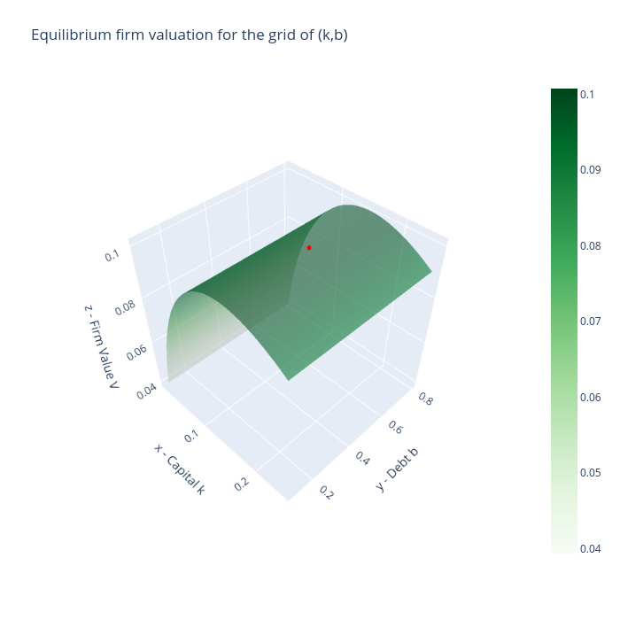
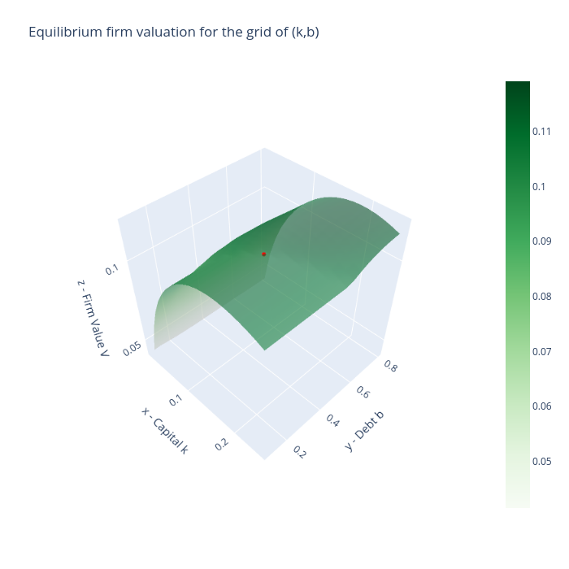
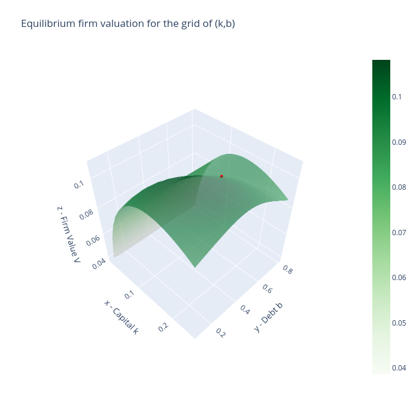
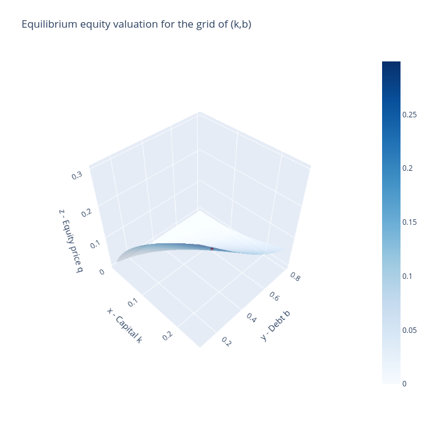
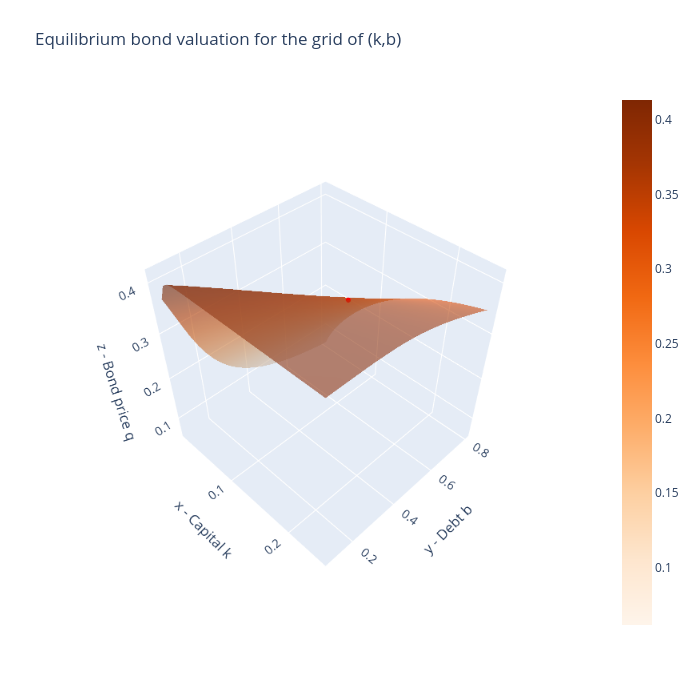
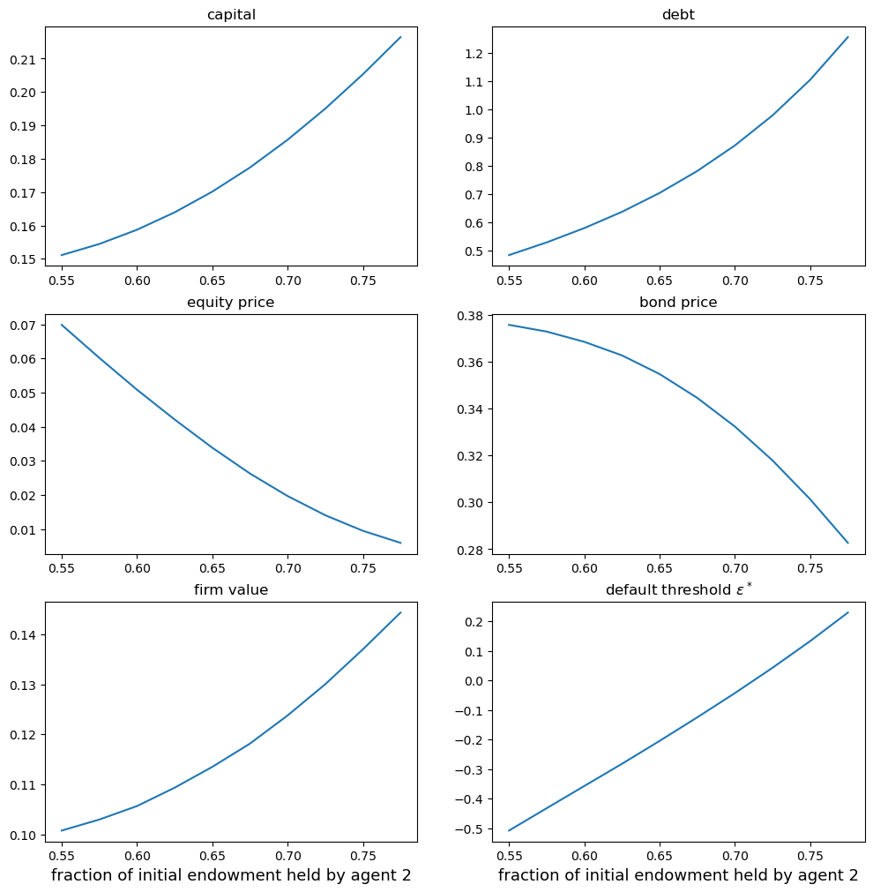
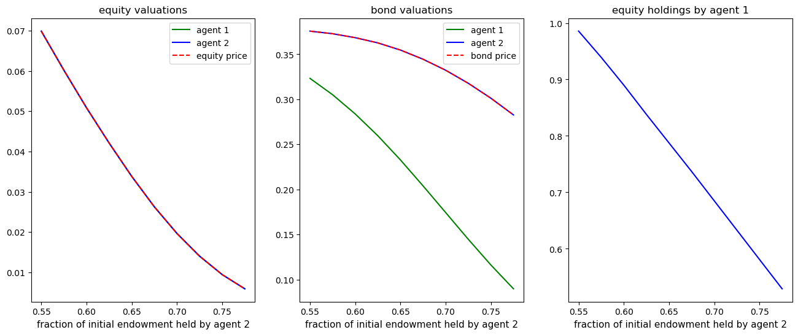

<!DOCTYPE html>


<html lang="en" data-content_root="" >

  <head>
    <meta charset="utf-8" />
    <meta name="viewport" content="width=device-width, initial-scale=1.0" /><meta name="generator" content="Docutils 0.17.1: http://docutils.sourceforge.net/" />

    <title>39. Equilibrium Capital Structures with Incomplete Markets &#8212; Advanced Quantitative Economics with Python</title>
    <script src="https://unpkg.com/@popperjs/core@2.9.2/dist/umd/popper.min.js"></script>
    <script src="https://unpkg.com/tippy.js@6.3.1/dist/tippy-bundle.umd.js"></script>
    <script src="https://cdn.jsdelivr.net/npm/feather-icons/dist/feather.min.js"></script>
    
        <script>
            MathJax = {
            loader: {load: ['[tex]/boldsymbol', '[tex]/textmacros']},
            tex: {
                packages: {'[+]': ['boldsymbol', 'textmacros']},
                inlineMath: [['$', '$'], ['\\(', '\\)']],
                processEscapes: true,
                macros: {
                    "argmax" : "arg\\,max",
                    "argmin" : "arg\\,min",
                    "col"    : "col",
                    "Span"   :  "span",
                    "epsilon": "\\varepsilon",
                    "EE": "\\mathbb{E}",
                    "PP": "\\mathbb{P}",
                    "RR": "\\mathbb{R}",
                    "NN": "\\mathbb{N}",
                    "ZZ": "\\mathbb{Z}",
                    "aA": "\\mathcal{A}",
                    "bB": "\\mathcal{B}",
                    "cC": "\\mathcal{C}",
                    "dD": "\\mathcal{D}",
                    "eE": "\\mathcal{E}",
                    "fF": "\\mathcal{F}",
                    "gG": "\\mathcal{G}",
                    "hH": "\\mathcal{H}",
                }
            },
            svg: {
                fontCache: 'global',
                scale: 0.92,
                displayAlign: "center",
            },
            };
        </script>
    
    
  
  
  
  <script data-cfasync="false">
    document.documentElement.dataset.mode = localStorage.getItem("mode") || "";
    document.documentElement.dataset.theme = localStorage.getItem("theme") || "";
  </script>
  
  <!-- Loaded before other Sphinx assets -->
  <link href="_static/styles/theme.css?digest=dfe6caa3a7d634c4db9b" rel="stylesheet" />
<link href="_static/styles/bootstrap.css?digest=dfe6caa3a7d634c4db9b" rel="stylesheet" />
<link href="_static/styles/pydata-sphinx-theme.css?digest=dfe6caa3a7d634c4db9b" rel="stylesheet" />

  
  <link href="_static/vendor/fontawesome/6.5.2/css/all.min.css?digest=dfe6caa3a7d634c4db9b" rel="stylesheet" />
  <link rel="preload" as="font" type="font/woff2" crossorigin href="_static/vendor/fontawesome/6.5.2/webfonts/fa-solid-900.woff2" />
<link rel="preload" as="font" type="font/woff2" crossorigin href="_static/vendor/fontawesome/6.5.2/webfonts/fa-brands-400.woff2" />
<link rel="preload" as="font" type="font/woff2" crossorigin href="_static/vendor/fontawesome/6.5.2/webfonts/fa-regular-400.woff2" />

    <link rel="stylesheet" type="text/css" href="_static/pygments.css" />
    <link rel="stylesheet" href="_static/styles/quantecon-book-theme.css?digest=bd0785fbb14d8d2bd4d9ae501d79ed8d3bc089ec" type="text/css" />
    <link rel="stylesheet" type="text/css" href="_static/togglebutton.css" />
    <link rel="stylesheet" type="text/css" href="_static/copybutton.css" />
    <link rel="stylesheet" type="text/css" href="_static/mystnb.4510f1fc1dee50b3e5859aac5469c37c29e427902b24a333a5f9fcb2f0b3ac41.css" />
    <link rel="stylesheet" type="text/css" href="_static/sphinx-thebe.css" />
    <link rel="stylesheet" type="text/css" href="_static/exercise.css" />
    <link rel="stylesheet" type="text/css" href="_static/proof.css" />
    <link rel="stylesheet" type="text/css" href="_static/sphinx-design.5ea377869091fd0449014c60fc090103.min.css" />
  
  <!-- Pre-loaded scripts that we'll load fully later -->
  <link rel="preload" as="script" href="_static/scripts/bootstrap.js?digest=dfe6caa3a7d634c4db9b" />
<link rel="preload" as="script" href="_static/scripts/pydata-sphinx-theme.js?digest=dfe6caa3a7d634c4db9b" />
  <script src="_static/vendor/fontawesome/6.5.2/js/all.min.js?digest=dfe6caa3a7d634c4db9b"></script>


    <script data-url_root="./" id="documentation_options" src="_static/documentation_options.js"></script>
    <script src="_static/jquery.js"></script>
    <script src="_static/underscore.js"></script>
    <script src="_static/_sphinx_javascript_frameworks_compat.js"></script>
    <script src="_static/doctools.js"></script>
    <script src="_static/sphinx_highlight.js"></script>
    <script src="_static/clipboard.min.js"></script>
    <script src="_static/copybutton.js"></script>
    <script src="_static/scripts/sphinx-book-theme.js"></script>
    <script>let toggleHintShow = 'Click to show';</script>
    <script>let toggleHintHide = 'Click to hide';</script>
    <script>let toggleOpenOnPrint = 'true';</script>
    <script src="_static/togglebutton.js"></script>
    <script src="_static/scripts/quantecon-book-theme.js?digest=d6d86bce9979111653c4c495e33499e1796e172a"></script>
    <script>var togglebuttonSelector = '.toggle, .admonition.dropdown';</script>
    <script src="_static/design-tabs.js"></script>
    <script async="async" src="https://www.googletagmanager.com/gtag/js?id=G-KZLV7PM9LL"></script>
    <script>
                window.dataLayer = window.dataLayer || [];
                function gtag(){ dataLayer.push(arguments); }
                gtag('js', new Date());
                gtag('config', 'G-KZLV7PM9LL');
            </script>
    <script>const THEBE_JS_URL = "https://unpkg.com/thebe@0.8.2/lib/index.js"; const thebe_selector = ".thebe,.cell"; const thebe_selector_input = "pre"; const thebe_selector_output = ".output, .cell_output"</script>
    <script async="async" src="_static/sphinx-thebe.js"></script>
    <script>window.MathJax = {"tex": {"macros": {"argmax": "arg\\,max", "argmin": "arg\\,min", "col": "col", "Span": "span", "epsilon": "\\varepsilon", "EE": "\\mathbb{E}", "PP": "\\mathbb{P}", "RR": "\\mathbb{R}", "NN": "\\mathbb{N}", "ZZ": "\\mathbb{Z}", "aA": "\\mathcal{A}", "bB": "\\mathcal{B}", "cC": "\\mathcal{C}", "dD": "\\mathcal{D}", "eE": "\\mathcal{E}", "fF": "\\mathcal{F}", "gG": "\\mathcal{G}", "hH": "\\mathcal{H}"}}, "options": {"processHtmlClass": "tex2jax_process|mathjax_process|math|output_area"}}</script>
    <script defer="defer" src="https://cdn.jsdelivr.net/npm/mathjax@3/es5/tex-mml-chtml.js"></script>
    <script>DOCUMENTATION_OPTIONS.pagename = 'BCG_incomplete_mkts';</script>
    <link rel="canonical" href="https://python-advanced.quantecon.org/BCG_incomplete_mkts.html" />
    <link rel="shortcut icon" href="_static/lectures-favicon.ico"/>
    <link rel="index" title="Index" href="genindex.html" />
    <link rel="search" title="Search" href="search.html" />
    <link rel="next" title="40. Optimal Unemployment Insurance" href="un_insure.html" />
    <link rel="prev" title="38. Irrelevance of Capital Structures with Complete Markets" href="BCG_complete_mkts.html" />

<!-- Normal Meta Tags -->
<meta name="author" context="Thomas J. Sargent &amp; John Stachurski" />
<meta name="keywords" content="Python, QuantEcon, Quantitative Economics, Economics, Sloan, Alfred P. Sloan Foundation, Tom J. Sargent, John Stachurski" />
<meta name="description" content=This website presents a set of lectures on advanced quantitative economic modeling, designed and written by Thomas J. Sargent and John Stachurski. />

<!-- Twitter tags -->
<meta name="twitter:card" content="summary" />
<meta name="twitter:site" content="@quantecon" />
<meta name="twitter:title" content="Equilibrium Capital Structures with Incomplete Markets"/>
<meta name="twitter:description" content="This website presents a set of lectures on advanced quantitative economic modeling, designed and written by Thomas J. Sargent and John Stachurski.">
<meta name="twitter:creator" content="@quantecon">
<meta name="twitter:image" content="https://assets.quantecon.org/img/qe-twitter-logo.png">

<!-- Opengraph tags -->
<meta property="og:title" content="Equilibrium Capital Structures with Incomplete Markets" />
<meta property="og:type" content="website" />
<meta property="og:url" content="https://python-advanced.quantecon.org/BCG_incomplete_mkts.html" />
<meta property="og:image" content="https://assets.quantecon.org/img/qe-og-logo.png" />
<meta property="og:description" content="This website presents a set of lectures on advanced quantitative economic modeling, designed and written by Thomas J. Sargent and John Stachurski." />
<meta property="og:site_name" content="Advanced Quantitative Economics with Python" />
<meta name="theme-color" content="#ffffff" />

  </head>
<body>


    <span id="top"></span>

    <div class="qe-wrapper">

        <div class="qe-main">

            <div class="qe-page" id=BCG_incomplete_mkts>

                <div class="qe-page__toc">

                    <div class="inner">

                        
                        <div class="qe-page__toc-header">
                            On this page
                        </div>


                        <nav id="bd-toc-nav" class="qe-page__toc-nav">
                            <ul class="visible nav section-nav flex-column">
<li class="toc-h2 nav-item toc-entry"><a class="reference internal nav-link" href="#introduction">39.1. Introduction</a><ul class="nav section-nav flex-column">
<li class="toc-h3 nav-item toc-entry"><a class="reference internal nav-link" href="#setup">39.1.1. Setup</a></li>
<li class="toc-h3 nav-item toc-entry"><a class="reference internal nav-link" href="#ownership">39.1.2. Ownership</a></li>
<li class="toc-h3 nav-item toc-entry"><a class="reference internal nav-link" href="#measures-of-agents-and-firms">39.1.3. Measures of agents and firms</a></li>
<li class="toc-h3 nav-item toc-entry"><a class="reference internal nav-link" href="#endowments">39.1.4. Endowments</a></li>
<li class="toc-h3 nav-item toc-entry"><a class="reference internal nav-link" href="#feasibility">39.1.5. Feasibility:</a></li>
<li class="toc-h3 nav-item toc-entry"><a class="reference internal nav-link" href="#parameterizations">39.1.6. Parameterizations</a></li>
<li class="toc-h3 nav-item toc-entry"><a class="reference internal nav-link" href="#preferences">39.1.7. Preferences:</a></li>
<li class="toc-h3 nav-item toc-entry"><a class="reference internal nav-link" href="#risk-sharing-motives">39.1.8. Risk-sharing motives</a></li>
</ul>
</li>
<li class="toc-h2 nav-item toc-entry"><a class="reference internal nav-link" href="#asset-markets">39.2. Asset Markets</a><ul class="nav section-nav flex-column">
<li class="toc-h3 nav-item toc-entry"><a class="reference internal nav-link" href="#consumers">39.2.1. Consumers</a></li>
<li class="toc-h3 nav-item toc-entry"><a class="reference internal nav-link" href="#pricing-functions">39.2.2. Pricing functions</a></li>
<li class="toc-h3 nav-item toc-entry"><a class="reference internal nav-link" href="#firms">39.2.3. Firms</a><ul class="nav section-nav flex-column">
<li class="toc-h4 nav-item toc-entry"><a class="reference internal nav-link" href="#firms-optimization-problem">39.2.3.1. Firm’s optimization problem</a></li>
</ul>
</li>
</ul>
</li>
<li class="toc-h2 nav-item toc-entry"><a class="reference internal nav-link" href="#equilibrium-verification">39.3. Equilibrium verification</a></li>
<li class="toc-h2 nav-item toc-entry"><a class="reference internal nav-link" href="#pseudo-code">39.4. Pseudo Code</a></li>
<li class="toc-h2 nav-item toc-entry"><a class="reference internal nav-link" href="#code">39.5. Code</a></li>
<li class="toc-h2 nav-item toc-entry"><a class="reference internal nav-link" href="#examples">39.6. Examples</a><ul class="nav section-nav flex-column">
<li class="toc-h3 nav-item toc-entry"><a class="reference internal nav-link" href="#first-example">39.6.1. First example</a><ul class="nav section-nav flex-column">
<li class="toc-h4 nav-item toc-entry"><a class="reference internal nav-link" href="#a-modigliani-miller-theorem">39.6.1.1. A Modigliani-Miller theorem?</a></li>
<li class="toc-h4 nav-item toc-entry"><a class="reference internal nav-link" href="#equilibrium-equity-and-bond-price-functions">39.6.1.2. Equilibrium equity and bond price functions</a></li>
</ul>
</li>
<li class="toc-h3 nav-item toc-entry"><a class="reference internal nav-link" href="#comments-on-equilibrium-pricing-functions">39.6.2. Comments on equilibrium pricing functions</a></li>
<li class="toc-h3 nav-item toc-entry"><a class="reference internal nav-link" href="#another-example-economy">39.6.3. Another example economy</a></li>
</ul>
</li>
<li class="toc-h2 nav-item toc-entry"><a class="reference internal nav-link" href="#a-picture-worth-a-thousand-words">39.7. A picture worth a thousand words</a></li>
</ul>
                            <p class="logo">
                                
                                    
                                    <a href=https://quantecon.org></a>
                                    
                                    
                                
                            </p>

                            <p class="powered">Powered by <a href="https://jupyterbook.org/">Jupyter Book</a></p>

                        </nav>

                        <div class="qe-page__toc-footer">
                            
                            
                            <p><a href="#top"><strong>Back to top</strong></a></p>
                        </div>

                    </div>

                </div>

                <div class="qe-page__header">

                    <div class="qe-page__header-copy">

                        <p class="qe-page__header-heading"><a href="intro.html">Advanced Quantitative Economics with Python</a></p>

                        <p class="qe-page__header-subheading">Equilibrium Capital Structures with Incomplete Markets</p>

                    </div>
                    <!-- length 2, since its a string and empty dict has length 2 - {} -->
                        <p class="qe-page__header-authors" font-size="18">
                            
                                
                                    <a href="http://www.tomsargent.com/" target="_blank"><span>Thomas J. Sargent</span></a>
                                
                            
                                
                                    and <a href="https://johnstachurski.net/" target="_blank"><span>John Stachurski</span></a>
                                
                            
                        </p>


                </div> <!-- .page__header -->


                
                <main class="qe-page__content" role="main">
                    
                    <div>
                        
  <div id="qe-notebook-header" align="right" style="text-align:right;">
        <a href="https://quantecon.org/" title="quantecon.org">
                
        </a>
</div><section class="tex2jax_ignore mathjax_ignore" id="equilibrium-capital-structures-with-incomplete-markets">
<h1><span class="section-number">39. </span>Equilibrium Capital Structures with Incomplete Markets<a class="headerlink" href="#equilibrium-capital-structures-with-incomplete-markets" title="Permalink to this heading">#</a></h1>
<p>In addition to what’s in Anaconda, this lecture will need the following libraries:</p>
<div class="cell tag_hide-output docutils container">
<div class="cell_input above-output-prompt docutils container">
<div class="highlight-ipython3 notranslate"><div class="highlight"><pre><span></span><span class="o">!</span>pip<span class="w"> </span>install<span class="w"> </span>--upgrade<span class="w"> </span>quantecon
<span class="o">!</span>conda<span class="w"> </span>install<span class="w"> </span>-y<span class="w"> </span>-c<span class="w"> </span>plotly<span class="w"> </span>plotly<span class="w"> </span>plotly-orca
</pre></div>
</div>
</div>
<details class="hide below-input">
<summary aria-label="Toggle hidden content">
<span class="collapsed">Show code cell output</span>
<span class="expanded">Hide code cell output</span>
</summary>
<div class="cell_output docutils container">
<div class="output stream highlight-myst-ansi notranslate"><div class="highlight"><pre><span></span>Requirement already satisfied: quantecon in /home/runner/miniconda3/envs/quantecon/lib/python3.12/site-packages (0.8.0)
</pre></div>
</div>
<div class="output stream highlight-myst-ansi notranslate"><div class="highlight"><pre><span></span>Requirement already satisfied: numba&gt;=0.49.0 in /home/runner/miniconda3/envs/quantecon/lib/python3.12/site-packages (from quantecon) (0.60.0)
Requirement already satisfied: numpy&gt;=1.17.0 in /home/runner/miniconda3/envs/quantecon/lib/python3.12/site-packages (from quantecon) (1.26.4)
Requirement already satisfied: requests in /home/runner/miniconda3/envs/quantecon/lib/python3.12/site-packages (from quantecon) (2.32.3)
Requirement already satisfied: scipy&gt;=1.5.0 in /home/runner/miniconda3/envs/quantecon/lib/python3.12/site-packages (from quantecon) (1.13.1)
Requirement already satisfied: sympy in /home/runner/miniconda3/envs/quantecon/lib/python3.12/site-packages (from quantecon) (1.13.2)
Requirement already satisfied: llvmlite&lt;0.44,&gt;=0.43.0dev0 in /home/runner/miniconda3/envs/quantecon/lib/python3.12/site-packages (from numba&gt;=0.49.0-&gt;quantecon) (0.43.0)
Requirement already satisfied: charset-normalizer&lt;4,&gt;=2 in /home/runner/miniconda3/envs/quantecon/lib/python3.12/site-packages (from requests-&gt;quantecon) (3.3.2)
Requirement already satisfied: idna&lt;4,&gt;=2.5 in /home/runner/miniconda3/envs/quantecon/lib/python3.12/site-packages (from requests-&gt;quantecon) (3.7)
Requirement already satisfied: urllib3&lt;3,&gt;=1.21.1 in /home/runner/miniconda3/envs/quantecon/lib/python3.12/site-packages (from requests-&gt;quantecon) (2.2.3)
Requirement already satisfied: certifi&gt;=2017.4.17 in /home/runner/miniconda3/envs/quantecon/lib/python3.12/site-packages (from requests-&gt;quantecon) (2024.8.30)
Requirement already satisfied: mpmath&lt;1.4,&gt;=1.1.0 in /home/runner/miniconda3/envs/quantecon/lib/python3.12/site-packages (from sympy-&gt;quantecon) (1.3.0)
</pre></div>
</div>
<div class="output stream highlight-myst-ansi notranslate"><div class="highlight"><pre><span></span>Channels:
 - plotly
 - default
 - defaults
Platform: linux-64
Collecting package metadata (repodata.json): - 
</pre></div>
</div>
<div class="output stream highlight-myst-ansi notranslate"><div class="highlight"><pre><span></span>\ 
</pre></div>
</div>
<div class="output stream highlight-myst-ansi notranslate"><div class="highlight"><pre><span></span>| 
</pre></div>
</div>
<div class="output stream highlight-myst-ansi notranslate"><div class="highlight"><pre><span></span>done
Solving environment: - 
</pre></div>
</div>
<div class="output stream highlight-myst-ansi notranslate"><div class="highlight"><pre><span></span>\ 
</pre></div>
</div>
<div class="output stream highlight-myst-ansi notranslate"><div class="highlight"><pre><span></span>| 
</pre></div>
</div>
<div class="output stream highlight-myst-ansi notranslate"><div class="highlight"><pre><span></span>/ 
</pre></div>
</div>
<div class="output stream highlight-myst-ansi notranslate"><div class="highlight"><pre><span></span>- 
</pre></div>
</div>
<div class="output stream highlight-myst-ansi notranslate"><div class="highlight"><pre><span></span>\ 
</pre></div>
</div>
<div class="output stream highlight-myst-ansi notranslate"><div class="highlight"><pre><span></span>| 
</pre></div>
</div>
<div class="output stream highlight-myst-ansi notranslate"><div class="highlight"><pre><span></span>/ 
</pre></div>
</div>
<div class="output stream highlight-myst-ansi notranslate"><div class="highlight"><pre><span></span>- 
</pre></div>
</div>
<div class="output stream highlight-myst-ansi notranslate"><div class="highlight"><pre><span></span>\ 
</pre></div>
</div>
<div class="output stream highlight-myst-ansi notranslate"><div class="highlight"><pre><span></span>| 
</pre></div>
</div>
<div class="output stream highlight-myst-ansi notranslate"><div class="highlight"><pre><span></span>/ 
</pre></div>
</div>
<div class="output stream highlight-myst-ansi notranslate"><div class="highlight"><pre><span></span>done
</pre></div>
</div>
<div class="output stream highlight-myst-ansi notranslate"><div class="highlight"><pre><span></span># All requested packages already installed.
</pre></div>
</div>
</div>
</details>
</div>
<section id="introduction">
<h2><span class="section-number">39.1. </span>Introduction<a class="headerlink" href="#introduction" title="Permalink to this heading">#</a></h2>
<p>This is an extension of an earlier lecture <a class="reference internal" href="BCG_complete_mkts.html"><span class="doc">Irrelevance of Capital Structure with Complete Markets</span></a> about a <strong>complete markets</strong>
model.</p>
<p>In contrast to that lecture, this one  describes an instance of a model authored by Bisin, Clementi, and Gottardi <span id="id1">[<a class="reference internal" href="zreferences.html#id32" title="Alberto Bisin, Gian Luca Clementi, and Piero Gottardi. Capital and hedging demand with incomplete markets. Technical Report, NYU and EUI, 2018.">Bisin <em>et al.</em>, 2018</a>]</span>
in which financial markets are <strong>incomplete</strong>.</p>
<p>Instead of being able to trade equities and a full set of one-period
Arrow securities as they can in <a class="reference internal" href="BCG_complete_mkts.html"><span class="doc">Irrelevance of Capital Structure with Complete Markets</span></a>, here consumers and firms trade only equity and a bond.</p>
<p>It is useful to watch how outcomes differ  in the two settings.</p>
<p>In the complete markets economy in <a class="reference internal" href="BCG_complete_mkts.html"><span class="doc">Irrelevance of Capital Structure with Complete Markets</span></a></p>
<ul class="simple">
<li><p>there is a unique  stochastic discount factor that prices all assets</p></li>
<li><p>consumers’ portfolio choices are indeterminate</p></li>
<li><p>firms’ financial structures are indeterminate, so the model embodies an instance of a Modigliani-Miller irrelevance theorem <span id="id2">[<a class="reference internal" href="zreferences.html#id33" title="Franco Modigliani and Merton H. Miller. Corporation finance and the theory of investment. American Economic Review, XLVIII(3):261-297, 1958.">Modigliani and Miller, 1958</a>]</span></p></li>
<li><p>the aggregate of all firms’ financial structures are indeterminate, a consequence of there being redundant assets</p></li>
</ul>
<p>In the incomplete markets economy studied here</p>
<ul class="simple">
<li><p>there is a not a unique equilibrium stochastic discount factor</p></li>
<li><p>different stochastic discount factors price different assets</p></li>
<li><p>consumers’ portfolio choices are determinate</p></li>
<li><p>while <strong>individual</strong> firms’ financial structures are indeterminate, thus conforming to part of a Modigliani-Miller theorem,
<span id="id3">[<a class="reference internal" href="zreferences.html#id33" title="Franco Modigliani and Merton H. Miller. Corporation finance and the theory of investment. American Economic Review, XLVIII(3):261-297, 1958.">Modigliani and Miller, 1958</a>]</span>, the <strong>aggregate</strong>  of all firms’ financial structures <strong>is</strong> determinate.</p></li>
</ul>
<p>A  <code class="docutils literal notranslate"><span class="pre">Big</span> <span class="pre">K,</span> <span class="pre">little</span> <span class="pre">k</span></code> analysis played an important role in the  previous lecture <a class="reference internal" href="BCG_complete_mkts.html"><span class="doc">Irrelevance of Capital Structure with Complete Markets</span></a>.</p>
<p>A more subtle version of a <code class="docutils literal notranslate"><span class="pre">Big</span> <span class="pre">K,</span> <span class="pre">little</span> <span class="pre">k</span></code>   features in  the   BCG incomplete markets environment here.</p>
<p>We use it to convey the heart of what BCG call a <strong>rational conjectures</strong> equilibrium in which conjectures are about
equilibrium pricing functions in regions of the state space that  an average consumer or firm does not visit in equilibrium.</p>
<p>Note that the absence of complete markets means that now we cannot compute competitive equilibrium prices and allocations by first solving the simple planning problem that we did in <a class="reference internal" href="BCG_complete_mkts.html"><span class="doc">Irrelevance of Capital Structure with Complete Markets</span></a>.</p>
<p>Instead, we compute an equilibrium by solving a system of simultaneous inequalities.</p>
<p>(Here we do not address the interesting question of whether there is a <em>different</em> planning problem that we could use to compute a
competitive equlibrium allocation.)</p>
<section id="setup">
<h3><span class="section-number">39.1.1. </span>Setup<a class="headerlink" href="#setup" title="Permalink to this heading">#</a></h3>
<p>We adopt specifications of preferences and technologies used by Bisin,
Clemente, and Gottardi (2018) <span id="id4">[<a class="reference internal" href="zreferences.html#id32" title="Alberto Bisin, Gian Luca Clementi, and Piero Gottardi. Capital and hedging demand with incomplete markets. Technical Report, NYU and EUI, 2018.">Bisin <em>et al.</em>, 2018</a>]</span> and in our earlier lecture on a complete markets
version of their model.</p>
<p>The economy lasts for two periods, <span class="math notranslate nohighlight">\(t=0, 1\)</span>.</p>
<p>There are two types of consumers named <span class="math notranslate nohighlight">\(i=1,2\)</span>.</p>
<p>A scalar random variable <span class="math notranslate nohighlight">\(\epsilon\)</span> affects both</p>
<ul class="simple">
<li><p>a representative firm’s physical return <span class="math notranslate nohighlight">\(f(k)e^\epsilon\)</span> in
period <span class="math notranslate nohighlight">\(1\)</span> from investing <span class="math notranslate nohighlight">\(k \geq 0\)</span> in capital in period
<span class="math notranslate nohighlight">\(0\)</span>.</p></li>
<li><p>period <span class="math notranslate nohighlight">\(1\)</span> endowments <span class="math notranslate nohighlight">\(w_1^i(\epsilon)\)</span> of the
consumption good for agents <span class="math notranslate nohighlight">\(i =1\)</span> and <span class="math notranslate nohighlight">\(i=2\)</span>.</p></li>
</ul>
</section>
<section id="ownership">
<h3><span class="section-number">39.1.2. </span>Ownership<a class="headerlink" href="#ownership" title="Permalink to this heading">#</a></h3>
<p>A consumer of type <span class="math notranslate nohighlight">\(i\)</span> is endowed with <span class="math notranslate nohighlight">\(w_0^i\)</span> units of the
time <span class="math notranslate nohighlight">\(0\)</span> good and <span class="math notranslate nohighlight">\(w_1^i(\epsilon)\)</span> of the time <span class="math notranslate nohighlight">\(1\)</span>
good when the random variable takes value <span class="math notranslate nohighlight">\(\epsilon\)</span>.</p>
<p>At the start of period <span class="math notranslate nohighlight">\(0\)</span>, a consumer of type <span class="math notranslate nohighlight">\(i\)</span> also owns
<span class="math notranslate nohighlight">\(\theta^i_0\)</span> shares of a representative firm.</p>
</section>
<section id="measures-of-agents-and-firms">
<h3><span class="section-number">39.1.3. </span>Measures of agents and firms<a class="headerlink" href="#measures-of-agents-and-firms" title="Permalink to this heading">#</a></h3>
<p>As in the companion lecture <a class="reference internal" href="BCG_complete_mkts.html"><span class="doc">Irrelevance of Capital Structure with Complete Markets</span></a> that studies a complete markets version of
the model, we follow BCG in assuming that there are unit measures of</p>
<ul class="simple">
<li><p>consumers of type <span class="math notranslate nohighlight">\(i=1\)</span></p></li>
<li><p>consumers of type <span class="math notranslate nohighlight">\(i=2\)</span></p></li>
<li><p>firms with access to a production technology that converts
<span class="math notranslate nohighlight">\(k\)</span> units of time <span class="math notranslate nohighlight">\(0\)</span> good into
<span class="math notranslate nohighlight">\(A k^\alpha e^\epsilon\)</span> units of the time <span class="math notranslate nohighlight">\(1\)</span> good in
random state <span class="math notranslate nohighlight">\(\epsilon\)</span></p></li>
</ul>
<p>Thus, let <span class="math notranslate nohighlight">\(\omega \in [0,1]\)</span> index a particular consumer of type
<span class="math notranslate nohighlight">\(i\)</span>.</p>
<p>Then define Big <span class="math notranslate nohighlight">\(C^i\)</span> as</p>
<div class="math notranslate nohighlight">
\[
C^i = \int_0^1 c^i(\omega) d \, \omega
\]</div>
<p>with components</p>
<div class="math notranslate nohighlight">
\[
\begin{aligned}
C^i_0  &amp; =  \int_0^1 c^i_0(\omega) d \, \omega \cr
C^i_1(\epsilon) &amp;  = \int_0^1 c^i_1(\epsilon;\omega) d \, \omega
\end{aligned}
\]</div>
<p>In the same spirit, let <span class="math notranslate nohighlight">\(\zeta \in [0,1]\)</span> index a particular firm
and let firm <span class="math notranslate nohighlight">\(\zeta\)</span> purchase <span class="math notranslate nohighlight">\(k(\zeta)\)</span> units of capital
and issue <span class="math notranslate nohighlight">\(b(\zeta)\)</span> bonds.</p>
<p>Then define Big <span class="math notranslate nohighlight">\(K\)</span> and Big <span class="math notranslate nohighlight">\(B\)</span> as</p>
<div class="math notranslate nohighlight">
\[
K = \int_0^1 k(\zeta) d \, \zeta, \quad B = \int_0^1 b(\zeta) d \, \zeta
\]</div>
<p>The assumption that there are equal measures of our three types of
agents justifies our assumption that  each individual agent is a
powerless <strong>price taker</strong>:</p>
<ul class="simple">
<li><p>an individual consumer chooses its own (infinitesimal) part
<span class="math notranslate nohighlight">\(c^i(\omega)\)</span> of <span class="math notranslate nohighlight">\(C^i\)</span> taking prices as given</p></li>
<li><p>an individual firm chooses its own (infinitesmimal) part
<span class="math notranslate nohighlight">\(k(\zeta)\)</span> of <span class="math notranslate nohighlight">\(K\)</span> and <span class="math notranslate nohighlight">\(b(\zeta)\)</span> of <span class="math notranslate nohighlight">\(B\)</span>
taking pricing functions as given</p></li>
<li><p>However, equilibrium prices depend on the <code class="docutils literal notranslate"><span class="pre">Big</span> <span class="pre">K,</span> <span class="pre">Big</span> <span class="pre">B,</span> <span class="pre">Big</span> <span class="pre">C</span></code>
objects <span class="math notranslate nohighlight">\(K\)</span>, <span class="math notranslate nohighlight">\(B\)</span>, and <span class="math notranslate nohighlight">\(C\)</span></p></li>
</ul>
<p>The assumption about measures of agents is a powerful device for making
a host of competitive agents take as given the equilibrium prices that
turn out to be determined by the decisions of hosts of agents who are just like
them.</p>
<p>We call an equilibrium <strong>symmetric</strong> if</p>
<ul class="simple">
<li><p>all type <span class="math notranslate nohighlight">\(i\)</span> consumers choose the same consumption profiles so
that <span class="math notranslate nohighlight">\(c^i(\omega) = C^i\)</span> for all <span class="math notranslate nohighlight">\(\omega \in [0,1]\)</span></p></li>
<li><p>all firms choose the same levels of <span class="math notranslate nohighlight">\(k\)</span> and <span class="math notranslate nohighlight">\(b\)</span> so that
<span class="math notranslate nohighlight">\(k(\zeta) = K\)</span>, <span class="math notranslate nohighlight">\(b(\zeta) = B\)</span> for all
<span class="math notranslate nohighlight">\(\zeta \in [0,1]\)</span></p></li>
</ul>
<p>In this lecture, we restrict ourselves to describing symmetric
equilibria.</p>
</section>
<section id="endowments">
<h3><span class="section-number">39.1.4. </span>Endowments<a class="headerlink" href="#endowments" title="Permalink to this heading">#</a></h3>
<p>Per capital economy-wide endowments in periods <span class="math notranslate nohighlight">\(0\)</span> and <span class="math notranslate nohighlight">\(1\)</span> are</p>
<div class="math notranslate nohighlight">
\[
\begin{aligned}
w_0 &amp; = w_0^1 + w_0^2 \cr
w_1(\epsilon) &amp; =  w_1^1(\epsilon) + w_1^2(\epsilon) \textrm{ in state }\epsilon
\end{aligned}
\]</div>
</section>
<section id="feasibility">
<h3><span class="section-number">39.1.5. </span>Feasibility:<a class="headerlink" href="#feasibility" title="Permalink to this heading">#</a></h3>
<p>Where <span class="math notranslate nohighlight">\(\alpha \in (0,1)\)</span> and <span class="math notranslate nohighlight">\(A &gt;0\)</span></p>
<div class="math notranslate nohighlight">
\[
\begin{aligned}
 C_0^1 + C_0^2 &amp; = w_0^1 + w_0^2 - K \cr
 C_1^1(\epsilon) + C_1^2(\epsilon) &amp; =  w_1^1(\epsilon) + w_1^2(\epsilon) + e^\epsilon \int_0^1 f(k(\zeta)) d \zeta, \quad k \geq 0
\end{aligned}
\]</div>
<p>where <span class="math notranslate nohighlight">\(f(k) = A k^\alpha, A &gt;0, \alpha \in (0,1)\)</span>.</p>
</section>
<section id="parameterizations">
<h3><span class="section-number">39.1.6. </span>Parameterizations<a class="headerlink" href="#parameterizations" title="Permalink to this heading">#</a></h3>
<p>Following BCG, we shall employ the following parameterizations:</p>
<div class="math notranslate nohighlight">
\[
\begin{aligned}
\epsilon &amp; \sim {\mathcal N}(\mu, \sigma^2) \cr
u(c) &amp; = \frac{c^{1-\gamma}}{1 - \gamma} \cr
w_1^i(\epsilon) &amp; = e^{- \chi_i \mu - .5 \chi_i^2 \sigma^2 + \chi_i \epsilon} , \quad \chi_i \in [0,1]
\end{aligned}
\]</div>
<p>Sometimes instead of asuming <span class="math notranslate nohighlight">\(\epsilon \sim g(\epsilon) = {\mathcal N}(0,\sigma^2)\)</span>,
we’ll assume that <span class="math notranslate nohighlight">\(g(\cdot)\)</span> is a probability
mass function that serves as a discrete approximation to a standardized
normal density.</p>
</section>
<section id="preferences">
<h3><span class="section-number">39.1.7. </span>Preferences:<a class="headerlink" href="#preferences" title="Permalink to this heading">#</a></h3>
<p>A consumer of type <span class="math notranslate nohighlight">\(i\)</span> orders period <span class="math notranslate nohighlight">\(0\)</span> consumption
<span class="math notranslate nohighlight">\(c_0^i\)</span> and state <span class="math notranslate nohighlight">\(\epsilon\)</span>-period <span class="math notranslate nohighlight">\(1\)</span> consumption
<span class="math notranslate nohighlight">\(c^i(\epsilon)\)</span> by</p>
<div class="math notranslate nohighlight">
\[
u^i = u(c_0^i) + \beta \int u(c_1^i(\epsilon)) g (\epsilon) d \epsilon, \quad i = 1,2
\]</div>
<p><span class="math notranslate nohighlight">\(\beta \in (0,1)\)</span> and the one-period utility function is</p>
<div class="math notranslate nohighlight">
\[\begin{split}
u(c) = \begin{cases}
\frac{c^{1 -\gamma}} { 1 - \gamma} &amp; \textrm{if  } \gamma \neq 1 \\
\log c &amp; \textrm{if  } \gamma = 1
\end{cases}
\end{split}\]</div>
</section>
<section id="risk-sharing-motives">
<h3><span class="section-number">39.1.8. </span>Risk-sharing motives<a class="headerlink" href="#risk-sharing-motives" title="Permalink to this heading">#</a></h3>
<p>The two types of agents’ period <span class="math notranslate nohighlight">\(1\)</span> endowments have different correlations with
the physical return on capital.</p>
<p>Endowment differences give agents incentives to trade risks that in the
complete market version of the model showed up in their demands for
equity and in their demands and supplies of one-period Arrow securities.</p>
<p>In the incomplete-markets setting under study here, these differences
show up in differences in the two types of consumers’ demands for a
typical firm’s bonds and equity, the only two assets that agents can now
trade.</p>
</section>
</section>
<section id="asset-markets">
<h2><span class="section-number">39.2. </span>Asset Markets<a class="headerlink" href="#asset-markets" title="Permalink to this heading">#</a></h2>
<p>Markets are incomplete: <em>ex cathedra</em> we the model builders declare that only equities and bonds issued by representative
firms can be traded.</p>
<p>Let <span class="math notranslate nohighlight">\(\theta^i\)</span> and <span class="math notranslate nohighlight">\(\xi^i\)</span> be a consumer of type
<span class="math notranslate nohighlight">\(i\)</span>’s post-trade holdings of equity and bonds, respectively.</p>
<p>A firm issues bonds promising to pay <span class="math notranslate nohighlight">\(b\)</span> units of consumption at
time <span class="math notranslate nohighlight">\(t=1\)</span> and purchases <span class="math notranslate nohighlight">\(k\)</span> units of physical capital at
time <span class="math notranslate nohighlight">\(t=0\)</span>.</p>
<p>When <span class="math notranslate nohighlight">\(e^\epsilon A k^\alpha &lt; b\)</span> at time <span class="math notranslate nohighlight">\(1\)</span>, the firm defaults and its output is
divided equally among bondholders.</p>
<p>Evidently, when the productivity shock
<span class="math notranslate nohighlight">\(\epsilon &lt; \epsilon^* = \log \left(\frac{b}{ Ak^\alpha}\right)\)</span>,
the firm defaults on its debt</p>
<p>Payoffs to equity and debt at date 1 as functions of the productivity
shock <span class="math notranslate nohighlight">\(\epsilon\)</span> are thus</p>
<div class="math notranslate nohighlight" id="equation-payofffns">
<span class="eqno">(39.1)<a class="headerlink" href="#equation-payofffns" title="Permalink to this equation">#</a></span>\[\begin{split}\begin{aligned}
d^e(k,b;\epsilon) &amp;= \max \left\{ e^\epsilon  A k^\alpha - b, 0 \right\} \\
d^b(k,b;\epsilon) &amp;= \min \left\{ \frac{e^\epsilon  A k^\alpha}{b}, 1 \right\}
\end{aligned}\end{split}\]</div>
<p>A firm faces a bond price function <span class="math notranslate nohighlight">\(p(k,b)\)</span> when it issues
<span class="math notranslate nohighlight">\(b\)</span> bonds and purchases <span class="math notranslate nohighlight">\(k\)</span> units of physical capital.</p>
<p>A firm’s equity is worth <span class="math notranslate nohighlight">\(q(k,b)\)</span> when it issues <span class="math notranslate nohighlight">\(b\)</span> bonds
and purchases <span class="math notranslate nohighlight">\(k\)</span> units of physical capital.</p>
<p>A firm regards an equity-pricing function <span class="math notranslate nohighlight">\(q(k,b)\)</span> and a bond
pricing function <span class="math notranslate nohighlight">\(p(k,b)\)</span> as exogenous in the sense that they are
not affected by its choices of <span class="math notranslate nohighlight">\(k\)</span> and <span class="math notranslate nohighlight">\(b\)</span>.</p>
<p>Consumers face equilibrium prices <span class="math notranslate nohighlight">\(\check q\)</span> and <span class="math notranslate nohighlight">\(\check p\)</span>
for bonds and equities, where <span class="math notranslate nohighlight">\(\check q\)</span> and <span class="math notranslate nohighlight">\(\check p\)</span> are
both scalars.</p>
<p>Consumers are price takers and only need to know the scalars <span class="math notranslate nohighlight">\(\check q, \check p\)</span>.</p>
<p>Firms are <em>price function</em> takers and  must know the functions <span class="math notranslate nohighlight">\(q(k,b), p(k,b)\)</span> in order
completely to pose their optimum problems.</p>
<section id="consumers">
<h3><span class="section-number">39.2.1. </span>Consumers<a class="headerlink" href="#consumers" title="Permalink to this heading">#</a></h3>
<p>Each consumer of type <span class="math notranslate nohighlight">\(i\)</span> is endowed with <span class="math notranslate nohighlight">\(w_0^i\)</span> of the
time <span class="math notranslate nohighlight">\(0\)</span> consumption good, <span class="math notranslate nohighlight">\(w_1^i(\epsilon)\)</span> of the time
<span class="math notranslate nohighlight">\(1\)</span>, state <span class="math notranslate nohighlight">\(\epsilon\)</span> consumption good  and also owns a fraction
<span class="math notranslate nohighlight">\(\theta^i_0 \in (0,1)\)</span> of the initial value of a representative
firm, where <span class="math notranslate nohighlight">\(\theta^1_0 + \theta^2_0 = 1\)</span>.</p>
<p>The initial value of a representative firm is <span class="math notranslate nohighlight">\(V\)</span> (an object to be
determined in a rational expectations equilibrium).</p>
<p>Consumer <span class="math notranslate nohighlight">\(i\)</span> buys <span class="math notranslate nohighlight">\(\theta^i\)</span> shares of equity and buys bonds
worth <span class="math notranslate nohighlight">\(\check p \xi^i\)</span> where <span class="math notranslate nohighlight">\(\check p\)</span> is the bond price.</p>
<p>Being a price-taker, a consumer takes <span class="math notranslate nohighlight">\(V\)</span>, <span class="math notranslate nohighlight">\(\check q\)</span>, <span class="math notranslate nohighlight">\(\check p\)</span>, and <span class="math notranslate nohighlight">\(K, B\)</span>
as given.</p>
<p>Consumers know that equilibrium payoff functions for bonds and equities take the form</p>
<div class="math notranslate nohighlight">
\[\begin{split}
\begin{aligned}
d^e(K,B;\epsilon) &amp;= \max \left\{ e^\epsilon  A K^\alpha - B, 0 \right\} \\
d^b(K,B;\epsilon) &amp;= \min \left\{ \frac{e^\epsilon  A K^\alpha}{B}, 1 \right\}
\end{aligned}
\end{split}\]</div>
<p>Consumer <span class="math notranslate nohighlight">\(i\)</span>’s optimization problem is</p>
<div class="math notranslate nohighlight">
\[\begin{split}
\begin{aligned}
\max_{c^i_0,\theta^i,\xi^i,c^i_1(\epsilon)} &amp; u(c^i_0) + \beta \int u(c^i(\epsilon)) g(\epsilon) \ d\epsilon \\
\text{subject to } \quad
&amp; c^i_0 = w^i_0 + \theta^i_0V - \check q\theta^i - \check p \xi^i, \\
&amp; c^i_1(\epsilon) = w^i_1(\epsilon) + \theta^i d^e(K,B;\epsilon) + \xi^i d^b(K,B;\epsilon) \ \forall \ \epsilon, \\
&amp; \theta^i \geq 0, \xi^i \geq 0.
\end{aligned}
\end{split}\]</div>
<p>The last two inequalities impose that the consumer cannot short sell either
equity or bonds.</p>
<p>In a rational expectations equilibrium, <span class="math notranslate nohighlight">\(\check q = q(K,B)\)</span> and <span class="math notranslate nohighlight">\(\check p = p(K,B)\)</span></p>
<p>We form consumer <span class="math notranslate nohighlight">\(i\)</span>’s Lagrangian:</p>
<div class="math notranslate nohighlight">
\[\begin{split}
\begin{aligned}
L^i := &amp;  u(c^i_0) + \beta \int u(c^i(\epsilon)) g(\epsilon) \ d\epsilon  \\
     &amp; +\lambda^i_0 [w^i_0 + \theta_0V - \check q\theta^i - \check p \xi^i - c^i_0]  \\
     &amp; +  \beta \int \lambda^i_1(\epsilon) \left[ w^i_1(\epsilon) + \theta^i d^e(K,B;\epsilon) + \xi^i d^b(K,B;\epsilon) - c^i_1(\epsilon) \right] g(\epsilon) \ d\epsilon
\end{aligned}
\end{split}\]</div>
<p>Consumer <span class="math notranslate nohighlight">\(i\)</span>’s first-order necessary conditions for an optimum
include:</p>
<div class="math notranslate nohighlight">
\[\begin{split}
\begin{aligned}
c^i_0:&amp; \quad u^\prime(c^i_0) = \lambda^i_0 \\
c^i_1(\epsilon):&amp; \quad u^\prime(c^i_1(\epsilon)) = \lambda^i_1(\epsilon) \\
\theta^i:&amp; \quad \beta \int \lambda^i_1(\epsilon) d^e(K,B;\epsilon) g(\epsilon) \ d\epsilon \leq \lambda^i_0 \check q \quad (= \ \ \text{if} \ \ \theta^i&gt;0) \\
\xi^i:&amp; \quad \beta \int \lambda^i_1(\epsilon) d^b(K,B;\epsilon) g(\epsilon) \ d\epsilon \leq \lambda^i_0 \check p \quad (= \ \ \text{if} \ \ b^i&gt;0) \\
\end{aligned}
\end{split}\]</div>
<p>We can combine and rearrange consumer <span class="math notranslate nohighlight">\(i\)</span>’s first-order
conditions to become:</p>
<div class="math notranslate nohighlight">
\[\begin{split}
\begin{aligned}
\check q \geq \beta \int \frac{u^\prime(c^i_1(\epsilon))}{u^\prime(c^i_0)} d^e(K,B;\epsilon) g(\epsilon) \ d\epsilon \quad (= \ \ \text{if} \ \ \theta^i&gt;0) \\
\check p \geq \beta \int \frac{u^\prime(c^i_1(\epsilon))}{u^\prime(c^i_0)} d^b(K,B;\epsilon) g(\epsilon) \ d\epsilon \quad (= \ \ \text{if} \ \ b^i&gt;0)\\
\end{aligned}
\end{split}\]</div>
<p>These inequalities imply that in a symmetric rational expectations equilibrium  consumption allocations and
prices  satisfy</p>
<div class="math notranslate nohighlight">
\[\begin{split}
\begin{aligned}
\check q = \max_i \beta \int \frac{u^\prime(c^i_1(\epsilon))}{u^\prime(c^i_0)} d^e(K,B;\epsilon) g(\epsilon) \ d\epsilon \\
\check p = \max_i \beta \int \frac{u^\prime(c^i_1(\epsilon))}{u^\prime(c^i_0)} d^b(K,B;\epsilon) g(\epsilon) \ d\epsilon \\
\end{aligned}
\end{split}\]</div>
</section>
<section id="pricing-functions">
<h3><span class="section-number">39.2.2. </span>Pricing functions<a class="headerlink" href="#pricing-functions" title="Permalink to this heading">#</a></h3>
<p>When individual firms solve their optimization problems, they take big
<span class="math notranslate nohighlight">\(C^i\)</span>’s as fixed objects that they don’t influence.</p>
<p>A representative firm faces a price function <span class="math notranslate nohighlight">\(q(k,b)\)</span> for its
equity and a price function <span class="math notranslate nohighlight">\(p(k, b)\)</span> per unit of bonds that
satisfy</p>
<div class="math notranslate nohighlight">
\[\begin{split}
\begin{aligned}
q(k,b) = \max_i \beta \int \frac{u^\prime(C^i_1(\epsilon))}{u^\prime(C^i_0)} d^e(k,b;\epsilon) g(\epsilon) \ d\epsilon \\
p(k,b) = \max_i \beta \int \frac{u^\prime(C^i_1(\epsilon))}{u^\prime(C^i_0)} d^b(k,b;\epsilon) g(\epsilon) \ d\epsilon \\
\end{aligned}
\end{split}\]</div>
<p>where the payoff functions are described by equations <a class="reference internal" href="#equation-payofffns">(39.1)</a>.</p>
<p>Notice the appearance of big <span class="math notranslate nohighlight">\(C^i\)</span>’s on the right sides of these
two equations that define equilibrium pricing functions.</p>
<p>The two price functions describe outcomes not only for equilibrium choices
<span class="math notranslate nohighlight">\(K, B\)</span> of capital <span class="math notranslate nohighlight">\(k\)</span> and debt <span class="math notranslate nohighlight">\(b\)</span>, but also for any
<strong>out-of-equilibrium</strong> pairs <span class="math notranslate nohighlight">\((k, b) \neq (K, B)\)</span>.</p>
<p>The firm is assumed to know both price functions.</p>
<p>This means that the firm understands that its choice of <span class="math notranslate nohighlight">\(k,b\)</span> influences how markets price its equity and debt.</p>
<p>This package of assumptions is sometimes called  <strong>rational conjectures</strong> (about price functions).</p>
<p>BCG give credit to Makowski for emphasizing and clarifying how rational conjectures are components of  rational expectations equilibria.</p>
</section>
<section id="firms">
<h3><span class="section-number">39.2.3. </span>Firms<a class="headerlink" href="#firms" title="Permalink to this heading">#</a></h3>
<p>The firm chooses capital <span class="math notranslate nohighlight">\(k\)</span> and debt <span class="math notranslate nohighlight">\(b\)</span> to maximize its
market value:</p>
<div class="math notranslate nohighlight">
\[
V \equiv \max_{k,b} -k + q(k,b) + p(k,b) b
\]</div>
<p>Attributing value maximization to the firm is a good idea because in equilibrium consumers of both types
<em>want</em> a firm to maximize its value.</p>
<p>In the special quantitative examples studied here</p>
<ul class="simple">
<li><p>consumers of  types <span class="math notranslate nohighlight">\(i=1,2\)</span> both  hold equity</p></li>
<li><p>only consumers of type <span class="math notranslate nohighlight">\(i=2\)</span> hold debt; consumers of type
<span class="math notranslate nohighlight">\(i=1\)</span> hold none.</p></li>
</ul>
<p>These outcomes occur because we follow BCG and set parameters so that a
type 2 consumer’s stochastic endowment of the consumption good in period
<span class="math notranslate nohighlight">\(1\)</span> is more correlated with the firm’s output than is a type 1
consumer’s.</p>
<p>This gives consumers of type <span class="math notranslate nohighlight">\(2\)</span> a motive to hedge their second period
endowment risk by holding bonds (they also choose to
hold some equity).</p>
<p>These outcomes mean that the pricing functions end up
satisfying</p>
<div class="math notranslate nohighlight">
\[\begin{split}
\begin{aligned}
q(k,b) &amp;= \beta \int \frac{u^\prime(C^1_1(\epsilon))}{u^\prime(C^1_0)} d^e(k,b;\epsilon) g(\epsilon) \ d\epsilon = \beta \int \frac{u^\prime(C^2_1(\epsilon))}{u^\prime(C^2_0)} d^e(k,b;\epsilon) g(\epsilon) \ d\epsilon \\
p(k,b) &amp;= \beta \int \frac{u^\prime(C^2_1(\epsilon))}{u^\prime(C^2_0)} d^b(k,b;\epsilon) g(\epsilon) \ d\epsilon \\
\end{aligned}
\end{split}\]</div>
<p>Recall that
<span class="math notranslate nohighlight">\(\epsilon^*(k,b) \equiv \log\left(\frac{b}{Ak^\alpha}\right)\)</span> is a
firm’s default threshold.</p>
<p>We can rewrite the pricing functions as:</p>
<div class="math notranslate nohighlight">
\[\begin{split}
\begin{aligned}
q(k,b) &amp;= \beta \int_{\epsilon^*}^\infty \frac{u^\prime(C^i_1(\epsilon))}{u^\prime(C^i_0)} \left( e^\epsilon Ak^\alpha - b \right) g(\epsilon) \ d\epsilon, \quad i=1,2\\
p(k,b) &amp;= \beta \int^{\epsilon^*}_{-\infty} \frac{u^\prime(C^2_1(\epsilon))}{u^\prime(C^2_0)} \left( \frac{e^\epsilon Ak^\alpha}{b} \right) g(\epsilon) \ d\epsilon + \beta \int_{\epsilon^*}^{\infty} \frac{u^\prime(C^2_1(\epsilon))}{u^\prime(C^2_0)} g(\epsilon) \ d\epsilon \\
\end{aligned}
\end{split}\]</div>
<section id="firms-optimization-problem">
<h4><span class="section-number">39.2.3.1. </span>Firm’s optimization problem<a class="headerlink" href="#firms-optimization-problem" title="Permalink to this heading">#</a></h4>
<p>The firm’s optimization problem is</p>
<div class="math notranslate nohighlight">
\[
V \equiv \max_{k,b} \left\{ -k + q(k,b) + p(k, b) b \right\}
\]</div>
<p>The firm’s first-order necessary conditions with respect to <span class="math notranslate nohighlight">\(k\)</span>
and <span class="math notranslate nohighlight">\(b\)</span>, respectively, are</p>
<div class="math notranslate nohighlight">
\[
\begin{aligned}
k: \quad &amp;   -1 + \frac{\partial q(k,b)}{\partial k} + b \frac{\partial p(q,b)}{\partial k}  = 0 \cr
    b: \quad &amp;  \frac{\partial q(k,b)}{\partial b} + p(k,b) + b \frac{\partial p(k,b)}{\partial b} = 0
\end{aligned}
\]</div>
<p>We use the Leibniz integral rule several times to arrive at
the following derivatives:</p>
<div class="math notranslate nohighlight">
\[
\frac{\partial q(k,b)}{\partial k}  = \beta \alpha A k^{\alpha-1} \int_{\epsilon^*}^\infty \frac{u'(C_1^i(\epsilon))}{u'(C_0^i)}
     e^\epsilon g(\epsilon) d \epsilon, \quad i=1,2
\]</div>
<div class="math notranslate nohighlight">
\[
\frac{\partial q(k,b)}{\partial b}  = -\beta \int_{\epsilon^*}^\infty \frac{u'(C_1^i(\epsilon))}{u'(C_0^i)} g(\epsilon) d \epsilon, \quad i=1,2
\]</div>
<div class="math notranslate nohighlight">
\[
\frac{\partial p(k,b)}{\partial k} =  \beta \alpha \frac{A k^{\alpha -1}}{b} \int_{-\infty}^{\epsilon^*} \frac{u'(C_1^2(\epsilon))}{u'(C_0^2)}   g(\epsilon) d \epsilon
\]</div>
<div class="math notranslate nohighlight">
\[
\frac{\partial p(k,b)}{\partial b} = - \beta \frac{A k^\alpha}{b^2} \int_{-\infty}^{\epsilon^*}  \frac{u'(C_1^2(\epsilon))}{u'(C_0^2)} e^\epsilon  g(\epsilon) d \epsilon
\]</div>
<p><strong>Special case:</strong> We confine ourselves to a special case in which both types of
consumer hold positive equities so that
<span class="math notranslate nohighlight">\(\frac{\partial q(k,b)}{\partial k}\)</span> and
<span class="math notranslate nohighlight">\(\frac{\partial q(k,b)}{\partial b}\)</span> are related to rates of
intertemporal substitution for both agents.</p>
<p>Substituting these partial derivatives into the above first-order
conditions for <span class="math notranslate nohighlight">\(k\)</span> and <span class="math notranslate nohighlight">\(b\)</span>, respectively, we obtain the
following versions of those first order conditions:</p>
<div class="math notranslate nohighlight" id="equation-eqn1">
<span class="eqno">(39.2)<a class="headerlink" href="#equation-eqn1" title="Permalink to this equation">#</a></span>\[k: \quad -1 + \beta \alpha A k^{\alpha -1} \int_{-\infty}^\infty \frac{u'(C_1^2(\epsilon))}{u'(C_0^2)} e^\epsilon  g(\epsilon) d \epsilon = 0\]</div>
<div class="math notranslate nohighlight" id="equation-eqn2">
<span class="eqno">(39.3)<a class="headerlink" href="#equation-eqn2" title="Permalink to this equation">#</a></span>\[b:  \quad
\int_{\epsilon^*}^\infty \left( \frac{u^\prime(C^1_1(\epsilon))}{u^\prime(C^1_0)} \right) g(\epsilon) \ d\epsilon = \int_{\epsilon^*}^\infty \left( \frac{u^\prime(C^2_1(\epsilon))}{u^\prime(C^2_0)} \right)  g(\epsilon) \ d\epsilon\]</div>
<p>where again recall that
<span class="math notranslate nohighlight">\(\epsilon^*(k,b) \equiv \log\left(\frac{b}{Ak^\alpha}\right)\)</span>.</p>
<p>Taking <span class="math notranslate nohighlight">\(C_0^i, C_1^i(\epsilon)\)</span> as given, these are two equations
that we want to solve for the firm’s optimal decisions <span class="math notranslate nohighlight">\(k, b\)</span>.</p>
</section>
</section>
</section>
<section id="equilibrium-verification">
<h2><span class="section-number">39.3. </span>Equilibrium verification<a class="headerlink" href="#equilibrium-verification" title="Permalink to this heading">#</a></h2>
<p>On page 5 of BCG (2018), the authors say</p>
<p><em>If the price conjectures corresponding to the plan chosen by firms in
equilibrium are correct, that is equal to the market prices</em> <span class="math notranslate nohighlight">\(\check q\)</span> <em>and</em> <span class="math notranslate nohighlight">\(\check p\)</span>, <em>it is immediate to verify that
the rationality of the conjecture coincides with the agents’ Euler
equations.</em></p>
<p>Here BCG are describing how they go about verifying that when they set
little <span class="math notranslate nohighlight">\(k\)</span>, little <span class="math notranslate nohighlight">\(b\)</span> from the firm’s first-order
conditions equal to the big <span class="math notranslate nohighlight">\(K\)</span>, big <span class="math notranslate nohighlight">\(B\)</span> at the big
<span class="math notranslate nohighlight">\(C\)</span>’s that appear in the pricing functions, then</p>
<ul class="simple">
<li><p>consumers’ Euler equations are satisfied if little <span class="math notranslate nohighlight">\(c\)</span>’s are
equated to  Big <span class="math notranslate nohighlight">\(C\)</span>’s</p></li>
<li><p>firms’ first-order necessary conditions for <span class="math notranslate nohighlight">\(k, b\)</span> are
satisfied.</p></li>
<li><p><span class="math notranslate nohighlight">\(\check q = q(K,B)\)</span> and
<span class="math notranslate nohighlight">\(\check p = p(K,B)\)</span>.</p></li>
</ul>
</section>
<section id="pseudo-code">
<h2><span class="section-number">39.4. </span>Pseudo Code<a class="headerlink" href="#pseudo-code" title="Permalink to this heading">#</a></h2>
<p>Before displaying our Python code for computing a BCG incomplete markets equilibrium,
we’ll sketch some pseudo code that describes its logical flow.</p>
<p>Here goes:</p>
<ol class="arabic">
<li><p>Set upper and lower bounds for firm value as <span class="math notranslate nohighlight">\(V_h\)</span> and
<span class="math notranslate nohighlight">\(V_l\)</span>, for capital as <span class="math notranslate nohighlight">\(k_h\)</span> and <span class="math notranslate nohighlight">\(k_l\)</span>, and for debt
as <span class="math notranslate nohighlight">\(b_h\)</span> and <span class="math notranslate nohighlight">\(b_l\)</span>.</p></li>
<li><p>Conjecture firm value <span class="math notranslate nohighlight">\(V = \frac{1}{2}(V_h + V_l)\)</span></p></li>
<li><p>Conjecture debt level <span class="math notranslate nohighlight">\(b = \frac{1}{2}(b_h + b_l)\)</span>.</p></li>
<li><p>Conjecture capital <span class="math notranslate nohighlight">\(k = \frac{1}{2}(k_h + k_l)\)</span>.</p></li>
<li><p>Compute the default threshold
<span class="math notranslate nohighlight">\(\epsilon^* \equiv \log\left(\frac{b}{Ak^\alpha}\right)\)</span>.</p></li>
<li><p>(In this step we abuse notation by freezing <span class="math notranslate nohighlight">\(V, k, b\)</span> and in
effect temporarily treating them as Big <span class="math notranslate nohighlight">\(K,B\)</span> values. Thus, in
this step 6 little <span class="math notranslate nohighlight">\(k, b\)</span> are frozen at guessed at value of <span class="math notranslate nohighlight">\(K, B\)</span>.)
Fixing the values of <span class="math notranslate nohighlight">\(V\)</span>, <span class="math notranslate nohighlight">\(b\)</span> and <span class="math notranslate nohighlight">\(k\)</span>, compute
optimal choices of consumption <span class="math notranslate nohighlight">\(c^i\)</span> with consumers’ FOCs.
Assume that only agent 2 holds debt: <span class="math notranslate nohighlight">\(\xi^2 = b\)</span> and that both agents
hold equity: <span class="math notranslate nohighlight">\(0 &lt;\theta^i &lt; 1\)</span> for <span class="math notranslate nohighlight">\(i=1,2\)</span>.</p></li>
<li><p>Set high and low bounds for equity holdings for agent 1 as  <span class="math notranslate nohighlight">\(\theta^1_h\)</span> and <span class="math notranslate nohighlight">\(\theta^1_l\)</span>. Guess
<span class="math notranslate nohighlight">\(\theta^1 = \frac{1}{2}(\theta^1_h + \theta^1_l)\)</span>, and
<span class="math notranslate nohighlight">\(\theta^2 = 1 - \theta^1\)</span>. While
<span class="math notranslate nohighlight">\(|\theta^1_h - \theta^1_l|\)</span> is large:</p>
<ul>
<li><p>Compute agent 1’s valuation of the equity claim with a
fixed-point iteration:</p>
<p><span class="math notranslate nohighlight">\(q_1 = \beta \int \frac{u^\prime(c^1_1(\epsilon))}{u^\prime(c^1_0)} d^e(k,b;\epsilon) g(\epsilon) \ d\epsilon\)</span></p>
<p>where</p>
<p><span class="math notranslate nohighlight">\(c^1_1(\epsilon) = w^1_1(\epsilon) + \theta^1 d^e(k,b;\epsilon)\)</span></p>
<p>and</p>
<p><span class="math notranslate nohighlight">\(c^1_0 = w^1_0 + \theta^1_0V - q_1\theta^1\)</span></p>
</li>
<li><p>Compute agent 2’s valuation of the bond claim with a
fixed-point iteration:</p>
<p><span class="math notranslate nohighlight">\(p = \beta \int \frac{u^\prime(c^2_1(\epsilon))}{u^\prime(c^2_0)} d^b(k,b;\epsilon) g(\epsilon) \ d\epsilon\)</span></p>
<p>where</p>
<p><span class="math notranslate nohighlight">\(c^2_1(\epsilon) = w^2_1(\epsilon) + \theta^2 d^e(k,b;\epsilon) + b\)</span></p>
<p>and</p>
<p><span class="math notranslate nohighlight">\(c^2_0 = w^2_0 + \theta^2_0 V - q_1 \theta^2 - pb\)</span></p>
</li>
<li><p>Compute agent 2’s valuation of the equity claim with a
fixed-point iteration:</p>
<p><span class="math notranslate nohighlight">\(q_2 = \beta \int \frac{u^\prime(c^2_1(\epsilon))}{u^\prime(c^2_0)} d^e(k,b;\epsilon) g(\epsilon) \ d\epsilon\)</span></p>
<p>where</p>
<p><span class="math notranslate nohighlight">\(c^2_1(\epsilon) = w^2_1(\epsilon) + \theta^2 d^e(k,b;\epsilon) + b\)</span></p>
<p>and</p>
<p><span class="math notranslate nohighlight">\(c^2_0 = w^2_0 + \theta^2_0 V - q_2 \theta^2 - pb\)</span></p>
</li>
<li><p>If <span class="math notranslate nohighlight">\(q_1 &gt; q_2\)</span>, Set <span class="math notranslate nohighlight">\(\theta_l = \theta^1\)</span>;
otherwise, set <span class="math notranslate nohighlight">\(\theta_h = \theta^1\)</span>.</p></li>
<li><p>Repeat steps 6Aa through 6Ad until
<span class="math notranslate nohighlight">\(|\theta^1_h - \theta^1_l|\)</span> is small.</p></li>
</ul>
</li>
<li><p>Set bond price as <span class="math notranslate nohighlight">\(p\)</span> and equity price as  <span class="math notranslate nohighlight">\(q = \max(q_1,q_2)\)</span>.</p></li>
<li><p>Compute optimal choices of consumption:</p>
<div class="math notranslate nohighlight">
\[\begin{split}
   \begin{aligned}
   c^1_0 &amp;= w^1_0 + \theta^1_0V - q\theta^1 \\
   c^2_0 &amp;= w^2_0 + \theta^2_0V - q\theta^2 - pb \\
   c^1_1(\epsilon) &amp;= w^1_1(\epsilon) + \theta^1 d^e(k,b;\epsilon) \\
   c^2_1(\epsilon) &amp;= w^2_1(\epsilon) + \theta^2 d^e(k,b;\epsilon) + b
   \end{aligned}
   \end{split}\]</div>
</li>
<li><p>(Here we confess to abusing notation again, but now in a different
way. In step 7, we interpret frozen <span class="math notranslate nohighlight">\(c^i\)</span>s as Big
<span class="math notranslate nohighlight">\(C^i\)</span>. We do this to solve the firm’s problem.) Fixing the
values of <span class="math notranslate nohighlight">\(c^i_0\)</span> and <span class="math notranslate nohighlight">\(c^i_1(\epsilon)\)</span>, compute optimal
choices of capital <span class="math notranslate nohighlight">\(k\)</span> and debt level <span class="math notranslate nohighlight">\(b\)</span> using the
firm’s first order necessary conditions.</p></li>
<li><p>Compute deviations from the firm’s FONC for capital <span class="math notranslate nohighlight">\(k\)</span> as:</p>
<p><span class="math notranslate nohighlight">\(kfoc = \beta \alpha A k^{\alpha - 1} \left( \int \frac{u^\prime(c^2_1(\epsilon))}{u^\prime(c^2_0)}  e^\epsilon g(\epsilon) \ d\epsilon \right) - 1\)</span></p>
<ul class="simple">
<li><p>If <span class="math notranslate nohighlight">\(kfoc &gt; 0\)</span>, Set <span class="math notranslate nohighlight">\(k_l = k\)</span>; otherwise, set
<span class="math notranslate nohighlight">\(k_h = k\)</span>.</p></li>
<li><p>Repeat steps 4 through 7A until <span class="math notranslate nohighlight">\(|k_h-k_l|\)</span> is small.</p></li>
</ul>
</li>
<li><p>Compute deviations from the firm’s FONC for debt level <span class="math notranslate nohighlight">\(b\)</span>  as:</p>
<p><span class="math notranslate nohighlight">\(bfoc = \beta \left[ \int_{\epsilon^*}^\infty \left( \frac{u^\prime(c^1_1(\epsilon))}{u^\prime(c^1_0)} \right) g(\epsilon) \ d\epsilon -  \int_{\epsilon^*}^\infty \left( \frac{u^\prime(c^2_1(\epsilon))}{u^\prime(c^2_0)} \right)  g(\epsilon) \ d\epsilon \right]\)</span></p>
<ul class="simple">
<li><p>If <span class="math notranslate nohighlight">\(bfoc &gt; 0\)</span>, Set <span class="math notranslate nohighlight">\(b_h = b\)</span>; otherwise, set
<span class="math notranslate nohighlight">\(b_l = b\)</span>.</p></li>
<li><p>Repeat steps 3 through 7B until <span class="math notranslate nohighlight">\(|b_h-b_l|\)</span> is small.</p></li>
</ul>
</li>
<li><p>Given prices <span class="math notranslate nohighlight">\(q\)</span> and <span class="math notranslate nohighlight">\(p\)</span> from step 6, and the firm
choices of <span class="math notranslate nohighlight">\(k\)</span> and <span class="math notranslate nohighlight">\(b\)</span> from step 7, compute the synthetic
firm value:</p>
<p><span class="math notranslate nohighlight">\(V_x = -k + q + pb\)</span></p>
<ul class="simple">
<li><p>If <span class="math notranslate nohighlight">\(V_x &gt; V\)</span>, then set <span class="math notranslate nohighlight">\(V_l = V\)</span>; otherwise, set
<span class="math notranslate nohighlight">\(V_h = V\)</span>.</p></li>
<li><p>Repeat steps 1 through 8 until <span class="math notranslate nohighlight">\(|V_x - V|\)</span> is small.</p></li>
</ul>
</li>
<li><p>Ultimately, the algorithm returns  equilibrium capital
<span class="math notranslate nohighlight">\(k^*\)</span>, debt <span class="math notranslate nohighlight">\(b^*\)</span> and firm value <span class="math notranslate nohighlight">\(V^*\)</span>, as well as
the following equilibrium values:</p>
<ul class="simple">
<li><p>Equity holdings <span class="math notranslate nohighlight">\(\theta^{1,*} = \theta^1(k^*,b^*)\)</span></p></li>
<li><p>Prices <span class="math notranslate nohighlight">\(q^*=q(k^*,b^*), \ p^*=p(k^*,b^*)\)</span></p></li>
<li><p>Consumption plans
<span class="math notranslate nohighlight">\(C^{1,*}_0 = c^1_0(k^*,b^*),\ C^{2,*}_0 = c^2_0(k^*,b^*),  \ C^{1,*}_1(\epsilon) = c^1_1(k^*,b^*;\epsilon),\ C^{1,*}_1(\epsilon) = c^2_1(k^*,b^*;\epsilon)\)</span>.</p></li>
</ul>
</li>
</ol>
</section>
<section id="code">
<h2><span class="section-number">39.5. </span>Code<a class="headerlink" href="#code" title="Permalink to this heading">#</a></h2>
<p>We create a Python class <code class="docutils literal notranslate"><span class="pre">BCG_incomplete_markets</span></code> to compute the
equilibrium allocations of the incomplete market BCG model, given a set
of parameter values.</p>
<p>The class includes the following methods,  i.e., functions:</p>
<ul class="simple">
<li><p><code class="docutils literal notranslate"><span class="pre">solve_eq</span></code>: solves the BCG model and returns the equilibrium values
of capital <span class="math notranslate nohighlight">\(k\)</span>, debt <span class="math notranslate nohighlight">\(b\)</span> and firm value <span class="math notranslate nohighlight">\(V\)</span>, as
well as</p>
<ul>
<li><p>agent 1’s equity holdings <span class="math notranslate nohighlight">\(\theta^{1,*}\)</span></p></li>
<li><p>prices <span class="math notranslate nohighlight">\(q^*, p^*\)</span></p></li>
<li><p>consumption plans
<span class="math notranslate nohighlight">\(C^{1,*}_0, C^{2,*}_0, C^{1,*}_1(\epsilon), C^{2,*}_1(\epsilon)\)</span>.</p></li>
</ul>
</li>
<li><p><code class="docutils literal notranslate"><span class="pre">eq_valuation</span></code>: inputs equilibrium consumpion plans <span class="math notranslate nohighlight">\(C^*\)</span> and
outputs the following valuations for each pair of <span class="math notranslate nohighlight">\((k,b)\)</span> in
the grid:</p>
<ul>
<li><p>the firm <span class="math notranslate nohighlight">\(V(k,b)\)</span></p></li>
<li><p>the equity <span class="math notranslate nohighlight">\(q(k,b)\)</span></p></li>
<li><p>the bond <span class="math notranslate nohighlight">\(p(k,b)\)</span>.</p></li>
</ul>
</li>
</ul>
<p>Parameters include:</p>
<ul class="simple">
<li><p><span class="math notranslate nohighlight">\(\chi_1\)</span>, <span class="math notranslate nohighlight">\(\chi_2\)</span>:  correlation parameter for agent 1
and 2. Default values are respectively 0 and 0.9.</p></li>
<li><p><span class="math notranslate nohighlight">\(w^1_0\)</span>, <span class="math notranslate nohighlight">\(w^2_0\)</span>:  initial endowments. Default values
are respectively 0.9 and 1.1.</p></li>
<li><p><span class="math notranslate nohighlight">\(\theta^1_0\)</span>, <span class="math notranslate nohighlight">\(\theta^2_0\)</span>:  initial holding of the
firm. Default values are 0.5.</p></li>
<li><p><span class="math notranslate nohighlight">\(\psi\)</span>:  risk parameter. Default value is 3.</p></li>
<li><p><span class="math notranslate nohighlight">\(\alpha\)</span>: Production function parameter. Default value
is 0.6.</p></li>
<li><p><span class="math notranslate nohighlight">\(A\)</span>: Productivity of the firm. Default value is 2.5.</p></li>
<li><p><span class="math notranslate nohighlight">\(\mu\)</span>, <span class="math notranslate nohighlight">\(\sigma\)</span>: Mean and standard deviation of the
shock distribution. Default values are respectively -0.025 and 0.4</p></li>
<li><p><span class="math notranslate nohighlight">\(\beta\)</span>: Discount factor. Default value is 0.96.</p></li>
<li><p>bound: Bound for truncated normal distribution. Default value is 3.</p></li>
</ul>
<div class="cell docutils container">
<div class="cell_input docutils container">
<div class="highlight-ipython3 notranslate"><div class="highlight"><pre><span></span><span class="kn">import</span> <span class="nn">numpy</span> <span class="k">as</span> <span class="nn">np</span>
<span class="kn">from</span> <span class="nn">scipy.stats</span> <span class="kn">import</span> <span class="n">truncnorm</span>
<span class="kn">from</span> <span class="nn">scipy.integrate</span> <span class="kn">import</span> <span class="n">quad</span>
<span class="kn">from</span> <span class="nn">numba</span> <span class="kn">import</span> <span class="n">njit</span>
</pre></div>
</div>
</div>
</div>
<div class="cell docutils container">
<div class="cell_input docutils container">
<div class="highlight-ipython3 notranslate"><div class="highlight"><pre><span></span><span class="k">class</span> <span class="nc">BCG_incomplete_markets</span><span class="p">:</span>

    <span class="c1"># init method or constructor</span>
    <span class="k">def</span> <span class="fm">__init__</span><span class="p">(</span><span class="bp">self</span><span class="p">,</span>
                 <span class="n">𝜒1</span> <span class="o">=</span> <span class="mi">0</span><span class="p">,</span>
                 <span class="n">𝜒2</span> <span class="o">=</span> <span class="mf">0.9</span><span class="p">,</span>
                 <span class="n">w10</span> <span class="o">=</span> <span class="mf">0.9</span><span class="p">,</span>
                 <span class="n">w20</span> <span class="o">=</span> <span class="mf">1.1</span><span class="p">,</span>
                 <span class="n">𝜃10</span> <span class="o">=</span> <span class="mf">0.5</span><span class="p">,</span>
                 <span class="n">𝜃20</span> <span class="o">=</span> <span class="mf">0.5</span><span class="p">,</span>
                 <span class="n">𝜓1</span> <span class="o">=</span> <span class="mi">3</span><span class="p">,</span>
                 <span class="n">𝜓2</span> <span class="o">=</span> <span class="mi">3</span><span class="p">,</span>
                 <span class="n">𝛼</span> <span class="o">=</span> <span class="mf">0.6</span><span class="p">,</span>
                 <span class="n">A</span> <span class="o">=</span> <span class="mf">2.5</span><span class="p">,</span>
                 <span class="n">𝜇</span> <span class="o">=</span> <span class="o">-</span><span class="mf">0.025</span><span class="p">,</span>
                 <span class="n">𝜎</span> <span class="o">=</span> <span class="mf">0.4</span><span class="p">,</span>
                 <span class="n">𝛽</span> <span class="o">=</span> <span class="mf">0.96</span><span class="p">,</span>
                 <span class="n">bound</span> <span class="o">=</span> <span class="mi">3</span><span class="p">,</span>
                 <span class="n">Vl</span> <span class="o">=</span> <span class="mi">0</span><span class="p">,</span>
                 <span class="n">Vh</span> <span class="o">=</span> <span class="mf">0.5</span><span class="p">,</span>
                 <span class="n">kbot</span> <span class="o">=</span> <span class="mf">0.01</span><span class="p">,</span>
                 <span class="c1">#ktop = (𝛼*A)**(1/(1-𝛼)),</span>
                 <span class="n">ktop</span> <span class="o">=</span> <span class="mf">0.25</span><span class="p">,</span>
                 <span class="n">bbot</span> <span class="o">=</span> <span class="mf">0.1</span><span class="p">,</span>
                 <span class="n">btop</span> <span class="o">=</span> <span class="mf">0.8</span><span class="p">):</span>

        <span class="c1">#=========== Setup ===========#</span>
        <span class="c1"># Risk parameters</span>
        <span class="bp">self</span><span class="o">.</span><span class="n">𝜒1</span> <span class="o">=</span> <span class="n">𝜒1</span>
        <span class="bp">self</span><span class="o">.</span><span class="n">𝜒2</span> <span class="o">=</span> <span class="n">𝜒2</span>

        <span class="c1"># Other parameters</span>
        <span class="bp">self</span><span class="o">.</span><span class="n">𝜓1</span> <span class="o">=</span> <span class="n">𝜓1</span>
        <span class="bp">self</span><span class="o">.</span><span class="n">𝜓2</span> <span class="o">=</span> <span class="n">𝜓2</span>
        <span class="bp">self</span><span class="o">.</span><span class="n">𝛼</span> <span class="o">=</span> <span class="n">𝛼</span>
        <span class="bp">self</span><span class="o">.</span><span class="n">A</span> <span class="o">=</span> <span class="n">A</span>
        <span class="bp">self</span><span class="o">.</span><span class="n">𝜇</span> <span class="o">=</span> <span class="n">𝜇</span>
        <span class="bp">self</span><span class="o">.</span><span class="n">𝜎</span> <span class="o">=</span> <span class="n">𝜎</span>
        <span class="bp">self</span><span class="o">.</span><span class="n">𝛽</span> <span class="o">=</span> <span class="n">𝛽</span>
        <span class="bp">self</span><span class="o">.</span><span class="n">bound</span> <span class="o">=</span> <span class="n">bound</span>

        <span class="c1"># Bounds for firm value, capital, and debt</span>
        <span class="bp">self</span><span class="o">.</span><span class="n">Vl</span> <span class="o">=</span> <span class="n">Vl</span>
        <span class="bp">self</span><span class="o">.</span><span class="n">Vh</span> <span class="o">=</span> <span class="n">Vh</span>
        <span class="bp">self</span><span class="o">.</span><span class="n">kbot</span> <span class="o">=</span> <span class="n">kbot</span>
        <span class="c1">#self.kbot = (𝛼*A)**(1/(1-𝛼))</span>
        <span class="bp">self</span><span class="o">.</span><span class="n">ktop</span> <span class="o">=</span> <span class="n">ktop</span>
        <span class="bp">self</span><span class="o">.</span><span class="n">bbot</span> <span class="o">=</span> <span class="n">bbot</span>
        <span class="bp">self</span><span class="o">.</span><span class="n">btop</span> <span class="o">=</span> <span class="n">btop</span>

        <span class="c1"># Utility</span>
        <span class="bp">self</span><span class="o">.</span><span class="n">u</span> <span class="o">=</span> <span class="n">njit</span><span class="p">(</span><span class="k">lambda</span> <span class="n">c</span><span class="p">:</span> <span class="p">(</span><span class="n">c</span><span class="o">**</span><span class="p">(</span><span class="mi">1</span><span class="o">-</span><span class="n">𝜓</span><span class="p">))</span> <span class="o">/</span> <span class="p">(</span><span class="mi">1</span><span class="o">-</span><span class="n">𝜓</span><span class="p">))</span>

        <span class="c1"># Initial endowments</span>
        <span class="bp">self</span><span class="o">.</span><span class="n">w10</span> <span class="o">=</span> <span class="n">w10</span>
        <span class="bp">self</span><span class="o">.</span><span class="n">w20</span> <span class="o">=</span> <span class="n">w20</span>
        <span class="bp">self</span><span class="o">.</span><span class="n">w0</span> <span class="o">=</span> <span class="n">w10</span> <span class="o">+</span> <span class="n">w20</span>

        <span class="c1"># Initial holdings</span>
        <span class="bp">self</span><span class="o">.</span><span class="n">𝜃10</span> <span class="o">=</span> <span class="n">𝜃10</span>
        <span class="bp">self</span><span class="o">.</span><span class="n">𝜃20</span> <span class="o">=</span> <span class="n">𝜃20</span>

        <span class="c1"># Endowments at t=1</span>
        <span class="bp">self</span><span class="o">.</span><span class="n">w11</span> <span class="o">=</span> <span class="n">njit</span><span class="p">(</span><span class="k">lambda</span> <span class="n">𝜖</span><span class="p">:</span> <span class="n">np</span><span class="o">.</span><span class="n">exp</span><span class="p">(</span><span class="o">-</span><span class="n">𝜒1</span><span class="o">*</span><span class="n">𝜇</span> <span class="o">-</span> <span class="mf">0.5</span><span class="o">*</span><span class="p">(</span><span class="n">𝜒1</span><span class="o">**</span><span class="mi">2</span><span class="p">)</span><span class="o">*</span><span class="p">(</span><span class="n">𝜎</span><span class="o">**</span><span class="mi">2</span><span class="p">)</span> <span class="o">+</span> <span class="n">𝜒1</span><span class="o">*</span><span class="n">𝜖</span><span class="p">))</span>
        <span class="bp">self</span><span class="o">.</span><span class="n">w21</span> <span class="o">=</span> <span class="n">njit</span><span class="p">(</span><span class="k">lambda</span> <span class="n">𝜖</span><span class="p">:</span> <span class="n">np</span><span class="o">.</span><span class="n">exp</span><span class="p">(</span><span class="o">-</span><span class="n">𝜒2</span><span class="o">*</span><span class="n">𝜇</span> <span class="o">-</span> <span class="mf">0.5</span><span class="o">*</span><span class="p">(</span><span class="n">𝜒2</span><span class="o">**</span><span class="mi">2</span><span class="p">)</span><span class="o">*</span><span class="p">(</span><span class="n">𝜎</span><span class="o">**</span><span class="mi">2</span><span class="p">)</span> <span class="o">+</span> <span class="n">𝜒2</span><span class="o">*</span><span class="n">𝜖</span><span class="p">))</span>
        <span class="bp">self</span><span class="o">.</span><span class="n">w1</span> <span class="o">=</span> <span class="n">njit</span><span class="p">(</span><span class="k">lambda</span> <span class="n">𝜖</span><span class="p">:</span> <span class="bp">self</span><span class="o">.</span><span class="n">w11</span><span class="p">(</span><span class="n">𝜖</span><span class="p">)</span> <span class="o">+</span> <span class="bp">self</span><span class="o">.</span><span class="n">w21</span><span class="p">(</span><span class="n">𝜖</span><span class="p">))</span>

        <span class="c1"># Truncated normal</span>
        <span class="n">ta</span><span class="p">,</span> <span class="n">tb</span> <span class="o">=</span> <span class="p">(</span><span class="o">-</span><span class="n">bound</span> <span class="o">-</span> <span class="n">𝜇</span><span class="p">)</span> <span class="o">/</span> <span class="n">𝜎</span><span class="p">,</span> <span class="p">(</span><span class="n">bound</span> <span class="o">-</span> <span class="n">𝜇</span><span class="p">)</span> <span class="o">/</span> <span class="n">𝜎</span>
        <span class="n">rv</span> <span class="o">=</span> <span class="n">truncnorm</span><span class="p">(</span><span class="n">ta</span><span class="p">,</span> <span class="n">tb</span><span class="p">,</span> <span class="n">loc</span><span class="o">=</span><span class="n">𝜇</span><span class="p">,</span> <span class="n">scale</span><span class="o">=</span><span class="n">𝜎</span><span class="p">)</span>
        <span class="n">𝜖_range</span> <span class="o">=</span> <span class="n">np</span><span class="o">.</span><span class="n">linspace</span><span class="p">(</span><span class="n">ta</span><span class="p">,</span> <span class="n">tb</span><span class="p">,</span> <span class="mi">1000000</span><span class="p">)</span>
        <span class="n">pdf_range</span> <span class="o">=</span> <span class="n">rv</span><span class="o">.</span><span class="n">pdf</span><span class="p">(</span><span class="n">𝜖_range</span><span class="p">)</span>
        <span class="bp">self</span><span class="o">.</span><span class="n">g</span> <span class="o">=</span> <span class="n">njit</span><span class="p">(</span><span class="k">lambda</span> <span class="n">𝜖</span><span class="p">:</span> <span class="n">np</span><span class="o">.</span><span class="n">interp</span><span class="p">(</span><span class="n">𝜖</span><span class="p">,</span> <span class="n">𝜖_range</span><span class="p">,</span> <span class="n">pdf_range</span><span class="p">))</span>


    <span class="c1">#*************************************************************</span>
    <span class="c1"># Function: Solve for equilibrium of the BCG model</span>
    <span class="c1">#*************************************************************</span>
    <span class="k">def</span> <span class="nf">solve_eq</span><span class="p">(</span><span class="bp">self</span><span class="p">,</span> <span class="n">print_crit</span><span class="o">=</span><span class="kc">True</span><span class="p">):</span>

        <span class="c1"># Load parameters</span>
        <span class="n">𝜓1</span> <span class="o">=</span> <span class="bp">self</span><span class="o">.</span><span class="n">𝜓1</span>
        <span class="n">𝜓2</span> <span class="o">=</span> <span class="bp">self</span><span class="o">.</span><span class="n">𝜓2</span>
        <span class="n">𝛼</span> <span class="o">=</span> <span class="bp">self</span><span class="o">.</span><span class="n">𝛼</span>
        <span class="n">A</span> <span class="o">=</span> <span class="bp">self</span><span class="o">.</span><span class="n">A</span>
        <span class="n">𝛽</span> <span class="o">=</span> <span class="bp">self</span><span class="o">.</span><span class="n">𝛽</span>
        <span class="n">bound</span> <span class="o">=</span> <span class="bp">self</span><span class="o">.</span><span class="n">bound</span>
        <span class="n">Vl</span> <span class="o">=</span> <span class="bp">self</span><span class="o">.</span><span class="n">Vl</span>
        <span class="n">Vh</span> <span class="o">=</span> <span class="bp">self</span><span class="o">.</span><span class="n">Vh</span>
        <span class="n">kbot</span> <span class="o">=</span> <span class="bp">self</span><span class="o">.</span><span class="n">kbot</span>
        <span class="n">ktop</span> <span class="o">=</span> <span class="bp">self</span><span class="o">.</span><span class="n">ktop</span>
        <span class="n">bbot</span> <span class="o">=</span> <span class="bp">self</span><span class="o">.</span><span class="n">bbot</span>
        <span class="n">btop</span> <span class="o">=</span> <span class="bp">self</span><span class="o">.</span><span class="n">btop</span>
        <span class="n">w10</span> <span class="o">=</span> <span class="bp">self</span><span class="o">.</span><span class="n">w10</span>
        <span class="n">w20</span> <span class="o">=</span> <span class="bp">self</span><span class="o">.</span><span class="n">w20</span>
        <span class="n">𝜃10</span> <span class="o">=</span> <span class="bp">self</span><span class="o">.</span><span class="n">𝜃10</span>
        <span class="n">𝜃20</span> <span class="o">=</span> <span class="bp">self</span><span class="o">.</span><span class="n">𝜃20</span>
        <span class="n">w11</span> <span class="o">=</span> <span class="bp">self</span><span class="o">.</span><span class="n">w11</span>
        <span class="n">w21</span> <span class="o">=</span> <span class="bp">self</span><span class="o">.</span><span class="n">w21</span>
        <span class="n">g</span> <span class="o">=</span> <span class="bp">self</span><span class="o">.</span><span class="n">g</span>

        <span class="c1"># We need to find a fixed point on the value of the firm</span>
        <span class="n">V_crit</span> <span class="o">=</span> <span class="mi">1</span>

        <span class="n">Y</span> <span class="o">=</span> <span class="n">njit</span><span class="p">(</span><span class="k">lambda</span> <span class="n">𝜖</span><span class="p">,</span> <span class="n">fk</span><span class="p">:</span> <span class="n">np</span><span class="o">.</span><span class="n">exp</span><span class="p">(</span><span class="n">𝜖</span><span class="p">)</span><span class="o">*</span><span class="n">fk</span><span class="p">)</span>
        <span class="n">intqq1</span> <span class="o">=</span> <span class="n">njit</span><span class="p">(</span><span class="k">lambda</span> <span class="n">𝜖</span><span class="p">,</span> <span class="n">fk</span><span class="p">,</span> <span class="n">𝜃1</span><span class="p">,</span> <span class="n">𝜓1</span><span class="p">,</span> <span class="n">b</span><span class="p">:</span> <span class="p">(</span><span class="n">w11</span><span class="p">(</span><span class="n">𝜖</span><span class="p">)</span> <span class="o">+</span> <span class="n">𝜃1</span><span class="o">*</span><span class="p">(</span><span class="n">Y</span><span class="p">(</span><span class="n">𝜖</span><span class="p">,</span> <span class="n">fk</span><span class="p">)</span> <span class="o">-</span> <span class="n">b</span><span class="p">))</span><span class="o">**</span><span class="p">(</span><span class="o">-</span><span class="n">𝜓1</span><span class="p">)</span><span class="o">*</span><span class="p">(</span><span class="n">Y</span><span class="p">(</span><span class="n">𝜖</span><span class="p">,</span> <span class="n">fk</span><span class="p">)</span> <span class="o">-</span> <span class="n">b</span><span class="p">)</span><span class="o">*</span><span class="n">g</span><span class="p">(</span><span class="n">𝜖</span><span class="p">))</span>
        <span class="n">intp1</span> <span class="o">=</span> <span class="n">njit</span><span class="p">(</span><span class="k">lambda</span> <span class="n">𝜖</span><span class="p">,</span> <span class="n">fk</span><span class="p">,</span> <span class="n">𝜓2</span><span class="p">,</span> <span class="n">b</span><span class="p">:</span> <span class="p">(</span><span class="n">Y</span><span class="p">(</span><span class="n">𝜖</span><span class="p">,</span> <span class="n">fk</span><span class="p">)</span><span class="o">/</span><span class="n">b</span><span class="p">)</span><span class="o">*</span><span class="p">(</span><span class="n">w21</span><span class="p">(</span><span class="n">𝜖</span><span class="p">)</span> <span class="o">+</span> <span class="n">Y</span><span class="p">(</span><span class="n">𝜖</span><span class="p">,</span> <span class="n">fk</span><span class="p">))</span><span class="o">**</span><span class="p">(</span><span class="o">-</span><span class="n">𝜓2</span><span class="p">)</span><span class="o">*</span><span class="n">g</span><span class="p">(</span><span class="n">𝜖</span><span class="p">))</span>
        <span class="n">intp2</span> <span class="o">=</span> <span class="n">njit</span><span class="p">(</span><span class="k">lambda</span> <span class="n">𝜖</span><span class="p">,</span> <span class="n">fk</span><span class="p">,</span> <span class="n">𝜃2</span><span class="p">,</span> <span class="n">𝜓2</span><span class="p">,</span> <span class="n">b</span><span class="p">:</span> <span class="p">(</span><span class="n">w21</span><span class="p">(</span><span class="n">𝜖</span><span class="p">)</span> <span class="o">+</span> <span class="n">𝜃2</span><span class="o">*</span><span class="p">(</span><span class="n">Y</span><span class="p">(</span><span class="n">𝜖</span><span class="p">,</span> <span class="n">fk</span><span class="p">)</span><span class="o">-</span><span class="n">b</span><span class="p">)</span> <span class="o">+</span> <span class="n">b</span><span class="p">)</span><span class="o">**</span><span class="p">(</span><span class="o">-</span><span class="n">𝜓2</span><span class="p">)</span><span class="o">*</span><span class="n">g</span><span class="p">(</span><span class="n">𝜖</span><span class="p">))</span>
        <span class="n">intqq2</span> <span class="o">=</span> <span class="n">njit</span><span class="p">(</span><span class="k">lambda</span> <span class="n">𝜖</span><span class="p">,</span> <span class="n">fk</span><span class="p">,</span> <span class="n">𝜃2</span><span class="p">,</span> <span class="n">𝜓2</span><span class="p">,</span> <span class="n">b</span><span class="p">:</span> <span class="p">(</span><span class="n">w21</span><span class="p">(</span><span class="n">𝜖</span><span class="p">)</span> <span class="o">+</span> <span class="n">𝜃2</span><span class="o">*</span><span class="p">(</span><span class="n">Y</span><span class="p">(</span><span class="n">𝜖</span><span class="p">,</span> <span class="n">fk</span><span class="p">)</span><span class="o">-</span><span class="n">b</span><span class="p">)</span> <span class="o">+</span> <span class="n">b</span><span class="p">)</span><span class="o">**</span><span class="p">(</span><span class="o">-</span><span class="n">𝜓2</span><span class="p">)</span><span class="o">*</span><span class="p">(</span><span class="n">Y</span><span class="p">(</span><span class="n">𝜖</span><span class="p">,</span> <span class="n">fk</span><span class="p">)</span> <span class="o">-</span> <span class="n">b</span><span class="p">)</span><span class="o">*</span><span class="n">g</span><span class="p">(</span><span class="n">𝜖</span><span class="p">))</span>
        <span class="n">intk1</span> <span class="o">=</span> <span class="n">njit</span><span class="p">(</span><span class="k">lambda</span> <span class="n">𝜖</span><span class="p">,</span> <span class="n">fk</span><span class="p">,</span> <span class="n">𝜓2</span><span class="p">:</span> <span class="p">(</span><span class="n">w21</span><span class="p">(</span><span class="n">𝜖</span><span class="p">)</span> <span class="o">+</span> <span class="n">Y</span><span class="p">(</span><span class="n">𝜖</span><span class="p">,</span> <span class="n">fk</span><span class="p">))</span><span class="o">**</span><span class="p">(</span><span class="o">-</span><span class="n">𝜓2</span><span class="p">)</span><span class="o">*</span><span class="n">np</span><span class="o">.</span><span class="n">exp</span><span class="p">(</span><span class="n">𝜖</span><span class="p">)</span><span class="o">*</span><span class="n">g</span><span class="p">(</span><span class="n">𝜖</span><span class="p">))</span>
        <span class="n">intk2</span> <span class="o">=</span> <span class="n">njit</span><span class="p">(</span><span class="k">lambda</span> <span class="n">𝜖</span><span class="p">,</span> <span class="n">fk</span><span class="p">,</span> <span class="n">𝜃2</span><span class="p">,</span> <span class="n">𝜓2</span><span class="p">,</span> <span class="n">b</span><span class="p">:</span> <span class="p">(</span><span class="n">w21</span><span class="p">(</span><span class="n">𝜖</span><span class="p">)</span> <span class="o">+</span> <span class="n">𝜃2</span><span class="o">*</span><span class="p">(</span><span class="n">Y</span><span class="p">(</span><span class="n">𝜖</span><span class="p">,</span> <span class="n">fk</span><span class="p">)</span><span class="o">-</span><span class="n">b</span><span class="p">)</span> <span class="o">+</span> <span class="n">b</span><span class="p">)</span><span class="o">**</span><span class="p">(</span><span class="o">-</span><span class="n">𝜓2</span><span class="p">)</span><span class="o">*</span><span class="n">np</span><span class="o">.</span><span class="n">exp</span><span class="p">(</span><span class="n">𝜖</span><span class="p">)</span><span class="o">*</span><span class="n">g</span><span class="p">(</span><span class="n">𝜖</span><span class="p">))</span>
        <span class="n">intB1</span> <span class="o">=</span> <span class="n">njit</span><span class="p">(</span><span class="k">lambda</span> <span class="n">𝜖</span><span class="p">,</span> <span class="n">fk</span><span class="p">,</span> <span class="n">𝜃1</span><span class="p">,</span> <span class="n">𝜓1</span><span class="p">,</span> <span class="n">b</span><span class="p">:</span> <span class="p">(</span><span class="n">w11</span><span class="p">(</span><span class="n">𝜖</span><span class="p">)</span> <span class="o">+</span> <span class="n">𝜃1</span><span class="o">*</span><span class="p">(</span><span class="n">Y</span><span class="p">(</span><span class="n">𝜖</span><span class="p">,</span> <span class="n">fk</span><span class="p">)</span> <span class="o">-</span> <span class="n">b</span><span class="p">))</span><span class="o">**</span><span class="p">(</span><span class="o">-</span><span class="n">𝜓1</span><span class="p">)</span><span class="o">*</span><span class="n">g</span><span class="p">(</span><span class="n">𝜖</span><span class="p">))</span>
        <span class="n">intB2</span> <span class="o">=</span> <span class="n">njit</span><span class="p">(</span><span class="k">lambda</span> <span class="n">𝜖</span><span class="p">,</span> <span class="n">fk</span><span class="p">,</span> <span class="n">𝜃2</span><span class="p">,</span> <span class="n">𝜓2</span><span class="p">,</span> <span class="n">b</span><span class="p">:</span> <span class="p">(</span><span class="n">w21</span><span class="p">(</span><span class="n">𝜖</span><span class="p">)</span> <span class="o">+</span> <span class="n">𝜃2</span><span class="o">*</span><span class="p">(</span><span class="n">Y</span><span class="p">(</span><span class="n">𝜖</span><span class="p">,</span> <span class="n">fk</span><span class="p">)</span> <span class="o">-</span> <span class="n">b</span><span class="p">)</span> <span class="o">+</span> <span class="n">b</span><span class="p">)</span><span class="o">**</span><span class="p">(</span><span class="o">-</span><span class="n">𝜓2</span><span class="p">)</span><span class="o">*</span><span class="n">g</span><span class="p">(</span><span class="n">𝜖</span><span class="p">))</span>

        <span class="k">while</span> <span class="n">V_crit</span><span class="o">&gt;</span><span class="mf">1e-4</span><span class="p">:</span>

            <span class="c1"># We begin by adding the guess for the value of the firm to endowment</span>
            <span class="n">V</span> <span class="o">=</span> <span class="p">(</span><span class="n">Vl</span><span class="o">+</span><span class="n">Vh</span><span class="p">)</span><span class="o">/</span><span class="mi">2</span>
            <span class="n">ww10</span> <span class="o">=</span> <span class="n">w10</span> <span class="o">+</span> <span class="n">𝜃10</span><span class="o">*</span><span class="n">V</span>
            <span class="n">ww20</span> <span class="o">=</span> <span class="n">w20</span> <span class="o">+</span> <span class="n">𝜃20</span><span class="o">*</span><span class="n">V</span>

            <span class="c1"># Figure out the optimal level of debt</span>
            <span class="n">bl</span> <span class="o">=</span> <span class="n">bbot</span>
            <span class="n">bh</span> <span class="o">=</span> <span class="n">btop</span>
            <span class="n">b_crit</span><span class="o">=</span><span class="mi">1</span>

            <span class="k">while</span> <span class="n">b_crit</span><span class="o">&gt;</span><span class="mf">1e-5</span><span class="p">:</span>

                <span class="c1"># Setting the conjecture for debt</span>
                <span class="n">b</span> <span class="o">=</span> <span class="p">(</span><span class="n">bl</span><span class="o">+</span><span class="n">bh</span><span class="p">)</span><span class="o">/</span><span class="mi">2</span>

                <span class="c1"># Figure out the optimal level of capital</span>
                <span class="n">kl</span> <span class="o">=</span> <span class="n">kbot</span>
                <span class="n">kh</span> <span class="o">=</span> <span class="n">ktop</span>
                <span class="n">k_crit</span><span class="o">=</span><span class="mi">1</span>

                <span class="k">while</span> <span class="n">k_crit</span><span class="o">&gt;</span><span class="mf">1e-5</span><span class="p">:</span>

                    <span class="c1"># Setting the conjecture for capital</span>
                    <span class="n">k</span> <span class="o">=</span> <span class="p">(</span><span class="n">kl</span><span class="o">+</span><span class="n">kh</span><span class="p">)</span><span class="o">/</span><span class="mi">2</span>

                    <span class="c1"># Production</span>
                    <span class="n">fk</span> <span class="o">=</span> <span class="n">A</span><span class="o">*</span><span class="p">(</span><span class="n">k</span><span class="o">**</span><span class="n">𝛼</span><span class="p">)</span>
<span class="c1">#                     Y = lambda 𝜖: np.exp(𝜖)*fk</span>

                    <span class="c1"># Compute integration threshold</span>
                    <span class="n">epstar</span> <span class="o">=</span> <span class="n">np</span><span class="o">.</span><span class="n">log</span><span class="p">(</span><span class="n">b</span><span class="o">/</span><span class="n">fk</span><span class="p">)</span>


                    <span class="c1">#**************************************************************</span>
                    <span class="c1"># Compute the prices and allocations consistent with consumers&#39;</span>
                    <span class="c1"># Euler equations</span>
                    <span class="c1">#**************************************************************</span>

                    <span class="c1"># We impose the following:</span>
                    <span class="c1"># Agent 1 buys equity</span>
                    <span class="c1"># Agent 2 buys equity and all debt</span>
                    <span class="c1"># Agents trade such that prices converge</span>

                    <span class="c1">#========</span>
                    <span class="c1"># Agent 1</span>
                    <span class="c1">#========</span>
                    <span class="c1"># Holdings</span>
                    <span class="n">𝜉1</span> <span class="o">=</span> <span class="mi">0</span>
                    <span class="n">𝜃1a</span> <span class="o">=</span> <span class="mf">0.3</span>
                    <span class="n">𝜃1b</span> <span class="o">=</span> <span class="mi">1</span>

                    <span class="k">while</span> <span class="nb">abs</span><span class="p">(</span><span class="n">𝜃1b</span> <span class="o">-</span> <span class="n">𝜃1a</span><span class="p">)</span> <span class="o">&gt;</span> <span class="mf">0.001</span><span class="p">:</span>

                        <span class="n">𝜃1</span> <span class="o">=</span> <span class="p">(</span><span class="n">𝜃1a</span> <span class="o">+</span> <span class="n">𝜃1b</span><span class="p">)</span> <span class="o">/</span> <span class="mi">2</span>

                        <span class="c1"># qq1 is the equity price consistent with agent-1 Euler Equation</span>
                        <span class="c1">## Note: Price is in the date-0 budget constraint of the agent</span>

                        <span class="c1">## First, compute the constant term that is not influenced by q</span>
                        <span class="c1">## that is, 𝛽E[u&#39;(c^{1}_{1})d^{e}(k,B)]</span>
<span class="c1">#                         intqq1 = lambda 𝜖: (w11(𝜖) + 𝜃1*(Y(𝜖, fk) - b))**(-𝜓1)*(Y(𝜖, fk) - b)*g(𝜖)</span>
<span class="c1">#                         const_qq1 = 𝛽 * quad(intqq1,epstar,bound)[0]</span>

                        <span class="n">const_qq1</span> <span class="o">=</span> <span class="n">𝛽</span> <span class="o">*</span> <span class="n">quad</span><span class="p">(</span><span class="n">intqq1</span><span class="p">,</span><span class="n">epstar</span><span class="p">,</span><span class="n">bound</span><span class="p">,</span> <span class="n">args</span><span class="o">=</span><span class="p">(</span><span class="n">fk</span><span class="p">,</span> <span class="n">𝜃1</span><span class="p">,</span> <span class="n">𝜓1</span><span class="p">,</span> <span class="n">b</span><span class="p">))[</span><span class="mi">0</span><span class="p">]</span>


                        <span class="c1">## Second, iterate to get the equity price q</span>
                        <span class="n">qq1l</span> <span class="o">=</span> <span class="mi">0</span>
                        <span class="n">qq1h</span> <span class="o">=</span> <span class="n">ww10</span>
                        <span class="n">diff</span> <span class="o">=</span> <span class="mi">1</span>
                        <span class="k">while</span> <span class="n">diff</span> <span class="o">&gt;</span> <span class="mf">1e-7</span><span class="p">:</span>
                            <span class="n">qq1</span> <span class="o">=</span> <span class="p">(</span><span class="n">qq1l</span><span class="o">+</span><span class="n">qq1h</span><span class="p">)</span><span class="o">/</span><span class="mi">2</span>
                            <span class="n">rhs</span> <span class="o">=</span> <span class="n">const_qq1</span><span class="o">/</span><span class="p">((</span><span class="n">ww10</span><span class="o">-</span><span class="n">qq1</span><span class="o">*</span><span class="n">𝜃1</span><span class="p">)</span><span class="o">**</span><span class="p">(</span><span class="o">-</span><span class="n">𝜓1</span><span class="p">));</span>
                            <span class="k">if</span> <span class="p">(</span><span class="n">rhs</span> <span class="o">&gt;</span> <span class="n">qq1</span><span class="p">):</span>
                                <span class="n">qq1l</span> <span class="o">=</span> <span class="n">qq1</span>
                            <span class="k">else</span><span class="p">:</span>
                                <span class="n">qq1h</span> <span class="o">=</span> <span class="n">qq1</span>
                            <span class="n">diff</span> <span class="o">=</span> <span class="nb">abs</span><span class="p">(</span><span class="n">qq1l</span><span class="o">-</span><span class="n">qq1h</span><span class="p">)</span>

                        <span class="c1">#========</span>
                        <span class="c1"># Agent 2</span>
                        <span class="c1">#========</span>
                        <span class="n">𝜉2</span> <span class="o">=</span> <span class="n">b</span> <span class="o">-</span> <span class="n">𝜉1</span>
                        <span class="n">𝜃2</span> <span class="o">=</span> <span class="mi">1</span> <span class="o">-</span> <span class="n">𝜃1</span>

                        <span class="c1"># p is the bond price consistent with agent-2 Euler Equation</span>
                        <span class="c1">## Note: Price is in the date-0 budget constraint of the agent</span>

                        <span class="c1">## First, compute the constant term that is not influenced by p</span>
                        <span class="c1">## that is, 𝛽E[u&#39;(c^{2}_{1})d^{b}(k,B)]</span>
<span class="c1">#                         intp1 = lambda 𝜖: (Y(𝜖, fk)/b)*(w21(𝜖) + Y(𝜖, fk))**(-𝜓2)*g(𝜖)</span>
<span class="c1">#                         intp2 = lambda 𝜖: (w21(𝜖) + 𝜃2*(Y(𝜖, fk)-b) + b)**(-𝜓2)*g(𝜖)</span>
<span class="c1">#                         const_p = 𝛽 * (quad(intp1,-bound,epstar)[0] + quad(intp2,epstar,bound)[0])</span>
                        <span class="n">const_p</span> <span class="o">=</span> <span class="n">𝛽</span> <span class="o">*</span> <span class="p">(</span><span class="n">quad</span><span class="p">(</span><span class="n">intp1</span><span class="p">,</span><span class="o">-</span><span class="n">bound</span><span class="p">,</span><span class="n">epstar</span><span class="p">,</span> <span class="n">args</span><span class="o">=</span><span class="p">(</span><span class="n">fk</span><span class="p">,</span> <span class="n">𝜓2</span><span class="p">,</span> <span class="n">b</span><span class="p">))[</span><span class="mi">0</span><span class="p">]</span>\
                                        <span class="o">+</span> <span class="n">quad</span><span class="p">(</span><span class="n">intp2</span><span class="p">,</span><span class="n">epstar</span><span class="p">,</span><span class="n">bound</span><span class="p">,</span> <span class="n">args</span><span class="o">=</span><span class="p">(</span><span class="n">fk</span><span class="p">,</span> <span class="n">𝜃2</span><span class="p">,</span> <span class="n">𝜓2</span><span class="p">,</span> <span class="n">b</span><span class="p">))[</span><span class="mi">0</span><span class="p">])</span>

                        <span class="c1">## iterate to get the bond price p</span>
                        <span class="n">pl</span> <span class="o">=</span> <span class="mi">0</span>
                        <span class="n">ph</span> <span class="o">=</span> <span class="n">ww20</span><span class="o">/</span><span class="n">b</span>
                        <span class="n">diff</span> <span class="o">=</span> <span class="mi">1</span>
                        <span class="k">while</span> <span class="n">diff</span> <span class="o">&gt;</span> <span class="mf">1e-7</span><span class="p">:</span>
                            <span class="n">p</span> <span class="o">=</span> <span class="p">(</span><span class="n">pl</span><span class="o">+</span><span class="n">ph</span><span class="p">)</span><span class="o">/</span><span class="mi">2</span>
                            <span class="n">rhs</span> <span class="o">=</span> <span class="n">const_p</span><span class="o">/</span><span class="p">((</span><span class="n">ww20</span><span class="o">-</span><span class="n">qq1</span><span class="o">*</span><span class="n">𝜃2</span><span class="o">-</span><span class="n">p</span><span class="o">*</span><span class="n">b</span><span class="p">)</span><span class="o">**</span><span class="p">(</span><span class="o">-</span><span class="n">𝜓2</span><span class="p">))</span>
                            <span class="k">if</span> <span class="p">(</span><span class="n">rhs</span> <span class="o">&gt;</span> <span class="n">p</span><span class="p">):</span>
                                <span class="n">pl</span> <span class="o">=</span> <span class="n">p</span>
                            <span class="k">else</span><span class="p">:</span>
                                <span class="n">ph</span> <span class="o">=</span> <span class="n">p</span>
                            <span class="n">diff</span> <span class="o">=</span> <span class="nb">abs</span><span class="p">(</span><span class="n">pl</span><span class="o">-</span><span class="n">ph</span><span class="p">)</span>

                        <span class="c1"># qq2 is the equity price consistent with agent-2 Euler Equation</span>
<span class="c1">#                         intqq2 = lambda 𝜖: (w21(𝜖) + 𝜃2*(Y(𝜖, fk)-b) + b)**(-𝜓2)*(Y(𝜖, fk) - b)*g(𝜖)</span>
                        <span class="n">const_qq2</span> <span class="o">=</span> <span class="n">𝛽</span> <span class="o">*</span> <span class="n">quad</span><span class="p">(</span><span class="n">intqq2</span><span class="p">,</span><span class="n">epstar</span><span class="p">,</span><span class="n">bound</span><span class="p">,</span> <span class="n">args</span><span class="o">=</span><span class="p">(</span><span class="n">fk</span><span class="p">,</span> <span class="n">𝜃2</span><span class="p">,</span> <span class="n">𝜓2</span><span class="p">,</span> <span class="n">b</span><span class="p">))[</span><span class="mi">0</span><span class="p">]</span>
                        <span class="n">qq2l</span> <span class="o">=</span> <span class="mi">0</span>
                        <span class="n">qq2h</span> <span class="o">=</span> <span class="n">ww20</span>
                        <span class="n">diff</span> <span class="o">=</span> <span class="mi">1</span>
                        <span class="k">while</span> <span class="n">diff</span> <span class="o">&gt;</span> <span class="mf">1e-7</span><span class="p">:</span>
                            <span class="n">qq2</span> <span class="o">=</span> <span class="p">(</span><span class="n">qq2l</span><span class="o">+</span><span class="n">qq2h</span><span class="p">)</span><span class="o">/</span><span class="mi">2</span>
                            <span class="n">rhs</span> <span class="o">=</span> <span class="n">const_qq2</span><span class="o">/</span><span class="p">((</span><span class="n">ww20</span><span class="o">-</span><span class="n">qq2</span><span class="o">*</span><span class="n">𝜃2</span><span class="o">-</span><span class="n">p</span><span class="o">*</span><span class="n">b</span><span class="p">)</span><span class="o">**</span><span class="p">(</span><span class="o">-</span><span class="n">𝜓2</span><span class="p">));</span>
                            <span class="k">if</span> <span class="p">(</span><span class="n">rhs</span> <span class="o">&gt;</span> <span class="n">qq2</span><span class="p">):</span>
                                <span class="n">qq2l</span> <span class="o">=</span> <span class="n">qq2</span>
                            <span class="k">else</span><span class="p">:</span>
                                <span class="n">qq2h</span> <span class="o">=</span> <span class="n">qq2</span>
                            <span class="n">diff</span> <span class="o">=</span> <span class="nb">abs</span><span class="p">(</span><span class="n">qq2l</span><span class="o">-</span><span class="n">qq2h</span><span class="p">)</span>

                        <span class="c1"># q be the maximum valuation for the equity among agents</span>
                        <span class="c1">## This will be the equity price based on Makowski&#39;s criterion</span>
                        <span class="n">q</span> <span class="o">=</span> <span class="nb">max</span><span class="p">(</span><span class="n">qq1</span><span class="p">,</span><span class="n">qq2</span><span class="p">)</span>

                        <span class="c1">#================</span>
                        <span class="c1"># Update holdings</span>
                        <span class="c1">#================</span>
                        <span class="k">if</span> <span class="n">qq1</span> <span class="o">&gt;</span> <span class="n">qq2</span><span class="p">:</span>
                            <span class="n">𝜃1a</span> <span class="o">=</span> <span class="n">𝜃1</span>
                        <span class="k">else</span><span class="p">:</span>
                            <span class="n">𝜃1b</span> <span class="o">=</span> <span class="n">𝜃1</span>

                    <span class="c1">#================</span>
                    <span class="c1"># Get consumption</span>
                    <span class="c1">#================</span>
                    <span class="n">c10</span> <span class="o">=</span> <span class="n">ww10</span> <span class="o">-</span> <span class="n">q</span><span class="o">*</span><span class="n">𝜃1</span>
                    <span class="n">c11</span> <span class="o">=</span> <span class="k">lambda</span> <span class="n">𝜖</span><span class="p">:</span> <span class="n">w11</span><span class="p">(</span><span class="n">𝜖</span><span class="p">)</span> <span class="o">+</span> <span class="n">𝜃1</span><span class="o">*</span><span class="nb">max</span><span class="p">(</span><span class="n">Y</span><span class="p">(</span><span class="n">𝜖</span><span class="p">,</span> <span class="n">fk</span><span class="p">)</span><span class="o">-</span><span class="n">b</span><span class="p">,</span><span class="mi">0</span><span class="p">)</span>
                    <span class="n">c20</span> <span class="o">=</span> <span class="n">ww20</span> <span class="o">-</span> <span class="n">q</span><span class="o">*</span><span class="p">(</span><span class="mi">1</span><span class="o">-</span><span class="n">𝜃1</span><span class="p">)</span> <span class="o">-</span> <span class="n">p</span><span class="o">*</span><span class="n">b</span>
                    <span class="n">c21</span> <span class="o">=</span> <span class="k">lambda</span> <span class="n">𝜖</span><span class="p">:</span> <span class="n">w21</span><span class="p">(</span><span class="n">𝜖</span><span class="p">)</span> <span class="o">+</span> <span class="p">(</span><span class="mi">1</span><span class="o">-</span><span class="n">𝜃1</span><span class="p">)</span><span class="o">*</span><span class="nb">max</span><span class="p">(</span><span class="n">Y</span><span class="p">(</span><span class="n">𝜖</span><span class="p">,</span> <span class="n">fk</span><span class="p">)</span><span class="o">-</span><span class="n">b</span><span class="p">,</span><span class="mi">0</span><span class="p">)</span> <span class="o">+</span> <span class="nb">min</span><span class="p">(</span><span class="n">Y</span><span class="p">(</span><span class="n">𝜖</span><span class="p">,</span> <span class="n">fk</span><span class="p">),</span><span class="n">b</span><span class="p">)</span>


                    <span class="c1">#*************************************************</span>
                    <span class="c1"># Compute the first order conditions for the firm</span>
                    <span class="c1">#*************************************************</span>

                    <span class="c1">#===========</span>
                    <span class="c1"># Equity FOC</span>
                    <span class="c1">#===========</span>
                    <span class="c1"># Only agent 2&#39;s IMRS is relevent</span>
<span class="c1">#                     intk1 = lambda 𝜖: (w21(𝜖) + Y(𝜖, fk))**(-𝜓2)*np.exp(𝜖)*g(𝜖)</span>
<span class="c1">#                     intk2 = lambda 𝜖: (w21(𝜖) + 𝜃2*(Y(𝜖, fk)-b) + b)**(-𝜓2)*np.exp(𝜖)*g(𝜖)</span>
<span class="c1">#                     kfoc_num = quad(intk1,-bound,epstar)[0] + quad(intk2,epstar,bound)[0]</span>
                    <span class="n">kfoc_num</span> <span class="o">=</span> <span class="n">quad</span><span class="p">(</span><span class="n">intk1</span><span class="p">,</span><span class="o">-</span><span class="n">bound</span><span class="p">,</span><span class="n">epstar</span><span class="p">,</span> <span class="n">args</span><span class="o">=</span><span class="p">(</span><span class="n">fk</span><span class="p">,</span> <span class="n">𝜓2</span><span class="p">))[</span><span class="mi">0</span><span class="p">]</span> <span class="o">+</span> <span class="n">quad</span><span class="p">(</span><span class="n">intk2</span><span class="p">,</span><span class="n">epstar</span><span class="p">,</span><span class="n">bound</span><span class="p">,</span> <span class="n">args</span><span class="o">=</span><span class="p">(</span><span class="n">fk</span><span class="p">,</span> <span class="n">𝜃2</span><span class="p">,</span> <span class="n">𝜓2</span><span class="p">,</span> <span class="n">b</span><span class="p">))[</span><span class="mi">0</span><span class="p">]</span>
                    <span class="n">kfoc_denom</span> <span class="o">=</span> <span class="p">(</span><span class="n">ww20</span><span class="o">-</span> <span class="n">q</span><span class="o">*</span><span class="n">𝜃2</span> <span class="o">-</span> <span class="n">p</span><span class="o">*</span><span class="n">b</span><span class="p">)</span><span class="o">**</span><span class="p">(</span><span class="o">-</span><span class="n">𝜓2</span><span class="p">)</span>
                    <span class="n">kfoc</span> <span class="o">=</span> <span class="n">𝛽</span><span class="o">*</span><span class="n">𝛼</span><span class="o">*</span><span class="n">A</span><span class="o">*</span><span class="p">(</span><span class="n">k</span><span class="o">**</span><span class="p">(</span><span class="n">𝛼</span><span class="o">-</span><span class="mi">1</span><span class="p">))</span><span class="o">*</span><span class="p">(</span><span class="n">kfoc_num</span><span class="o">/</span><span class="n">kfoc_denom</span><span class="p">)</span> <span class="o">-</span> <span class="mi">1</span>

                    <span class="k">if</span> <span class="p">(</span><span class="n">kfoc</span> <span class="o">&gt;</span> <span class="mi">0</span><span class="p">):</span>
                        <span class="n">kl</span> <span class="o">=</span> <span class="n">k</span>
                    <span class="k">else</span><span class="p">:</span>
                        <span class="n">kh</span> <span class="o">=</span> <span class="n">k</span>
                    <span class="n">k_crit</span> <span class="o">=</span> <span class="nb">abs</span><span class="p">(</span><span class="n">kh</span><span class="o">-</span><span class="n">kl</span><span class="p">)</span>

                    <span class="k">if</span> <span class="n">print_crit</span><span class="p">:</span>
                        <span class="nb">print</span><span class="p">(</span><span class="s2">&quot;critical value of k: </span><span class="si">{:.5f}</span><span class="s2">&quot;</span><span class="o">.</span><span class="n">format</span><span class="p">(</span><span class="n">k_crit</span><span class="p">))</span>


                <span class="c1">#=========</span>
                <span class="c1"># Bond FOC</span>
                <span class="c1">#=========</span>
<span class="c1">#                 intB1 = lambda 𝜖: (w11(𝜖) + 𝜃1*(Y(𝜖, fk) - b))**(-𝜓1)*g(𝜖)</span>
<span class="c1">#                 intB2 = lambda 𝜖: (w21(𝜖) + 𝜃2*(Y(𝜖, fk) - b) + b)**(-𝜓2)*g(𝜖)</span>

<span class="c1">#                 bfoc1 = quad(intB1,epstar,bound)[0] / (ww10 - q*𝜃1)**(-𝜓1)</span>
<span class="c1">#                 bfoc2 = quad(intB2,epstar,bound)[0] / (ww20 - q*𝜃2 - p*b)**(-𝜓2)</span>

                <span class="n">bfoc1</span> <span class="o">=</span> <span class="n">quad</span><span class="p">(</span><span class="n">intB1</span><span class="p">,</span><span class="n">epstar</span><span class="p">,</span><span class="n">bound</span><span class="p">,</span> <span class="n">args</span><span class="o">=</span><span class="p">(</span><span class="n">fk</span><span class="p">,</span> <span class="n">𝜃1</span><span class="p">,</span> <span class="n">𝜓1</span><span class="p">,</span> <span class="n">b</span><span class="p">))[</span><span class="mi">0</span><span class="p">]</span> <span class="o">/</span> <span class="p">(</span><span class="n">ww10</span> <span class="o">-</span> <span class="n">q</span><span class="o">*</span><span class="n">𝜃1</span><span class="p">)</span><span class="o">**</span><span class="p">(</span><span class="o">-</span><span class="n">𝜓1</span><span class="p">)</span>
                <span class="n">bfoc2</span> <span class="o">=</span> <span class="n">quad</span><span class="p">(</span><span class="n">intB2</span><span class="p">,</span><span class="n">epstar</span><span class="p">,</span><span class="n">bound</span><span class="p">,</span> <span class="n">args</span><span class="o">=</span><span class="p">(</span><span class="n">fk</span><span class="p">,</span> <span class="n">𝜃2</span><span class="p">,</span> <span class="n">𝜓2</span><span class="p">,</span> <span class="n">b</span><span class="p">))[</span><span class="mi">0</span><span class="p">]</span> <span class="o">/</span> <span class="p">(</span><span class="n">ww20</span> <span class="o">-</span> <span class="n">q</span><span class="o">*</span><span class="n">𝜃2</span> <span class="o">-</span> <span class="n">p</span><span class="o">*</span><span class="n">b</span><span class="p">)</span><span class="o">**</span><span class="p">(</span><span class="o">-</span><span class="n">𝜓2</span><span class="p">)</span>
                <span class="n">bfoc</span> <span class="o">=</span> <span class="n">bfoc1</span> <span class="o">-</span> <span class="n">bfoc2</span>

                <span class="k">if</span> <span class="p">(</span><span class="n">bfoc</span> <span class="o">&gt;</span> <span class="mi">0</span><span class="p">):</span>
                    <span class="n">bh</span> <span class="o">=</span> <span class="n">b</span>
                <span class="k">else</span><span class="p">:</span>
                    <span class="n">bl</span> <span class="o">=</span> <span class="n">b</span>
                <span class="n">b_crit</span> <span class="o">=</span> <span class="nb">abs</span><span class="p">(</span><span class="n">bh</span><span class="o">-</span><span class="n">bl</span><span class="p">)</span>

                <span class="k">if</span> <span class="n">print_crit</span><span class="p">:</span>
                    <span class="nb">print</span><span class="p">(</span><span class="s2">&quot;#=== critical value of b: </span><span class="si">{:.5f}</span><span class="s2">&quot;</span><span class="o">.</span><span class="n">format</span><span class="p">(</span><span class="n">b_crit</span><span class="p">))</span>

            <span class="c1"># Compute the value of the firm</span>
            <span class="n">value_x</span> <span class="o">=</span> <span class="o">-</span><span class="n">k</span> <span class="o">+</span> <span class="n">q</span> <span class="o">+</span> <span class="n">p</span><span class="o">*</span><span class="n">b</span>
            <span class="k">if</span> <span class="p">(</span><span class="n">value_x</span> <span class="o">&gt;</span> <span class="n">V</span><span class="p">):</span>
                 <span class="n">Vl</span> <span class="o">=</span> <span class="n">V</span>
            <span class="k">else</span><span class="p">:</span>
                 <span class="n">Vh</span> <span class="o">=</span> <span class="n">V</span>
            <span class="n">V_crit</span> <span class="o">=</span> <span class="nb">abs</span><span class="p">(</span><span class="n">value_x</span><span class="o">-</span><span class="n">V</span><span class="p">)</span>

            <span class="k">if</span> <span class="n">print_crit</span><span class="p">:</span>
                <span class="nb">print</span><span class="p">(</span><span class="s2">&quot;#====== critical value of V: </span><span class="si">{:.5f}</span><span class="s2">&quot;</span><span class="o">.</span><span class="n">format</span><span class="p">(</span><span class="n">V_crit</span><span class="p">))</span>

            <span class="nb">print</span><span class="p">(</span><span class="s1">&#39;k,b,p,q,kfoc,bfoc,epstar,V,V_crit&#39;</span><span class="p">)</span>
            <span class="n">formattedList</span> <span class="o">=</span> <span class="p">[</span><span class="s2">&quot;</span><span class="si">%.3f</span><span class="s2">&quot;</span> <span class="o">%</span> <span class="n">member</span> <span class="k">for</span> <span class="n">member</span> <span class="ow">in</span> <span class="p">[</span><span class="n">k</span><span class="p">,</span>
                                                            <span class="n">b</span><span class="p">,</span>
                                                            <span class="n">p</span><span class="p">,</span>
                                                            <span class="n">q</span><span class="p">,</span>
                                                            <span class="n">kfoc</span><span class="p">,</span>
                                                            <span class="n">bfoc</span><span class="p">,</span>
                                                            <span class="n">epstar</span><span class="p">,</span>
                                                            <span class="n">V</span><span class="p">,</span>
                                                            <span class="n">V_crit</span><span class="p">]]</span>
            <span class="nb">print</span><span class="p">(</span><span class="n">formattedList</span><span class="p">)</span>

        <span class="c1">#*********************************</span>
        <span class="c1"># Equilibrium values</span>
        <span class="c1">#*********************************</span>

        <span class="c1"># Return the results</span>
        <span class="n">kss</span> <span class="o">=</span> <span class="n">k</span>
        <span class="n">bss</span> <span class="o">=</span> <span class="n">b</span>
        <span class="n">Vss</span> <span class="o">=</span> <span class="n">V</span>
        <span class="n">qss</span> <span class="o">=</span> <span class="n">q</span>
        <span class="n">pss</span> <span class="o">=</span> <span class="n">p</span>
        <span class="n">c10ss</span> <span class="o">=</span> <span class="n">c10</span>
        <span class="n">c11ss</span> <span class="o">=</span> <span class="n">c11</span>
        <span class="n">c20ss</span> <span class="o">=</span> <span class="n">c20</span>
        <span class="n">c21ss</span> <span class="o">=</span> <span class="n">c21</span>
        <span class="n">𝜃1ss</span> <span class="o">=</span> <span class="n">𝜃1</span>


        <span class="c1"># Print the results</span>
        <span class="nb">print</span><span class="p">(</span><span class="s1">&#39;finished&#39;</span><span class="p">)</span>
       <span class="c1"># print(&#39;k,b,p,q,kfoc,bfoc,epstar,V,V_crit&#39;)</span>
        <span class="c1">#formattedList = [&quot;%.3f&quot; % member for member in [kss,</span>
        <span class="c1">#                                                bss,</span>
        <span class="c1">#                                                pss,</span>
        <span class="c1">#                                                qss,</span>
        <span class="c1">#                                                kfoc,</span>
        <span class="c1">#                                                bfoc,</span>
        <span class="c1">#                                                epstar,</span>
        <span class="c1">#                                                Vss,</span>
        <span class="c1">#                                                V_crit]]</span>
        <span class="c1">#print(formattedList)</span>

        <span class="k">return</span> <span class="n">kss</span><span class="p">,</span><span class="n">bss</span><span class="p">,</span><span class="n">Vss</span><span class="p">,</span><span class="n">qss</span><span class="p">,</span><span class="n">pss</span><span class="p">,</span><span class="n">c10ss</span><span class="p">,</span><span class="n">c11ss</span><span class="p">,</span><span class="n">c20ss</span><span class="p">,</span><span class="n">c21ss</span><span class="p">,</span><span class="n">𝜃1ss</span>


    <span class="c1">#*************************************************************</span>
    <span class="c1"># Function: Equity and bond valuations by different agents</span>
    <span class="c1">#*************************************************************</span>
    <span class="k">def</span> <span class="nf">valuations_by_agent</span><span class="p">(</span><span class="bp">self</span><span class="p">,</span>
                            <span class="n">c10</span><span class="p">,</span> <span class="n">c11</span><span class="p">,</span> <span class="n">c20</span><span class="p">,</span> <span class="n">c21</span><span class="p">,</span>
                            <span class="n">k</span><span class="p">,</span> <span class="n">b</span><span class="p">):</span>

        <span class="c1"># Load parameters</span>
        <span class="n">𝜓1</span> <span class="o">=</span> <span class="bp">self</span><span class="o">.</span><span class="n">𝜓1</span>
        <span class="n">𝜓2</span> <span class="o">=</span> <span class="bp">self</span><span class="o">.</span><span class="n">𝜓2</span>
        <span class="n">𝛼</span> <span class="o">=</span> <span class="bp">self</span><span class="o">.</span><span class="n">𝛼</span>
        <span class="n">A</span> <span class="o">=</span> <span class="bp">self</span><span class="o">.</span><span class="n">A</span>
        <span class="n">𝛽</span> <span class="o">=</span> <span class="bp">self</span><span class="o">.</span><span class="n">𝛽</span>
        <span class="n">bound</span> <span class="o">=</span> <span class="bp">self</span><span class="o">.</span><span class="n">bound</span>
        <span class="n">Vl</span> <span class="o">=</span> <span class="bp">self</span><span class="o">.</span><span class="n">Vl</span>
        <span class="n">Vh</span> <span class="o">=</span> <span class="bp">self</span><span class="o">.</span><span class="n">Vh</span>
        <span class="n">kbot</span> <span class="o">=</span> <span class="bp">self</span><span class="o">.</span><span class="n">kbot</span>
        <span class="n">ktop</span> <span class="o">=</span> <span class="bp">self</span><span class="o">.</span><span class="n">ktop</span>
        <span class="n">bbot</span> <span class="o">=</span> <span class="bp">self</span><span class="o">.</span><span class="n">bbot</span>
        <span class="n">btop</span> <span class="o">=</span> <span class="bp">self</span><span class="o">.</span><span class="n">btop</span>
        <span class="n">w10</span> <span class="o">=</span> <span class="bp">self</span><span class="o">.</span><span class="n">w10</span>
        <span class="n">w20</span> <span class="o">=</span> <span class="bp">self</span><span class="o">.</span><span class="n">w20</span>
        <span class="n">𝜃10</span> <span class="o">=</span> <span class="bp">self</span><span class="o">.</span><span class="n">𝜃10</span>
        <span class="n">𝜃20</span> <span class="o">=</span> <span class="bp">self</span><span class="o">.</span><span class="n">𝜃20</span>
        <span class="n">w11</span> <span class="o">=</span> <span class="bp">self</span><span class="o">.</span><span class="n">w11</span>
        <span class="n">w21</span> <span class="o">=</span> <span class="bp">self</span><span class="o">.</span><span class="n">w21</span>
        <span class="n">g</span> <span class="o">=</span> <span class="bp">self</span><span class="o">.</span><span class="n">g</span>

        <span class="c1"># Get functions for IMRS/state price density</span>
        <span class="n">IMRS1</span> <span class="o">=</span> <span class="k">lambda</span> <span class="n">𝜖</span><span class="p">:</span> <span class="n">𝛽</span> <span class="o">*</span> <span class="p">(</span><span class="n">c11</span><span class="p">(</span><span class="n">𝜖</span><span class="p">)</span><span class="o">/</span><span class="n">c10</span><span class="p">)</span><span class="o">**</span><span class="p">(</span><span class="o">-</span><span class="n">𝜓1</span><span class="p">)</span><span class="o">*</span><span class="n">g</span><span class="p">(</span><span class="n">𝜖</span><span class="p">)</span>
        <span class="n">IMRS2</span> <span class="o">=</span> <span class="k">lambda</span> <span class="n">𝜖</span><span class="p">:</span> <span class="n">𝛽</span> <span class="o">*</span> <span class="p">(</span><span class="n">c21</span><span class="p">(</span><span class="n">𝜖</span><span class="p">)</span><span class="o">/</span><span class="n">c20</span><span class="p">)</span><span class="o">**</span><span class="p">(</span><span class="o">-</span><span class="n">𝜓2</span><span class="p">)</span><span class="o">*</span><span class="n">g</span><span class="p">(</span><span class="n">𝜖</span><span class="p">)</span>

        <span class="c1"># Production</span>
        <span class="n">fk</span> <span class="o">=</span> <span class="n">A</span><span class="o">*</span><span class="p">(</span><span class="n">k</span><span class="o">**</span><span class="n">𝛼</span><span class="p">)</span>
        <span class="n">Y</span> <span class="o">=</span> <span class="k">lambda</span> <span class="n">𝜖</span><span class="p">:</span> <span class="n">np</span><span class="o">.</span><span class="n">exp</span><span class="p">(</span><span class="n">𝜖</span><span class="p">)</span><span class="o">*</span><span class="n">fk</span>

        <span class="c1"># Compute integration threshold</span>
        <span class="n">epstar</span> <span class="o">=</span> <span class="n">np</span><span class="o">.</span><span class="n">log</span><span class="p">(</span><span class="n">b</span><span class="o">/</span><span class="n">fk</span><span class="p">)</span>

        <span class="c1"># Compute equity valuation with agent 1&#39;s IMRS</span>
        <span class="n">intQ1</span> <span class="o">=</span> <span class="k">lambda</span> <span class="n">𝜖</span><span class="p">:</span> <span class="n">IMRS1</span><span class="p">(</span><span class="n">𝜖</span><span class="p">)</span><span class="o">*</span><span class="p">(</span><span class="n">Y</span><span class="p">(</span><span class="n">𝜖</span><span class="p">)</span> <span class="o">-</span> <span class="n">b</span><span class="p">)</span>
        <span class="n">Q1</span> <span class="o">=</span> <span class="n">quad</span><span class="p">(</span><span class="n">intQ1</span><span class="p">,</span> <span class="n">epstar</span><span class="p">,</span> <span class="n">bound</span><span class="p">)[</span><span class="mi">0</span><span class="p">]</span>

        <span class="c1"># Compute bond valuation with agent 1&#39;s IMRS</span>
        <span class="n">intP1</span> <span class="o">=</span> <span class="k">lambda</span> <span class="n">𝜖</span><span class="p">:</span> <span class="n">IMRS1</span><span class="p">(</span><span class="n">𝜖</span><span class="p">)</span><span class="o">*</span><span class="n">Y</span><span class="p">(</span><span class="n">𝜖</span><span class="p">)</span><span class="o">/</span><span class="n">b</span>
        <span class="n">P1</span> <span class="o">=</span> <span class="n">quad</span><span class="p">(</span><span class="n">intP1</span><span class="p">,</span> <span class="o">-</span><span class="n">bound</span><span class="p">,</span> <span class="n">epstar</span><span class="p">)[</span><span class="mi">0</span><span class="p">]</span> <span class="o">+</span> <span class="n">quad</span><span class="p">(</span><span class="n">IMRS1</span><span class="p">,</span> <span class="n">epstar</span><span class="p">,</span> <span class="n">bound</span><span class="p">)[</span><span class="mi">0</span><span class="p">]</span>

        <span class="c1"># Compute equity valuation with agent 2&#39;s IMRS</span>
        <span class="n">intQ2</span> <span class="o">=</span> <span class="k">lambda</span> <span class="n">𝜖</span><span class="p">:</span> <span class="n">IMRS2</span><span class="p">(</span><span class="n">𝜖</span><span class="p">)</span><span class="o">*</span><span class="p">(</span><span class="n">Y</span><span class="p">(</span><span class="n">𝜖</span><span class="p">)</span> <span class="o">-</span> <span class="n">b</span><span class="p">)</span>
        <span class="n">Q2</span> <span class="o">=</span> <span class="n">quad</span><span class="p">(</span><span class="n">intQ2</span><span class="p">,</span> <span class="n">epstar</span><span class="p">,</span> <span class="n">bound</span><span class="p">)[</span><span class="mi">0</span><span class="p">]</span>

        <span class="c1"># Compute bond valuation with agent 2&#39;s IMRS</span>
        <span class="n">intP2</span> <span class="o">=</span> <span class="k">lambda</span> <span class="n">𝜖</span><span class="p">:</span> <span class="n">IMRS2</span><span class="p">(</span><span class="n">𝜖</span><span class="p">)</span><span class="o">*</span><span class="n">Y</span><span class="p">(</span><span class="n">𝜖</span><span class="p">)</span><span class="o">/</span><span class="n">b</span>
        <span class="n">P2</span> <span class="o">=</span> <span class="n">quad</span><span class="p">(</span><span class="n">intP2</span><span class="p">,</span> <span class="o">-</span><span class="n">bound</span><span class="p">,</span> <span class="n">epstar</span><span class="p">)[</span><span class="mi">0</span><span class="p">]</span> <span class="o">+</span> <span class="n">quad</span><span class="p">(</span><span class="n">IMRS2</span><span class="p">,</span> <span class="n">epstar</span><span class="p">,</span> <span class="n">bound</span><span class="p">)[</span><span class="mi">0</span><span class="p">]</span>

        <span class="k">return</span> <span class="n">Q1</span><span class="p">,</span><span class="n">Q2</span><span class="p">,</span><span class="n">P1</span><span class="p">,</span><span class="n">P2</span>


    <span class="c1">#*************************************************************</span>
    <span class="c1"># Function: equilibrium valuations for firm, equity, bond</span>
    <span class="c1">#*************************************************************</span>
    <span class="k">def</span> <span class="nf">eq_valuation</span><span class="p">(</span><span class="bp">self</span><span class="p">,</span> <span class="n">c10</span><span class="p">,</span> <span class="n">c11</span><span class="p">,</span> <span class="n">c20</span><span class="p">,</span> <span class="n">c21</span><span class="p">,</span> <span class="n">N</span><span class="o">=</span><span class="mi">30</span><span class="p">):</span>

        <span class="c1"># Load parameters</span>
        <span class="n">𝜓1</span> <span class="o">=</span> <span class="bp">self</span><span class="o">.</span><span class="n">𝜓1</span>
        <span class="n">𝜓2</span> <span class="o">=</span> <span class="bp">self</span><span class="o">.</span><span class="n">𝜓2</span>
        <span class="n">𝛼</span> <span class="o">=</span> <span class="bp">self</span><span class="o">.</span><span class="n">𝛼</span>
        <span class="n">A</span> <span class="o">=</span> <span class="bp">self</span><span class="o">.</span><span class="n">A</span>
        <span class="n">𝛽</span> <span class="o">=</span> <span class="bp">self</span><span class="o">.</span><span class="n">𝛽</span>
        <span class="n">bound</span> <span class="o">=</span> <span class="bp">self</span><span class="o">.</span><span class="n">bound</span>
        <span class="n">Vl</span> <span class="o">=</span> <span class="bp">self</span><span class="o">.</span><span class="n">Vl</span>
        <span class="n">Vh</span> <span class="o">=</span> <span class="bp">self</span><span class="o">.</span><span class="n">Vh</span>
        <span class="n">kbot</span> <span class="o">=</span> <span class="bp">self</span><span class="o">.</span><span class="n">kbot</span>
        <span class="n">ktop</span> <span class="o">=</span> <span class="bp">self</span><span class="o">.</span><span class="n">ktop</span>
        <span class="n">bbot</span> <span class="o">=</span> <span class="bp">self</span><span class="o">.</span><span class="n">bbot</span>
        <span class="n">btop</span> <span class="o">=</span> <span class="bp">self</span><span class="o">.</span><span class="n">btop</span>
        <span class="n">w10</span> <span class="o">=</span> <span class="bp">self</span><span class="o">.</span><span class="n">w10</span>
        <span class="n">w20</span> <span class="o">=</span> <span class="bp">self</span><span class="o">.</span><span class="n">w20</span>
        <span class="n">𝜃10</span> <span class="o">=</span> <span class="bp">self</span><span class="o">.</span><span class="n">𝜃10</span>
        <span class="n">𝜃20</span> <span class="o">=</span> <span class="bp">self</span><span class="o">.</span><span class="n">𝜃20</span>
        <span class="n">w11</span> <span class="o">=</span> <span class="bp">self</span><span class="o">.</span><span class="n">w11</span>
        <span class="n">w21</span> <span class="o">=</span> <span class="bp">self</span><span class="o">.</span><span class="n">w21</span>
        <span class="n">g</span> <span class="o">=</span> <span class="bp">self</span><span class="o">.</span><span class="n">g</span>

        <span class="c1"># Create grids</span>
        <span class="n">kgrid</span><span class="p">,</span> <span class="n">bgrid</span> <span class="o">=</span> <span class="n">np</span><span class="o">.</span><span class="n">meshgrid</span><span class="p">(</span><span class="n">np</span><span class="o">.</span><span class="n">linspace</span><span class="p">(</span><span class="n">kbot</span><span class="p">,</span><span class="n">ktop</span><span class="p">,</span><span class="n">N</span><span class="p">),</span>
                                   <span class="n">np</span><span class="o">.</span><span class="n">linspace</span><span class="p">(</span><span class="n">bbot</span><span class="p">,</span><span class="n">btop</span><span class="p">,</span><span class="n">N</span><span class="p">))</span>
        <span class="n">Vgrid</span> <span class="o">=</span> <span class="n">np</span><span class="o">.</span><span class="n">zeros_like</span><span class="p">(</span><span class="n">kgrid</span><span class="p">)</span>
        <span class="n">Qgrid</span> <span class="o">=</span> <span class="n">np</span><span class="o">.</span><span class="n">zeros_like</span><span class="p">(</span><span class="n">kgrid</span><span class="p">)</span>
        <span class="n">Pgrid</span> <span class="o">=</span> <span class="n">np</span><span class="o">.</span><span class="n">zeros_like</span><span class="p">(</span><span class="n">kgrid</span><span class="p">)</span>

        <span class="c1"># Loop: firm value</span>
        <span class="k">for</span> <span class="n">i</span> <span class="ow">in</span> <span class="nb">range</span><span class="p">(</span><span class="n">N</span><span class="p">):</span>
            <span class="k">for</span> <span class="n">j</span> <span class="ow">in</span> <span class="nb">range</span><span class="p">(</span><span class="n">N</span><span class="p">):</span>

                <span class="c1"># Get capital and debt</span>
                <span class="n">k</span> <span class="o">=</span> <span class="n">kgrid</span><span class="p">[</span><span class="n">i</span><span class="p">,</span><span class="n">j</span><span class="p">]</span>
                <span class="n">b</span> <span class="o">=</span> <span class="n">bgrid</span><span class="p">[</span><span class="n">i</span><span class="p">,</span><span class="n">j</span><span class="p">]</span>

                <span class="c1"># Valuations by each agent</span>
                <span class="n">Q1</span><span class="p">,</span><span class="n">Q2</span><span class="p">,</span><span class="n">P1</span><span class="p">,</span><span class="n">P2</span> <span class="o">=</span> <span class="bp">self</span><span class="o">.</span><span class="n">valuations_by_agent</span><span class="p">(</span><span class="n">c10</span><span class="p">,</span>
                                                       <span class="n">c11</span><span class="p">,</span>
                                                       <span class="n">c20</span><span class="p">,</span>
                                                       <span class="n">c21</span><span class="p">,</span>
                                                       <span class="n">k</span><span class="p">,</span>
                                                       <span class="n">b</span><span class="p">)</span>

                <span class="c1"># The prices will be the maximum of the valuations</span>
                <span class="n">Q</span> <span class="o">=</span> <span class="nb">max</span><span class="p">(</span><span class="n">Q1</span><span class="p">,</span><span class="n">Q2</span><span class="p">)</span>
                <span class="n">P</span> <span class="o">=</span> <span class="nb">max</span><span class="p">(</span><span class="n">P1</span><span class="p">,</span><span class="n">P2</span><span class="p">)</span>

                <span class="c1"># Compute firm value</span>
                <span class="n">V</span> <span class="o">=</span> <span class="o">-</span><span class="n">k</span> <span class="o">+</span> <span class="n">Q</span> <span class="o">+</span> <span class="n">P</span><span class="o">*</span><span class="n">b</span>
                <span class="n">Vgrid</span><span class="p">[</span><span class="n">i</span><span class="p">,</span><span class="n">j</span><span class="p">]</span> <span class="o">=</span> <span class="n">V</span>
                <span class="n">Qgrid</span><span class="p">[</span><span class="n">i</span><span class="p">,</span><span class="n">j</span><span class="p">]</span> <span class="o">=</span> <span class="n">Q</span>
                <span class="n">Pgrid</span><span class="p">[</span><span class="n">i</span><span class="p">,</span><span class="n">j</span><span class="p">]</span> <span class="o">=</span> <span class="n">P</span>

        <span class="k">return</span> <span class="n">kgrid</span><span class="p">,</span> <span class="n">bgrid</span><span class="p">,</span> <span class="n">Vgrid</span><span class="p">,</span> <span class="n">Qgrid</span><span class="p">,</span> <span class="n">Pgrid</span>
</pre></div>
</div>
</div>
</div>
</section>
<section id="examples">
<h2><span class="section-number">39.6. </span>Examples<a class="headerlink" href="#examples" title="Permalink to this heading">#</a></h2>
<p>Below we show some examples computed with the class <code class="docutils literal notranslate"><span class="pre">BCG_incomplete</span> <span class="pre">markets</span></code>.</p>
<section id="first-example">
<h3><span class="section-number">39.6.1. </span>First example<a class="headerlink" href="#first-example" title="Permalink to this heading">#</a></h3>
<p>In the first example, we set up an instance of the BCG incomplete
markets model with default parameter values.</p>
<div class="cell tag_hide-output docutils container">
<div class="cell_input above-output-prompt docutils container">
<div class="highlight-ipython3 notranslate"><div class="highlight"><pre><span></span><span class="n">mdl</span> <span class="o">=</span> <span class="n">BCG_incomplete_markets</span><span class="p">()</span>
<span class="n">kss</span><span class="p">,</span><span class="n">bss</span><span class="p">,</span><span class="n">Vss</span><span class="p">,</span><span class="n">qss</span><span class="p">,</span><span class="n">pss</span><span class="p">,</span><span class="n">c10ss</span><span class="p">,</span><span class="n">c11ss</span><span class="p">,</span><span class="n">c20ss</span><span class="p">,</span><span class="n">c21ss</span><span class="p">,</span><span class="n">𝜃1ss</span> <span class="o">=</span> <span class="n">mdl</span><span class="o">.</span><span class="n">solve_eq</span><span class="p">(</span><span class="n">print_crit</span><span class="o">=</span><span class="kc">False</span><span class="p">)</span>
</pre></div>
</div>
</div>
<details class="hide below-input">
<summary aria-label="Toggle hidden content">
<span class="collapsed">Show code cell output</span>
<span class="expanded">Hide code cell output</span>
</summary>
<div class="cell_output docutils container">
<div class="output stream highlight-myst-ansi notranslate"><div class="highlight"><pre><span></span>k,b,p,q,kfoc,bfoc,epstar,V,V_crit
[&#39;0.178&#39;, &#39;0.503&#39;, &#39;0.407&#39;, &#39;0.092&#39;, &#39;0.000&#39;, &#39;-0.000&#39;, &#39;-0.568&#39;, &#39;0.250&#39;, &#39;0.131&#39;]
</pre></div>
</div>
<div class="output stream highlight-myst-ansi notranslate"><div class="highlight"><pre><span></span>k,b,p,q,kfoc,bfoc,epstar,V,V_crit
[&#39;0.155&#39;, &#39;0.487&#39;, &#39;0.381&#39;, &#39;0.073&#39;, &#39;0.000&#39;, &#39;0.000&#39;, &#39;-0.518&#39;, &#39;0.125&#39;, &#39;0.021&#39;]
</pre></div>
</div>
<div class="output stream highlight-myst-ansi notranslate"><div class="highlight"><pre><span></span>k,b,p,q,kfoc,bfoc,epstar,V,V_crit
[&#39;0.144&#39;, &#39;0.479&#39;, &#39;0.368&#39;, &#39;0.065&#39;, &#39;0.000&#39;, &#39;0.000&#39;, &#39;-0.492&#39;, &#39;0.062&#39;, &#39;0.034&#39;]
</pre></div>
</div>
<div class="output stream highlight-myst-ansi notranslate"><div class="highlight"><pre><span></span>k,b,p,q,kfoc,bfoc,epstar,V,V_crit
[&#39;0.150&#39;, &#39;0.484&#39;, &#39;0.374&#39;, &#39;0.069&#39;, &#39;0.000&#39;, &#39;-0.000&#39;, &#39;-0.504&#39;, &#39;0.094&#39;, &#39;0.006&#39;]
</pre></div>
</div>
<div class="output stream highlight-myst-ansi notranslate"><div class="highlight"><pre><span></span>k,b,p,q,kfoc,bfoc,epstar,V,V_crit
[&#39;0.153&#39;, &#39;0.486&#39;, &#39;0.377&#39;, &#39;0.071&#39;, &#39;0.000&#39;, &#39;-0.000&#39;, &#39;-0.510&#39;, &#39;0.109&#39;, &#39;0.008&#39;]
</pre></div>
</div>
<div class="output stream highlight-myst-ansi notranslate"><div class="highlight"><pre><span></span>k,b,p,q,kfoc,bfoc,epstar,V,V_crit
[&#39;0.151&#39;, &#39;0.484&#39;, &#39;0.376&#39;, &#39;0.070&#39;, &#39;0.000&#39;, &#39;0.000&#39;, &#39;-0.508&#39;, &#39;0.102&#39;, &#39;0.001&#39;]
</pre></div>
</div>
<div class="output stream highlight-myst-ansi notranslate"><div class="highlight"><pre><span></span>k,b,p,q,kfoc,bfoc,epstar,V,V_crit
[&#39;0.151&#39;, &#39;0.483&#39;, &#39;0.375&#39;, &#39;0.070&#39;, &#39;-0.000&#39;, &#39;0.000&#39;, &#39;-0.507&#39;, &#39;0.098&#39;, &#39;0.003&#39;]
</pre></div>
</div>
<div class="output stream highlight-myst-ansi notranslate"><div class="highlight"><pre><span></span>k,b,p,q,kfoc,bfoc,epstar,V,V_crit
[&#39;0.151&#39;, &#39;0.484&#39;, &#39;0.375&#39;, &#39;0.070&#39;, &#39;0.000&#39;, &#39;-0.000&#39;, &#39;-0.507&#39;, &#39;0.100&#39;, &#39;0.001&#39;]
</pre></div>
</div>
<div class="output stream highlight-myst-ansi notranslate"><div class="highlight"><pre><span></span>k,b,p,q,kfoc,bfoc,epstar,V,V_crit
[&#39;0.151&#39;, &#39;0.484&#39;, &#39;0.376&#39;, &#39;0.070&#39;, &#39;0.000&#39;, &#39;0.000&#39;, &#39;-0.507&#39;, &#39;0.101&#39;, &#39;0.000&#39;]
</pre></div>
</div>
<div class="output stream highlight-myst-ansi notranslate"><div class="highlight"><pre><span></span>k,b,p,q,kfoc,bfoc,epstar,V,V_crit
[&#39;0.151&#39;, &#39;0.484&#39;, &#39;0.376&#39;, &#39;0.070&#39;, &#39;0.000&#39;, &#39;0.000&#39;, &#39;-0.508&#39;, &#39;0.101&#39;, &#39;0.000&#39;]
</pre></div>
</div>
<div class="output stream highlight-myst-ansi notranslate"><div class="highlight"><pre><span></span>k,b,p,q,kfoc,bfoc,epstar,V,V_crit
[&#39;0.151&#39;, &#39;0.484&#39;, &#39;0.376&#39;, &#39;0.070&#39;, &#39;-0.000&#39;, &#39;-0.000&#39;, &#39;-0.507&#39;, &#39;0.101&#39;, &#39;0.000&#39;]
finished
</pre></div>
</div>
</div>
</details>
</div>
<div class="cell docutils container">
<div class="cell_input docutils container">
<div class="highlight-ipython3 notranslate"><div class="highlight"><pre><span></span><span class="nb">print</span><span class="p">(</span><span class="o">-</span><span class="n">kss</span><span class="o">+</span><span class="n">qss</span><span class="o">+</span><span class="n">pss</span><span class="o">*</span><span class="n">bss</span><span class="p">)</span>
<span class="nb">print</span><span class="p">(</span><span class="n">Vss</span><span class="p">)</span>
<span class="nb">print</span><span class="p">(</span><span class="n">𝜃1ss</span><span class="p">)</span>
</pre></div>
</div>
</div>
<div class="cell_output docutils container">
<div class="output stream highlight-myst-ansi notranslate"><div class="highlight"><pre><span></span>0.10073912888808995
0.100830078125
0.98564453125
</pre></div>
</div>
</div>
</div>
<p>Python reports to us that the equilibrium firm value is <span class="math notranslate nohighlight">\(V=0.101\)</span>,
with capital <span class="math notranslate nohighlight">\(k = 0.151\)</span> and debt <span class="math notranslate nohighlight">\(b=0.484\)</span>.</p>
<p>Let’s verify some things that have to be true if our algorithm has truly
found an equilibrium.</p>
<p>Thus, let’s see if the firm is actually maximizing its firm value given
the equilibrium pricing function <span class="math notranslate nohighlight">\(q(k,b)\)</span> for equity and
<span class="math notranslate nohighlight">\(p(k,b)\)</span> for  bonds.</p>
<div class="cell docutils container">
<div class="cell_input docutils container">
<div class="highlight-ipython3 notranslate"><div class="highlight"><pre><span></span><span class="n">kgrid</span><span class="p">,</span> <span class="n">bgrid</span><span class="p">,</span> <span class="n">Vgrid</span><span class="p">,</span> <span class="n">Qgrid</span><span class="p">,</span> <span class="n">Pgrid</span> <span class="o">=</span> <span class="n">mdl</span><span class="o">.</span><span class="n">eq_valuation</span><span class="p">(</span><span class="n">c10ss</span><span class="p">,</span> <span class="n">c11ss</span><span class="p">,</span> <span class="n">c20ss</span><span class="p">,</span> <span class="n">c21ss</span><span class="p">,</span><span class="n">N</span><span class="o">=</span><span class="mi">30</span><span class="p">)</span>

<span class="nb">print</span><span class="p">(</span><span class="s1">&#39;Maximum valuation of the firm value in the (k,B) grid: </span><span class="si">{:.5f}</span><span class="s1">&#39;</span><span class="o">.</span><span class="n">format</span><span class="p">(</span><span class="n">Vgrid</span><span class="o">.</span><span class="n">max</span><span class="p">()))</span>
<span class="nb">print</span><span class="p">(</span><span class="s1">&#39;Equilibrium firm value: </span><span class="si">{:.5f}</span><span class="s1">&#39;</span><span class="o">.</span><span class="n">format</span><span class="p">(</span><span class="n">Vss</span><span class="p">))</span>
</pre></div>
</div>
</div>
<div class="cell_output docutils container">
<div class="output stream highlight-myst-ansi notranslate"><div class="highlight"><pre><span></span>Maximum valuation of the firm value in the (k,B) grid: 0.10074
Equilibrium firm value: 0.10083
</pre></div>
</div>
</div>
</div>
<p>Up to the approximation involved in using a discrete grid, these numbers
give us comfort that the firm does indeed seem to be maximizing its
value at the top of the value hill on the <span class="math notranslate nohighlight">\((k,b)\)</span> plane that it
faces.</p>
<p>Below we will plot the firm’s value as a function of <span class="math notranslate nohighlight">\(k,b\)</span>.</p>
<p>We’ll also plot the equilibrium price functions <span class="math notranslate nohighlight">\(q(k,b)\)</span> and
<span class="math notranslate nohighlight">\(p(k,b)\)</span>.</p>
<div class="cell docutils container">
<div class="cell_input docutils container">
<div class="highlight-ipython3 notranslate"><div class="highlight"><pre><span></span><span class="kn">from</span> <span class="nn">IPython.display</span> <span class="kn">import</span> <span class="n">Image</span>
<span class="kn">import</span> <span class="nn">matplotlib.pyplot</span> <span class="k">as</span> <span class="nn">plt</span>
<span class="kn">from</span> <span class="nn">mpl_toolkits</span> <span class="kn">import</span> <span class="n">mplot3d</span>
<span class="kn">import</span> <span class="nn">plotly.graph_objs</span> <span class="k">as</span> <span class="nn">go</span>

<span class="c1"># Firm Valuation</span>
<span class="n">fig</span> <span class="o">=</span> <span class="n">go</span><span class="o">.</span><span class="n">Figure</span><span class="p">(</span><span class="n">data</span><span class="o">=</span><span class="p">[</span><span class="n">go</span><span class="o">.</span><span class="n">Scatter3d</span><span class="p">(</span><span class="n">x</span><span class="o">=</span><span class="p">[</span><span class="n">kss</span><span class="p">],</span>
                                   <span class="n">y</span><span class="o">=</span><span class="p">[</span><span class="n">bss</span><span class="p">],</span>
                                   <span class="n">z</span><span class="o">=</span><span class="p">[</span><span class="n">Vss</span><span class="p">],</span>
                                   <span class="n">mode</span><span class="o">=</span><span class="s1">&#39;markers&#39;</span><span class="p">,</span>
                                   <span class="n">marker</span><span class="o">=</span><span class="nb">dict</span><span class="p">(</span><span class="n">size</span><span class="o">=</span><span class="mi">3</span><span class="p">,</span> <span class="n">color</span><span class="o">=</span><span class="s1">&#39;red&#39;</span><span class="p">)),</span>
                      <span class="n">go</span><span class="o">.</span><span class="n">Surface</span><span class="p">(</span><span class="n">x</span><span class="o">=</span><span class="n">kgrid</span><span class="p">,</span>
                                 <span class="n">y</span><span class="o">=</span><span class="n">bgrid</span><span class="p">,</span>
                                 <span class="n">z</span><span class="o">=</span><span class="n">Vgrid</span><span class="p">,</span>
                                 <span class="n">colorscale</span><span class="o">=</span><span class="s1">&#39;Greens&#39;</span><span class="p">,</span><span class="n">opacity</span><span class="o">=</span><span class="mf">0.6</span><span class="p">)])</span>

<span class="n">fig</span><span class="o">.</span><span class="n">update_layout</span><span class="p">(</span><span class="n">scene</span> <span class="o">=</span> <span class="nb">dict</span><span class="p">(</span>
                    <span class="n">xaxis_title</span><span class="o">=</span><span class="s1">&#39;x - Capital k&#39;</span><span class="p">,</span>
                    <span class="n">yaxis_title</span><span class="o">=</span><span class="s1">&#39;y - Debt b&#39;</span><span class="p">,</span>
                    <span class="n">zaxis_title</span><span class="o">=</span><span class="s1">&#39;z - Firm Value V&#39;</span><span class="p">,</span>
                    <span class="n">aspectratio</span> <span class="o">=</span> <span class="nb">dict</span><span class="p">(</span><span class="n">x</span><span class="o">=</span><span class="mi">1</span><span class="p">,</span><span class="n">y</span><span class="o">=</span><span class="mi">1</span><span class="p">,</span><span class="n">z</span><span class="o">=</span><span class="mi">1</span><span class="p">)),</span>
                  <span class="n">width</span><span class="o">=</span><span class="mi">700</span><span class="p">,</span>
                  <span class="n">height</span><span class="o">=</span><span class="mi">700</span><span class="p">,</span>
                  <span class="n">margin</span><span class="o">=</span><span class="nb">dict</span><span class="p">(</span><span class="n">l</span><span class="o">=</span><span class="mi">50</span><span class="p">,</span> <span class="n">r</span><span class="o">=</span><span class="mi">50</span><span class="p">,</span> <span class="n">b</span><span class="o">=</span><span class="mi">65</span><span class="p">,</span> <span class="n">t</span><span class="o">=</span><span class="mi">90</span><span class="p">))</span>
<span class="n">fig</span><span class="o">.</span><span class="n">update_layout</span><span class="p">(</span><span class="n">scene_camera</span><span class="o">=</span><span class="nb">dict</span><span class="p">(</span><span class="n">eye</span><span class="o">=</span><span class="nb">dict</span><span class="p">(</span><span class="n">x</span><span class="o">=</span><span class="mf">1.5</span><span class="p">,</span> <span class="n">y</span><span class="o">=-</span><span class="mf">1.5</span><span class="p">,</span> <span class="n">z</span><span class="o">=</span><span class="mi">2</span><span class="p">)))</span>
<span class="n">fig</span><span class="o">.</span><span class="n">update_layout</span><span class="p">(</span><span class="n">title</span><span class="o">=</span><span class="s1">&#39;Equilibrium firm valuation for the grid of (k,b)&#39;</span><span class="p">)</span>

<span class="c1"># Export to PNG file</span>
<span class="n">Image</span><span class="p">(</span><span class="n">fig</span><span class="o">.</span><span class="n">to_image</span><span class="p">(</span><span class="nb">format</span><span class="o">=</span><span class="s2">&quot;png&quot;</span><span class="p">))</span>
<span class="c1"># fig.show() will provide interactive plot when running</span>
<span class="c1"># code locally</span>
</pre></div>
</div>
</div>
<div class="cell_output docutils container">

</div>
</div>
<section id="a-modigliani-miller-theorem">
<h4><span class="section-number">39.6.1.1. </span>A Modigliani-Miller theorem?<a class="headerlink" href="#a-modigliani-miller-theorem" title="Permalink to this heading">#</a></h4>
<p>The red dot in the above graph is <strong>both</strong> an equilibrium <span class="math notranslate nohighlight">\((b,k)\)</span>
chosen by a representative firm <strong>and</strong> the equilibrium <span class="math notranslate nohighlight">\(B, K\)</span>
pair chosen by the aggregate of all firms.</p>
<p>Thus, <strong>in equilibrium</strong> it
is true that</p>
<div class="math notranslate nohighlight">
\[
(b,k) = (B,K)
\]</div>
<p>But an individual firm named <span class="math notranslate nohighlight">\(\zeta \in [0,1]\)</span> neither knows nor
cares whether it sets <span class="math notranslate nohighlight">\((b(\zeta),k(\zeta)) = (B,K)\)</span>.</p>
<p>Indeed the above graph has a ridge of <span class="math notranslate nohighlight">\(b(\zeta)\)</span>’s that also
maximize the firm’s value so long as it sets <span class="math notranslate nohighlight">\(k(\zeta) = K\)</span>.</p>
<p>Here it is important that the measure of firms that deviate from setting
<span class="math notranslate nohighlight">\(b\)</span> at the red dot is very small – measure zero – so that
<span class="math notranslate nohighlight">\(B\)</span> remains at the red dot even while one firm <span class="math notranslate nohighlight">\(\zeta\)</span>
deviates.</p>
<p>So within this equilibrium, there is a  <em>qualified</em> Modigliani-Miller theorem
that asserts that firm <span class="math notranslate nohighlight">\(\zeta\)</span>’s value is
independent of how it mixes its financing between equity and bonds (so
long as it is not  what other firms do on average).</p>
<p>Thus, while an individual firm <span class="math notranslate nohighlight">\(\zeta\)</span>’s financial structure is
indeterminate, the <strong>market’s</strong> financial structure is determinant and
sits at the red dot in the above graph.</p>
<p>This contrasts sharply with the <em>unqualified</em> Modigliani-Miller theorem
descibed in the complete markets model in the lecture <a class="reference internal" href="BCG_complete_mkts.html"><span class="doc">Irrelevance of Capital Structure with Complete Markets</span></a>.</p>
<p>There the <strong>market’s</strong> financial structure was indeterminate.</p>
<p>These subtle distinctions  bear more thought and exploration.</p>
<p>So we will do some calculations  to ferret out a sense in which
the equilibrium <span class="math notranslate nohighlight">\((k,b) = (K,B)\)</span> outcome at the red dot in the
above graph is <strong>stable</strong>.</p>
<p>In particular, we’ll explore the consequences of some choices of
<span class="math notranslate nohighlight">\(b=B\)</span> that deviate from the red dot and ask whether firm
<span class="math notranslate nohighlight">\(\zeta\)</span> would want to remain at that <span class="math notranslate nohighlight">\(b\)</span>.</p>
<p>In more detail, here is what we’ll do:</p>
<ol class="arabic simple">
<li><p>Obtain equilibrium values of capital and debt as <span class="math notranslate nohighlight">\(k^*=K\)</span> and
<span class="math notranslate nohighlight">\(b^*=B\)</span>,  the red dot above.</p></li>
<li><p>Now fix <span class="math notranslate nohighlight">\(k^*\)</span> and let <span class="math notranslate nohighlight">\(b^{**} = b^* - e\)</span> for some
<span class="math notranslate nohighlight">\(e &gt; 0\)</span>. Conjecture that big <span class="math notranslate nohighlight">\(K = k^*\)</span> but big
<span class="math notranslate nohighlight">\(B = b^{**}\)</span>.</p></li>
<li><p>Take <span class="math notranslate nohighlight">\(K\)</span> and <span class="math notranslate nohighlight">\(B\)</span> and compute intertermporal marginal rates of substitution (IMRS’s) as we did before.</p></li>
<li><p>Taking the <strong>new</strong> IMRS to the firm’s problem. Plot 3D surface for
the valuations of the firm with this <strong>new</strong> IMRS.</p></li>
<li><p>Check if the value at <span class="math notranslate nohighlight">\(k^*\)</span>, <span class="math notranslate nohighlight">\(b^{**}\)</span> is at the top of
this new 3D surface.</p></li>
<li><p>Repeat these calculations for <span class="math notranslate nohighlight">\(b^{**} = b^* + e\)</span>.</p></li>
</ol>
<p>To conduct the above procedures, we create a function <code class="docutils literal notranslate"><span class="pre">off_eq_check</span></code>
that inputs the BCG model instance parameters, equilibrium capital
<span class="math notranslate nohighlight">\(K=k^*\)</span> and debt <span class="math notranslate nohighlight">\(B=b^*\)</span>, and a perturbation of debt <span class="math notranslate nohighlight">\(e\)</span>.</p>
<p>The function outputs the fixed point firm values <span class="math notranslate nohighlight">\(V^{**}\)</span>, prices
<span class="math notranslate nohighlight">\(q^{**}\)</span>, <span class="math notranslate nohighlight">\(p^{**}\)</span>, and consumption choices <span class="math notranslate nohighlight">\(c^{**}\)</span>.</p>
<p>Importantly, we relax the condition that only agent 2 holds bonds.</p>
<p>Now <strong>both</strong> agents can hold bonds, i.e., <span class="math notranslate nohighlight">\(0\leq \xi^1 \leq B\)</span> and
<span class="math notranslate nohighlight">\(\xi^1 +\xi^2 = B\)</span>.</p>
<p>That implies the consumers’ budget constraints are:</p>
<div class="math notranslate nohighlight">
\[\begin{split}
\begin{aligned}
c^1_0 &amp;= w^1_0 + \theta^1_0V - q\theta^1 - p\xi^1 \\
c^2_0 &amp;= w^2_0 + \theta^2_0V - q\theta^2 - p\xi^2 \\
c^1_1(\epsilon) &amp;= w^1_1(\epsilon) + \theta^1 d^e(k,b;\epsilon) + \xi^1 \\
c^2_1(\epsilon) &amp;= w^2_1(\epsilon) + \theta^2 d^e(k,b;\epsilon) + \xi^2
\end{aligned}
\end{split}\]</div>
<p>The function also outputs agent 1’s bond holdings <span class="math notranslate nohighlight">\(\xi_1\)</span>.</p>
<div class="cell docutils container">
<div class="cell_input docutils container">
<div class="highlight-ipython3 notranslate"><div class="highlight"><pre><span></span><span class="k">def</span> <span class="nf">off_eq_check</span><span class="p">(</span><span class="n">mdl</span><span class="p">,</span><span class="n">kss</span><span class="p">,</span><span class="n">bss</span><span class="p">,</span><span class="n">e</span><span class="o">=</span><span class="mf">0.1</span><span class="p">):</span>
    <span class="c1"># Big K and big B</span>
    <span class="n">k</span> <span class="o">=</span> <span class="n">kss</span>
    <span class="n">b</span> <span class="o">=</span> <span class="n">bss</span> <span class="o">+</span> <span class="n">e</span>

    <span class="c1"># Load parameters</span>
    <span class="n">𝜓1</span> <span class="o">=</span> <span class="n">mdl</span><span class="o">.</span><span class="n">𝜓1</span>
    <span class="n">𝜓2</span> <span class="o">=</span> <span class="n">mdl</span><span class="o">.</span><span class="n">𝜓2</span>
    <span class="n">𝛼</span> <span class="o">=</span> <span class="n">mdl</span><span class="o">.</span><span class="n">𝛼</span>
    <span class="n">A</span> <span class="o">=</span> <span class="n">mdl</span><span class="o">.</span><span class="n">A</span>
    <span class="n">𝛽</span> <span class="o">=</span> <span class="n">mdl</span><span class="o">.</span><span class="n">𝛽</span>
    <span class="n">bound</span> <span class="o">=</span> <span class="n">mdl</span><span class="o">.</span><span class="n">bound</span>
    <span class="n">Vl</span> <span class="o">=</span> <span class="n">mdl</span><span class="o">.</span><span class="n">Vl</span>
    <span class="n">Vh</span> <span class="o">=</span> <span class="n">mdl</span><span class="o">.</span><span class="n">Vh</span>
    <span class="n">kbot</span> <span class="o">=</span> <span class="n">mdl</span><span class="o">.</span><span class="n">kbot</span>
    <span class="n">ktop</span> <span class="o">=</span> <span class="n">mdl</span><span class="o">.</span><span class="n">ktop</span>
    <span class="n">bbot</span> <span class="o">=</span> <span class="n">mdl</span><span class="o">.</span><span class="n">bbot</span>
    <span class="n">btop</span> <span class="o">=</span> <span class="n">mdl</span><span class="o">.</span><span class="n">btop</span>
    <span class="n">w10</span> <span class="o">=</span> <span class="n">mdl</span><span class="o">.</span><span class="n">w10</span>
    <span class="n">w20</span> <span class="o">=</span> <span class="n">mdl</span><span class="o">.</span><span class="n">w20</span>
    <span class="n">𝜃10</span> <span class="o">=</span> <span class="n">mdl</span><span class="o">.</span><span class="n">𝜃10</span>
    <span class="n">𝜃20</span> <span class="o">=</span> <span class="n">mdl</span><span class="o">.</span><span class="n">𝜃20</span>
    <span class="n">w11</span> <span class="o">=</span> <span class="n">mdl</span><span class="o">.</span><span class="n">w11</span>
    <span class="n">w21</span> <span class="o">=</span> <span class="n">mdl</span><span class="o">.</span><span class="n">w21</span>
    <span class="n">g</span> <span class="o">=</span> <span class="n">mdl</span><span class="o">.</span><span class="n">g</span>

    <span class="n">Y</span> <span class="o">=</span> <span class="n">njit</span><span class="p">(</span><span class="k">lambda</span> <span class="n">𝜖</span><span class="p">,</span> <span class="n">fk</span><span class="p">:</span> <span class="n">np</span><span class="o">.</span><span class="n">exp</span><span class="p">(</span><span class="n">𝜖</span><span class="p">)</span><span class="o">*</span><span class="n">fk</span><span class="p">)</span>
    <span class="n">intqq1</span> <span class="o">=</span> <span class="n">njit</span><span class="p">(</span><span class="k">lambda</span> <span class="n">𝜖</span><span class="p">,</span> <span class="n">fk</span><span class="p">,</span> <span class="n">𝜃1</span><span class="p">,</span> <span class="n">𝜓1</span><span class="p">,</span> <span class="n">𝜉1</span><span class="p">,</span> <span class="n">b</span><span class="p">:</span> <span class="p">(</span><span class="n">w11</span><span class="p">(</span><span class="n">𝜖</span><span class="p">)</span> <span class="o">+</span> <span class="n">𝜃1</span><span class="o">*</span><span class="p">(</span><span class="n">Y</span><span class="p">(</span><span class="n">𝜖</span><span class="p">,</span> <span class="n">fk</span><span class="p">)</span> <span class="o">-</span> <span class="n">b</span><span class="p">)</span> <span class="o">+</span> <span class="n">𝜉1</span><span class="p">)</span><span class="o">**</span><span class="p">(</span><span class="o">-</span><span class="n">𝜓1</span><span class="p">)</span><span class="o">*</span><span class="p">(</span><span class="n">Y</span><span class="p">(</span><span class="n">𝜖</span><span class="p">,</span> <span class="n">fk</span><span class="p">)</span> <span class="o">-</span> <span class="n">b</span><span class="p">)</span><span class="o">*</span><span class="n">g</span><span class="p">(</span><span class="n">𝜖</span><span class="p">))</span>
    <span class="n">intpp1a</span> <span class="o">=</span> <span class="n">njit</span><span class="p">(</span><span class="k">lambda</span> <span class="n">𝜖</span><span class="p">,</span> <span class="n">fk</span><span class="p">,</span> <span class="n">𝜓1</span><span class="p">,</span> <span class="n">𝜉1</span><span class="p">,</span> <span class="n">b</span><span class="p">:</span> <span class="p">(</span><span class="n">Y</span><span class="p">(</span><span class="n">𝜖</span><span class="p">,</span> <span class="n">fk</span><span class="p">)</span><span class="o">/</span><span class="n">b</span><span class="p">)</span><span class="o">*</span><span class="p">(</span><span class="n">w11</span><span class="p">(</span><span class="n">𝜖</span><span class="p">)</span> <span class="o">+</span> <span class="n">Y</span><span class="p">(</span><span class="n">𝜖</span><span class="p">,</span> <span class="n">fk</span><span class="p">)</span><span class="o">/</span><span class="n">b</span><span class="o">*</span><span class="n">𝜉1</span><span class="p">)</span><span class="o">**</span><span class="p">(</span><span class="o">-</span><span class="n">𝜓1</span><span class="p">)</span><span class="o">*</span><span class="n">g</span><span class="p">(</span><span class="n">𝜖</span><span class="p">))</span>
    <span class="n">intpp1b</span> <span class="o">=</span> <span class="n">njit</span><span class="p">(</span><span class="k">lambda</span> <span class="n">𝜖</span><span class="p">,</span> <span class="n">fk</span><span class="p">,</span> <span class="n">𝜃1</span><span class="p">,</span> <span class="n">𝜓1</span><span class="p">,</span> <span class="n">𝜉1</span><span class="p">,</span> <span class="n">b</span><span class="p">:</span> <span class="p">(</span><span class="n">w11</span><span class="p">(</span><span class="n">𝜖</span><span class="p">)</span> <span class="o">+</span> <span class="n">𝜃1</span><span class="o">*</span><span class="p">(</span><span class="n">Y</span><span class="p">(</span><span class="n">𝜖</span><span class="p">,</span> <span class="n">fk</span><span class="p">)</span><span class="o">-</span><span class="n">b</span><span class="p">)</span> <span class="o">+</span> <span class="n">𝜉1</span><span class="p">)</span><span class="o">**</span><span class="p">(</span><span class="o">-</span><span class="n">𝜓1</span><span class="p">)</span><span class="o">*</span><span class="n">g</span><span class="p">(</span><span class="n">𝜖</span><span class="p">))</span>
    <span class="n">intpp2a</span> <span class="o">=</span> <span class="n">njit</span><span class="p">(</span><span class="k">lambda</span> <span class="n">𝜖</span><span class="p">,</span> <span class="n">fk</span><span class="p">,</span> <span class="n">𝜓2</span><span class="p">,</span> <span class="n">𝜉2</span><span class="p">,</span> <span class="n">b</span><span class="p">:</span> <span class="p">(</span><span class="n">Y</span><span class="p">(</span><span class="n">𝜖</span><span class="p">,</span> <span class="n">fk</span><span class="p">)</span><span class="o">/</span><span class="n">b</span><span class="p">)</span><span class="o">*</span><span class="p">(</span><span class="n">w21</span><span class="p">(</span><span class="n">𝜖</span><span class="p">)</span> <span class="o">+</span> <span class="n">Y</span><span class="p">(</span><span class="n">𝜖</span><span class="p">,</span> <span class="n">fk</span><span class="p">)</span><span class="o">/</span><span class="n">b</span><span class="o">*</span><span class="n">𝜉2</span><span class="p">)</span><span class="o">**</span><span class="p">(</span><span class="o">-</span><span class="n">𝜓2</span><span class="p">)</span><span class="o">*</span><span class="n">g</span><span class="p">(</span><span class="n">𝜖</span><span class="p">))</span>
    <span class="n">intpp2b</span> <span class="o">=</span> <span class="n">njit</span><span class="p">(</span><span class="k">lambda</span> <span class="n">𝜖</span><span class="p">,</span> <span class="n">fk</span><span class="p">,</span> <span class="n">𝜃2</span><span class="p">,</span> <span class="n">𝜓2</span><span class="p">,</span> <span class="n">𝜉2</span><span class="p">,</span> <span class="n">b</span><span class="p">:</span> <span class="p">(</span><span class="n">w21</span><span class="p">(</span><span class="n">𝜖</span><span class="p">)</span> <span class="o">+</span> <span class="n">𝜃2</span><span class="o">*</span><span class="p">(</span><span class="n">Y</span><span class="p">(</span><span class="n">𝜖</span><span class="p">,</span> <span class="n">fk</span><span class="p">)</span><span class="o">-</span><span class="n">b</span><span class="p">)</span> <span class="o">+</span> <span class="n">𝜉2</span><span class="p">)</span><span class="o">**</span><span class="p">(</span><span class="o">-</span><span class="n">𝜓2</span><span class="p">)</span><span class="o">*</span><span class="n">g</span><span class="p">(</span><span class="n">𝜖</span><span class="p">))</span>
    <span class="n">intqq2</span> <span class="o">=</span> <span class="n">njit</span><span class="p">(</span><span class="k">lambda</span> <span class="n">𝜖</span><span class="p">,</span> <span class="n">fk</span><span class="p">,</span> <span class="n">𝜃2</span><span class="p">,</span> <span class="n">𝜓2</span><span class="p">,</span> <span class="n">b</span><span class="p">:</span> <span class="p">(</span><span class="n">w21</span><span class="p">(</span><span class="n">𝜖</span><span class="p">)</span> <span class="o">+</span> <span class="n">𝜃2</span><span class="o">*</span><span class="p">(</span><span class="n">Y</span><span class="p">(</span><span class="n">𝜖</span><span class="p">,</span> <span class="n">fk</span><span class="p">)</span><span class="o">-</span><span class="n">b</span><span class="p">)</span> <span class="o">+</span> <span class="n">b</span><span class="p">)</span><span class="o">**</span><span class="p">(</span><span class="o">-</span><span class="n">𝜓2</span><span class="p">)</span><span class="o">*</span><span class="p">(</span><span class="n">Y</span><span class="p">(</span><span class="n">𝜖</span><span class="p">,</span> <span class="n">fk</span><span class="p">)</span> <span class="o">-</span> <span class="n">b</span><span class="p">)</span><span class="o">*</span><span class="n">g</span><span class="p">(</span><span class="n">𝜖</span><span class="p">))</span>


    <span class="c1"># Loop: Find fixed points V, q and p</span>
    <span class="n">V_crit</span> <span class="o">=</span> <span class="mi">1</span>
    <span class="k">while</span> <span class="n">V_crit</span><span class="o">&gt;</span><span class="mf">1e-5</span><span class="p">:</span>

        <span class="c1"># We begin by adding the guess for the value of the firm to endowment</span>
        <span class="n">V</span> <span class="o">=</span> <span class="p">(</span><span class="n">Vl</span><span class="o">+</span><span class="n">Vh</span><span class="p">)</span><span class="o">/</span><span class="mi">2</span>
        <span class="n">ww10</span> <span class="o">=</span> <span class="n">w10</span> <span class="o">+</span> <span class="n">𝜃10</span><span class="o">*</span><span class="n">V</span>
        <span class="n">ww20</span> <span class="o">=</span> <span class="n">w20</span> <span class="o">+</span> <span class="n">𝜃20</span><span class="o">*</span><span class="n">V</span>

        <span class="c1"># Production</span>
        <span class="n">fk</span> <span class="o">=</span> <span class="n">A</span><span class="o">*</span><span class="p">(</span><span class="n">k</span><span class="o">**</span><span class="n">𝛼</span><span class="p">)</span>
<span class="c1">#         Y = lambda 𝜖: np.exp(𝜖)*fk</span>

        <span class="c1"># Compute integration threshold</span>
        <span class="n">epstar</span> <span class="o">=</span> <span class="n">np</span><span class="o">.</span><span class="n">log</span><span class="p">(</span><span class="n">b</span><span class="o">/</span><span class="n">fk</span><span class="p">)</span>


        <span class="c1">#**************************************************************</span>
        <span class="c1"># Compute the prices and allocations consistent with consumers&#39;</span>
        <span class="c1"># Euler equations</span>
        <span class="c1">#**************************************************************</span>

        <span class="c1"># We impose the following:</span>
        <span class="c1"># Agent 1 buys equity</span>
        <span class="c1"># Agent 2 buys equity and all debt</span>
        <span class="c1"># Agents trade such that prices converge</span>

        <span class="c1">#========</span>
        <span class="c1"># Agent 1</span>
        <span class="c1">#========</span>
        <span class="c1"># Holdings</span>
        <span class="n">𝜉1a</span> <span class="o">=</span> <span class="mi">0</span>
        <span class="n">𝜉1b</span> <span class="o">=</span> <span class="n">b</span><span class="o">/</span><span class="mi">2</span>
        <span class="n">p</span> <span class="o">=</span> <span class="mf">0.3</span>

        <span class="k">while</span> <span class="nb">abs</span><span class="p">(</span><span class="n">𝜉1b</span> <span class="o">-</span> <span class="n">𝜉1a</span><span class="p">)</span> <span class="o">&gt;</span> <span class="mf">0.001</span><span class="p">:</span>

            <span class="n">𝜉1</span> <span class="o">=</span> <span class="p">(</span><span class="n">𝜉1a</span> <span class="o">+</span> <span class="n">𝜉1b</span><span class="p">)</span> <span class="o">/</span> <span class="mi">2</span>
            <span class="n">𝜃1a</span> <span class="o">=</span> <span class="mf">0.3</span>
            <span class="n">𝜃1b</span> <span class="o">=</span> <span class="mi">1</span>

            <span class="k">while</span> <span class="nb">abs</span><span class="p">(</span><span class="n">𝜃1b</span> <span class="o">-</span> <span class="n">𝜃1a</span><span class="p">)</span> <span class="o">&gt;</span> <span class="p">(</span><span class="mf">0.001</span><span class="o">/</span><span class="n">b</span><span class="p">):</span>

                <span class="n">𝜃1</span> <span class="o">=</span> <span class="p">(</span><span class="n">𝜃1a</span> <span class="o">+</span> <span class="n">𝜃1b</span><span class="p">)</span> <span class="o">/</span> <span class="mi">2</span>

                <span class="c1"># qq1 is the equity price consistent with agent-1 Euler Equation</span>
                <span class="c1">## Note: Price is in the date-0 budget constraint of the agent</span>

                <span class="c1">## First, compute the constant term that is not influenced by q</span>
                <span class="c1">## that is, 𝛽E[u&#39;(c^{1}_{1})d^{e}(k,B)]</span>
<span class="c1">#                 intqq1 = lambda 𝜖: (w11(𝜖) + 𝜃1*(Y(𝜖, fk) - b) + 𝜉1)**(-𝜓1)*(Y(𝜖, fk) - b)*g(𝜖)</span>
<span class="c1">#                 const_qq1 = 𝛽 * quad(intqq1,epstar,bound)[0]</span>
                <span class="n">const_qq1</span> <span class="o">=</span> <span class="n">𝛽</span> <span class="o">*</span> <span class="n">quad</span><span class="p">(</span><span class="n">intqq1</span><span class="p">,</span><span class="n">epstar</span><span class="p">,</span><span class="n">bound</span><span class="p">,</span> <span class="n">args</span><span class="o">=</span><span class="p">(</span><span class="n">fk</span><span class="p">,</span> <span class="n">𝜃1</span><span class="p">,</span> <span class="n">𝜓1</span><span class="p">,</span> <span class="n">𝜉1</span><span class="p">,</span> <span class="n">b</span><span class="p">))[</span><span class="mi">0</span><span class="p">]</span>

                <span class="c1">## Second, iterate to get the equity price q</span>
                <span class="n">qq1l</span> <span class="o">=</span> <span class="mi">0</span>
                <span class="n">qq1h</span> <span class="o">=</span> <span class="n">ww10</span>
                <span class="n">diff</span> <span class="o">=</span> <span class="mi">1</span>
                <span class="k">while</span> <span class="n">diff</span> <span class="o">&gt;</span> <span class="mf">1e-7</span><span class="p">:</span>
                    <span class="n">qq1</span> <span class="o">=</span> <span class="p">(</span><span class="n">qq1l</span><span class="o">+</span><span class="n">qq1h</span><span class="p">)</span><span class="o">/</span><span class="mi">2</span>
                    <span class="n">rhs</span> <span class="o">=</span> <span class="n">const_qq1</span><span class="o">/</span><span class="p">((</span><span class="n">ww10</span><span class="o">-</span><span class="n">qq1</span><span class="o">*</span><span class="n">𝜃1</span><span class="o">-</span><span class="n">p</span><span class="o">*</span><span class="n">𝜉1</span><span class="p">)</span><span class="o">**</span><span class="p">(</span><span class="o">-</span><span class="n">𝜓1</span><span class="p">));</span>
                    <span class="k">if</span> <span class="p">(</span><span class="n">rhs</span> <span class="o">&gt;</span> <span class="n">qq1</span><span class="p">):</span>
                        <span class="n">qq1l</span> <span class="o">=</span> <span class="n">qq1</span>
                    <span class="k">else</span><span class="p">:</span>
                        <span class="n">qq1h</span> <span class="o">=</span> <span class="n">qq1</span>
                    <span class="n">diff</span> <span class="o">=</span> <span class="nb">abs</span><span class="p">(</span><span class="n">qq1l</span><span class="o">-</span><span class="n">qq1h</span><span class="p">)</span>

                <span class="c1"># pp1 is the bond price consistent with agent-2 Euler Equation</span>
                <span class="c1">## Note: Price is in the date-0 budget constraint of the agent</span>

                <span class="c1">## First, compute the constant term that is not influenced by p</span>
                <span class="c1">## that is, 𝛽E[u&#39;(c^{1}_{1})d^{b}(k,B)]</span>
<span class="c1">#                 intpp1a = lambda 𝜖: (Y(𝜖, fk)/b)*(w11(𝜖) + Y(𝜖, fk)/b*𝜉1)**(-𝜓1)*g(𝜖)</span>
<span class="c1">#                 intpp1b = lambda 𝜖: (w11(𝜖) + 𝜃1*(Y(𝜖, fk)-b) + 𝜉1)**(-𝜓1)*g(𝜖)</span>
<span class="c1">#                 const_pp1 = 𝛽 * (quad(intpp1a,-bound,epstar)[0] + quad(intpp1b,epstar,bound)[0])</span>
                <span class="n">const_pp1</span> <span class="o">=</span> <span class="n">𝛽</span> <span class="o">*</span> <span class="p">(</span><span class="n">quad</span><span class="p">(</span><span class="n">intpp1a</span><span class="p">,</span><span class="o">-</span><span class="n">bound</span><span class="p">,</span><span class="n">epstar</span><span class="p">,</span> <span class="n">args</span><span class="o">=</span><span class="p">(</span><span class="n">fk</span><span class="p">,</span> <span class="n">𝜓1</span><span class="p">,</span> <span class="n">𝜉1</span><span class="p">,</span> <span class="n">b</span><span class="p">))[</span><span class="mi">0</span><span class="p">]</span> \
                                  <span class="o">+</span> <span class="n">quad</span><span class="p">(</span><span class="n">intpp1b</span><span class="p">,</span><span class="n">epstar</span><span class="p">,</span><span class="n">bound</span><span class="p">,</span> <span class="n">args</span><span class="o">=</span><span class="p">(</span><span class="n">fk</span><span class="p">,</span> <span class="n">𝜃1</span><span class="p">,</span> <span class="n">𝜓1</span><span class="p">,</span> <span class="n">𝜉1</span><span class="p">,</span> <span class="n">b</span><span class="p">))[</span><span class="mi">0</span><span class="p">])</span>

                <span class="c1">## iterate to get the bond price p</span>
                <span class="n">pp1l</span> <span class="o">=</span> <span class="mi">0</span>
                <span class="n">pp1h</span> <span class="o">=</span> <span class="n">ww10</span><span class="o">/</span><span class="n">b</span>
                <span class="n">diff</span> <span class="o">=</span> <span class="mi">1</span>
                <span class="k">while</span> <span class="n">diff</span> <span class="o">&gt;</span> <span class="mf">1e-7</span><span class="p">:</span>
                    <span class="n">pp1</span> <span class="o">=</span> <span class="p">(</span><span class="n">pp1l</span><span class="o">+</span><span class="n">pp1h</span><span class="p">)</span><span class="o">/</span><span class="mi">2</span>
                    <span class="n">rhs</span> <span class="o">=</span> <span class="n">const_pp1</span><span class="o">/</span><span class="p">((</span><span class="n">ww10</span><span class="o">-</span><span class="n">qq1</span><span class="o">*</span><span class="n">𝜃1</span><span class="o">-</span><span class="n">pp1</span><span class="o">*</span><span class="n">𝜉1</span><span class="p">)</span><span class="o">**</span><span class="p">(</span><span class="o">-</span><span class="n">𝜓1</span><span class="p">))</span>
                    <span class="k">if</span> <span class="p">(</span><span class="n">rhs</span> <span class="o">&gt;</span> <span class="n">pp1</span><span class="p">):</span>
                        <span class="n">pp1l</span> <span class="o">=</span> <span class="n">pp1</span>
                    <span class="k">else</span><span class="p">:</span>
                        <span class="n">pp1h</span> <span class="o">=</span> <span class="n">pp1</span>
                    <span class="n">diff</span> <span class="o">=</span> <span class="nb">abs</span><span class="p">(</span><span class="n">pp1l</span><span class="o">-</span><span class="n">pp1h</span><span class="p">)</span>

                <span class="c1">#========</span>
                <span class="c1"># Agent 2</span>
                <span class="c1">#========</span>
                <span class="n">𝜉2</span> <span class="o">=</span> <span class="n">b</span> <span class="o">-</span> <span class="n">𝜉1</span>
                <span class="n">𝜃2</span> <span class="o">=</span> <span class="mi">1</span> <span class="o">-</span> <span class="n">𝜃1</span>

                <span class="c1"># pp2 is the bond price consistent with agent-2 Euler Equation</span>
                <span class="c1">## Note: Price is in the date-0 budget constraint of the agent</span>

                <span class="c1">## First, compute the constant term that is not influenced by p</span>
                <span class="c1">## that is, 𝛽E[u&#39;(c^{2}_{1})d^{b}(k,B)]</span>
<span class="c1">#                 intpp2a = lambda 𝜖: (Y(𝜖, fk)/b)*(w21(𝜖) + Y(𝜖, fk)/b*𝜉2)**(-𝜓2)*g(𝜖)</span>
<span class="c1">#                 intpp2b = lambda 𝜖: (w21(𝜖) + 𝜃2*(Y(𝜖, fk)-b) + 𝜉2)**(-𝜓2)*g(𝜖)</span>
<span class="c1">#                 const_pp2 = 𝛽 * (quad(intpp2a,-bound,epstar)[0] + quad(intpp2b,epstar,bound)[0])</span>
                <span class="n">const_pp2</span> <span class="o">=</span> <span class="n">𝛽</span> <span class="o">*</span> <span class="p">(</span><span class="n">quad</span><span class="p">(</span><span class="n">intpp2a</span><span class="p">,</span><span class="o">-</span><span class="n">bound</span><span class="p">,</span><span class="n">epstar</span><span class="p">,</span> <span class="n">args</span><span class="o">=</span><span class="p">(</span><span class="n">fk</span><span class="p">,</span> <span class="n">𝜓2</span><span class="p">,</span> <span class="n">𝜉2</span><span class="p">,</span> <span class="n">b</span><span class="p">))[</span><span class="mi">0</span><span class="p">]</span> \
                                  <span class="o">+</span> <span class="n">quad</span><span class="p">(</span><span class="n">intpp2b</span><span class="p">,</span><span class="n">epstar</span><span class="p">,</span><span class="n">bound</span><span class="p">,</span> <span class="n">args</span><span class="o">=</span><span class="p">(</span><span class="n">fk</span><span class="p">,</span> <span class="n">𝜃2</span><span class="p">,</span> <span class="n">𝜓2</span><span class="p">,</span> <span class="n">𝜉2</span><span class="p">,</span> <span class="n">b</span><span class="p">))[</span><span class="mi">0</span><span class="p">])</span>

                <span class="c1">## iterate to get the bond price p</span>
                <span class="n">pp2l</span> <span class="o">=</span> <span class="mi">0</span>
                <span class="n">pp2h</span> <span class="o">=</span> <span class="n">ww20</span><span class="o">/</span><span class="n">b</span>
                <span class="n">diff</span> <span class="o">=</span> <span class="mi">1</span>
                <span class="k">while</span> <span class="n">diff</span> <span class="o">&gt;</span> <span class="mf">1e-7</span><span class="p">:</span>
                    <span class="n">pp2</span> <span class="o">=</span> <span class="p">(</span><span class="n">pp2l</span><span class="o">+</span><span class="n">pp2h</span><span class="p">)</span><span class="o">/</span><span class="mi">2</span>
                    <span class="n">rhs</span> <span class="o">=</span> <span class="n">const_pp2</span><span class="o">/</span><span class="p">((</span><span class="n">ww20</span><span class="o">-</span><span class="n">qq1</span><span class="o">*</span><span class="n">𝜃2</span><span class="o">-</span><span class="n">pp2</span><span class="o">*</span><span class="n">𝜉2</span><span class="p">)</span><span class="o">**</span><span class="p">(</span><span class="o">-</span><span class="n">𝜓2</span><span class="p">))</span>
                    <span class="k">if</span> <span class="p">(</span><span class="n">rhs</span> <span class="o">&gt;</span> <span class="n">pp2</span><span class="p">):</span>
                        <span class="n">pp2l</span> <span class="o">=</span> <span class="n">pp2</span>
                    <span class="k">else</span><span class="p">:</span>
                        <span class="n">pp2h</span> <span class="o">=</span> <span class="n">pp2</span>
                    <span class="n">diff</span> <span class="o">=</span> <span class="nb">abs</span><span class="p">(</span><span class="n">pp2l</span><span class="o">-</span><span class="n">pp2h</span><span class="p">)</span>

                <span class="c1"># p be the maximum valuation for the bond among agents</span>
                <span class="c1">## This will be the equity price based on Makowski&#39;s criterion</span>
                <span class="n">p</span> <span class="o">=</span> <span class="nb">max</span><span class="p">(</span><span class="n">pp1</span><span class="p">,</span><span class="n">pp2</span><span class="p">)</span>


                <span class="c1"># qq2 is the equity price consistent with agent-2 Euler Equation</span>
<span class="c1">#                 intqq2 = lambda 𝜖: (w21(𝜖) + 𝜃2*(Y(𝜖, fk)-b) + b)**(-𝜓2)*(Y(𝜖, fk) - b)*g(𝜖)</span>
<span class="c1">#                 const_qq2 = 𝛽 * quad(intqq2,epstar,bound)[0]</span>
                <span class="n">const_qq2</span> <span class="o">=</span> <span class="n">𝛽</span> <span class="o">*</span> <span class="n">quad</span><span class="p">(</span><span class="n">intqq2</span><span class="p">,</span><span class="n">epstar</span><span class="p">,</span><span class="n">bound</span><span class="p">,</span> <span class="n">args</span><span class="o">=</span><span class="p">(</span><span class="n">fk</span><span class="p">,</span> <span class="n">𝜃2</span><span class="p">,</span> <span class="n">𝜓2</span><span class="p">,</span> <span class="n">b</span><span class="p">))[</span><span class="mi">0</span><span class="p">]</span>
                <span class="n">qq2l</span> <span class="o">=</span> <span class="mi">0</span>
                <span class="n">qq2h</span> <span class="o">=</span> <span class="n">ww20</span>
                <span class="n">diff</span> <span class="o">=</span> <span class="mi">1</span>
                <span class="k">while</span> <span class="n">diff</span> <span class="o">&gt;</span> <span class="mf">1e-7</span><span class="p">:</span>
                    <span class="n">qq2</span> <span class="o">=</span> <span class="p">(</span><span class="n">qq2l</span><span class="o">+</span><span class="n">qq2h</span><span class="p">)</span><span class="o">/</span><span class="mi">2</span>
                    <span class="n">rhs</span> <span class="o">=</span> <span class="n">const_qq2</span><span class="o">/</span><span class="p">((</span><span class="n">ww20</span><span class="o">-</span><span class="n">qq2</span><span class="o">*</span><span class="n">𝜃2</span><span class="o">-</span><span class="n">p</span><span class="o">*</span><span class="n">𝜉2</span><span class="p">)</span><span class="o">**</span><span class="p">(</span><span class="o">-</span><span class="n">𝜓2</span><span class="p">));</span>
                    <span class="k">if</span> <span class="p">(</span><span class="n">rhs</span> <span class="o">&gt;</span> <span class="n">qq2</span><span class="p">):</span>
                        <span class="n">qq2l</span> <span class="o">=</span> <span class="n">qq2</span>
                    <span class="k">else</span><span class="p">:</span>
                        <span class="n">qq2h</span> <span class="o">=</span> <span class="n">qq2</span>
                    <span class="n">diff</span> <span class="o">=</span> <span class="nb">abs</span><span class="p">(</span><span class="n">qq2l</span><span class="o">-</span><span class="n">qq2h</span><span class="p">)</span>

                <span class="c1"># q be the maximum valuation for the equity among agents</span>
                <span class="c1">## This will be the equity price based on Makowski&#39;s criterion</span>
                <span class="n">q</span> <span class="o">=</span> <span class="nb">max</span><span class="p">(</span><span class="n">qq1</span><span class="p">,</span><span class="n">qq2</span><span class="p">)</span>

                <span class="c1">#================</span>
                <span class="c1"># Update holdings</span>
                <span class="c1">#================</span>
                <span class="k">if</span> <span class="n">qq1</span> <span class="o">&gt;</span> <span class="n">qq2</span><span class="p">:</span>
                    <span class="n">𝜃1a</span> <span class="o">=</span> <span class="n">𝜃1</span>
                <span class="k">else</span><span class="p">:</span>
                    <span class="n">𝜃1b</span> <span class="o">=</span> <span class="n">𝜃1</span>

                <span class="c1">#print(p,q,𝜉1,𝜃1)</span>

            <span class="k">if</span> <span class="n">pp1</span> <span class="o">&gt;</span> <span class="n">pp2</span><span class="p">:</span>
                <span class="n">𝜉1a</span> <span class="o">=</span> <span class="n">𝜉1</span>
            <span class="k">else</span><span class="p">:</span>
                <span class="n">𝜉1b</span> <span class="o">=</span> <span class="n">𝜉1</span>


        <span class="c1">#================</span>
        <span class="c1"># Get consumption</span>
        <span class="c1">#================</span>
        <span class="n">c10</span> <span class="o">=</span> <span class="n">ww10</span> <span class="o">-</span> <span class="n">q</span><span class="o">*</span><span class="n">𝜃1</span> <span class="o">-</span> <span class="n">p</span><span class="o">*</span><span class="n">𝜉1</span>
        <span class="n">c11</span> <span class="o">=</span> <span class="k">lambda</span> <span class="n">𝜖</span><span class="p">:</span> <span class="n">w11</span><span class="p">(</span><span class="n">𝜖</span><span class="p">)</span> <span class="o">+</span> <span class="n">𝜃1</span><span class="o">*</span><span class="nb">max</span><span class="p">(</span><span class="n">Y</span><span class="p">(</span><span class="n">𝜖</span><span class="p">,</span> <span class="n">fk</span><span class="p">)</span><span class="o">-</span><span class="n">b</span><span class="p">,</span><span class="mi">0</span><span class="p">)</span> <span class="o">+</span> <span class="n">𝜉1</span><span class="o">*</span><span class="nb">min</span><span class="p">(</span><span class="n">Y</span><span class="p">(</span><span class="n">𝜖</span><span class="p">,</span> <span class="n">fk</span><span class="p">)</span><span class="o">/</span><span class="n">b</span><span class="p">,</span><span class="mi">1</span><span class="p">)</span>
        <span class="n">c20</span> <span class="o">=</span> <span class="n">ww20</span> <span class="o">-</span> <span class="n">q</span><span class="o">*</span><span class="p">(</span><span class="mi">1</span><span class="o">-</span><span class="n">𝜃1</span><span class="p">)</span> <span class="o">-</span> <span class="n">p</span><span class="o">*</span><span class="p">(</span><span class="n">b</span><span class="o">-</span><span class="n">𝜉1</span><span class="p">)</span>
        <span class="n">c21</span> <span class="o">=</span> <span class="k">lambda</span> <span class="n">𝜖</span><span class="p">:</span> <span class="n">w21</span><span class="p">(</span><span class="n">𝜖</span><span class="p">)</span> <span class="o">+</span> <span class="p">(</span><span class="mi">1</span><span class="o">-</span><span class="n">𝜃1</span><span class="p">)</span><span class="o">*</span><span class="nb">max</span><span class="p">(</span><span class="n">Y</span><span class="p">(</span><span class="n">𝜖</span><span class="p">,</span> <span class="n">fk</span><span class="p">)</span><span class="o">-</span><span class="n">b</span><span class="p">,</span><span class="mi">0</span><span class="p">)</span> <span class="o">+</span> <span class="p">(</span><span class="n">b</span><span class="o">-</span><span class="n">𝜉1</span><span class="p">)</span><span class="o">*</span><span class="nb">min</span><span class="p">(</span><span class="n">Y</span><span class="p">(</span><span class="n">𝜖</span><span class="p">,</span> <span class="n">fk</span><span class="p">)</span><span class="o">/</span><span class="n">b</span><span class="p">,</span><span class="mi">1</span><span class="p">)</span>

        <span class="c1"># Compute the value of the firm</span>
        <span class="n">value_x</span> <span class="o">=</span> <span class="o">-</span><span class="n">k</span> <span class="o">+</span> <span class="n">q</span> <span class="o">+</span> <span class="n">p</span><span class="o">*</span><span class="n">b</span>
        <span class="k">if</span> <span class="p">(</span><span class="n">value_x</span> <span class="o">&gt;</span> <span class="n">V</span><span class="p">):</span>
            <span class="n">Vl</span> <span class="o">=</span> <span class="n">V</span>
        <span class="k">else</span><span class="p">:</span>
            <span class="n">Vh</span> <span class="o">=</span> <span class="n">V</span>
        <span class="n">V_crit</span> <span class="o">=</span> <span class="nb">abs</span><span class="p">(</span><span class="n">value_x</span><span class="o">-</span><span class="n">V</span><span class="p">)</span>

    <span class="k">return</span> <span class="n">V</span><span class="p">,</span><span class="n">k</span><span class="p">,</span><span class="n">b</span><span class="p">,</span><span class="n">p</span><span class="p">,</span><span class="n">q</span><span class="p">,</span><span class="n">c10</span><span class="p">,</span><span class="n">c11</span><span class="p">,</span><span class="n">c20</span><span class="p">,</span><span class="n">c21</span><span class="p">,</span><span class="n">𝜉1</span>
</pre></div>
</div>
</div>
</div>
<p>Here is our strategy for checking <em>stability</em> of an equilibrium.</p>
<p>We use <code class="docutils literal notranslate"><span class="pre">off_eq_check</span></code> to obtain  consumption plans for both agents
at the conjectured big <span class="math notranslate nohighlight">\(K\)</span> and big <span class="math notranslate nohighlight">\(B\)</span>.</p>
<p>Then we input  consumption plans into the function <code class="docutils literal notranslate"><span class="pre">eq_valuation</span></code>
from the BCG model class and plot the agents’ valuations associated
with different choices of <span class="math notranslate nohighlight">\(k\)</span> and <span class="math notranslate nohighlight">\(b\)</span>.</p>
<p>Our hunch is that <span class="math notranslate nohighlight">\((k^*,b^{**})\)</span> is <strong>not</strong> at the top of the
firm valuation 3D surface so that the firm is <strong>not</strong> maximizing its
value if it chooses <span class="math notranslate nohighlight">\(k = K = k^*\)</span> and <span class="math notranslate nohighlight">\(b = B = b^{**}\)</span>.</p>
<p>That indicates that <span class="math notranslate nohighlight">\((k^*,b^{**})\)</span> is not an equilibrium capital
structure for the firm.</p>
<p>We first check the case in which <span class="math notranslate nohighlight">\(b^{**} = b^* - e\)</span> where
<span class="math notranslate nohighlight">\(e = 0.1\)</span>:</p>
<div class="cell docutils container">
<div class="cell_input docutils container">
<div class="highlight-ipython3 notranslate"><div class="highlight"><pre><span></span><span class="c1">#====================== Experiment 1 ======================#</span>
<span class="n">Ve1</span><span class="p">,</span><span class="n">ke1</span><span class="p">,</span><span class="n">be1</span><span class="p">,</span><span class="n">pe1</span><span class="p">,</span><span class="n">qe1</span><span class="p">,</span><span class="n">c10e1</span><span class="p">,</span><span class="n">c11e1</span><span class="p">,</span><span class="n">c20e1</span><span class="p">,</span><span class="n">c21e1</span><span class="p">,</span><span class="n">𝜉1e1</span> <span class="o">=</span> <span class="n">off_eq_check</span><span class="p">(</span><span class="n">mdl</span><span class="p">,</span>
                                                                <span class="n">kss</span><span class="p">,</span>
                                                                <span class="n">bss</span><span class="p">,</span>
                                                                <span class="n">e</span><span class="o">=-</span><span class="mf">0.1</span><span class="p">)</span>

<span class="c1"># Firm Valuation</span>
<span class="n">kgride1</span><span class="p">,</span> <span class="n">bgride1</span><span class="p">,</span> <span class="n">Vgride1</span><span class="p">,</span> <span class="n">Qgride1</span><span class="p">,</span> <span class="n">Pgride1</span> <span class="o">=</span> <span class="n">mdl</span><span class="o">.</span><span class="n">eq_valuation</span><span class="p">(</span><span class="n">c10e1</span><span class="p">,</span> <span class="n">c11e1</span><span class="p">,</span> <span class="n">c20e1</span><span class="p">,</span> <span class="n">c21e1</span><span class="p">,</span><span class="n">N</span><span class="o">=</span><span class="mi">20</span><span class="p">)</span>

<span class="nb">print</span><span class="p">(</span><span class="s1">&#39;Maximum valuation of the firm value in the (k,b) grid: </span><span class="si">{:.4f}</span><span class="s1">&#39;</span><span class="o">.</span><span class="n">format</span><span class="p">(</span><span class="n">Vgride1</span><span class="o">.</span><span class="n">max</span><span class="p">()))</span>
<span class="nb">print</span><span class="p">(</span><span class="s1">&#39;Equilibrium firm value: </span><span class="si">{:.4f}</span><span class="s1">&#39;</span><span class="o">.</span><span class="n">format</span><span class="p">(</span><span class="n">Ve1</span><span class="p">))</span>

<span class="n">fig</span> <span class="o">=</span> <span class="n">go</span><span class="o">.</span><span class="n">Figure</span><span class="p">(</span><span class="n">data</span><span class="o">=</span><span class="p">[</span><span class="n">go</span><span class="o">.</span><span class="n">Scatter3d</span><span class="p">(</span><span class="n">x</span><span class="o">=</span><span class="p">[</span><span class="n">ke1</span><span class="p">],</span>
                                   <span class="n">y</span><span class="o">=</span><span class="p">[</span><span class="n">be1</span><span class="p">],</span>
                                   <span class="n">z</span><span class="o">=</span><span class="p">[</span><span class="n">Ve1</span><span class="p">],</span>
                                   <span class="n">mode</span><span class="o">=</span><span class="s1">&#39;markers&#39;</span><span class="p">,</span>
                                   <span class="n">marker</span><span class="o">=</span><span class="nb">dict</span><span class="p">(</span><span class="n">size</span><span class="o">=</span><span class="mi">3</span><span class="p">,</span> <span class="n">color</span><span class="o">=</span><span class="s1">&#39;red&#39;</span><span class="p">)),</span>
                      <span class="n">go</span><span class="o">.</span><span class="n">Surface</span><span class="p">(</span><span class="n">x</span><span class="o">=</span><span class="n">kgride1</span><span class="p">,</span>
                                 <span class="n">y</span><span class="o">=</span><span class="n">bgride1</span><span class="p">,</span>
                                 <span class="n">z</span><span class="o">=</span><span class="n">Vgride1</span><span class="p">,</span>
                                 <span class="n">colorscale</span><span class="o">=</span><span class="s1">&#39;Greens&#39;</span><span class="p">,</span><span class="n">opacity</span><span class="o">=</span><span class="mf">0.6</span><span class="p">)])</span>

<span class="n">fig</span><span class="o">.</span><span class="n">update_layout</span><span class="p">(</span><span class="n">scene</span> <span class="o">=</span> <span class="nb">dict</span><span class="p">(</span>
                    <span class="n">xaxis_title</span><span class="o">=</span><span class="s1">&#39;x - Capital k&#39;</span><span class="p">,</span>
                    <span class="n">yaxis_title</span><span class="o">=</span><span class="s1">&#39;y - Debt b&#39;</span><span class="p">,</span>
                    <span class="n">zaxis_title</span><span class="o">=</span><span class="s1">&#39;z - Firm Value V&#39;</span><span class="p">,</span>
                    <span class="n">aspectratio</span> <span class="o">=</span> <span class="nb">dict</span><span class="p">(</span><span class="n">x</span><span class="o">=</span><span class="mi">1</span><span class="p">,</span><span class="n">y</span><span class="o">=</span><span class="mi">1</span><span class="p">,</span><span class="n">z</span><span class="o">=</span><span class="mi">1</span><span class="p">)),</span>
                  <span class="n">width</span><span class="o">=</span><span class="mi">700</span><span class="p">,</span>
                  <span class="n">height</span><span class="o">=</span><span class="mi">700</span><span class="p">,</span>
                  <span class="n">margin</span><span class="o">=</span><span class="nb">dict</span><span class="p">(</span><span class="n">l</span><span class="o">=</span><span class="mi">50</span><span class="p">,</span> <span class="n">r</span><span class="o">=</span><span class="mi">50</span><span class="p">,</span> <span class="n">b</span><span class="o">=</span><span class="mi">65</span><span class="p">,</span> <span class="n">t</span><span class="o">=</span><span class="mi">90</span><span class="p">))</span>
<span class="n">fig</span><span class="o">.</span><span class="n">update_layout</span><span class="p">(</span><span class="n">scene_camera</span><span class="o">=</span><span class="nb">dict</span><span class="p">(</span><span class="n">eye</span><span class="o">=</span><span class="nb">dict</span><span class="p">(</span><span class="n">x</span><span class="o">=</span><span class="mf">1.5</span><span class="p">,</span> <span class="n">y</span><span class="o">=-</span><span class="mf">1.5</span><span class="p">,</span> <span class="n">z</span><span class="o">=</span><span class="mi">2</span><span class="p">)))</span>
<span class="n">fig</span><span class="o">.</span><span class="n">update_layout</span><span class="p">(</span><span class="n">title</span><span class="o">=</span><span class="s1">&#39;Equilibrium firm valuation for the grid of (k,b)&#39;</span><span class="p">)</span>


<span class="c1"># Export to PNG file</span>
<span class="n">Image</span><span class="p">(</span><span class="n">fig</span><span class="o">.</span><span class="n">to_image</span><span class="p">(</span><span class="nb">format</span><span class="o">=</span><span class="s2">&quot;png&quot;</span><span class="p">))</span>
<span class="c1"># fig.show() will provide interactive plot when running</span>
<span class="c1"># code locally</span>
</pre></div>
</div>
</div>
<div class="cell_output docutils container">
<div class="output stream highlight-myst-ansi notranslate"><div class="highlight"><pre><span></span>Maximum valuation of the firm value in the (k,b) grid: 0.1191
Equilibrium firm value: 0.1118
</pre></div>
</div>

</div>
</div>
<p>In the above 3D surface of prospective firm valuations, the perturbed
choice <span class="math notranslate nohighlight">\((k^*,b^{*}-e)\)</span>, represented by the red dot, is not at the
top.</p>
<p>The firm could issue more debts and attain a higher firm valuation from
the market.</p>
<p>Therefore, <span class="math notranslate nohighlight">\((k^*,b^{*}-e)\)</span> would not be an equilibrium.</p>
<p>Next, we check for <span class="math notranslate nohighlight">\(b^{**} = b^* + e\)</span>.</p>
<div class="cell docutils container">
<div class="cell_input docutils container">
<div class="highlight-ipython3 notranslate"><div class="highlight"><pre><span></span><span class="c1">#====================== Experiment 2 ======================#</span>
<span class="n">Ve2</span><span class="p">,</span><span class="n">ke2</span><span class="p">,</span><span class="n">be2</span><span class="p">,</span><span class="n">pe2</span><span class="p">,</span><span class="n">qe2</span><span class="p">,</span><span class="n">c10e2</span><span class="p">,</span><span class="n">c11e2</span><span class="p">,</span><span class="n">c20e2</span><span class="p">,</span><span class="n">c21e2</span><span class="p">,</span><span class="n">𝜉1e2</span> <span class="o">=</span> <span class="n">off_eq_check</span><span class="p">(</span><span class="n">mdl</span><span class="p">,</span>
                                                                <span class="n">kss</span><span class="p">,</span>
                                                                <span class="n">bss</span><span class="p">,</span>
                                                                <span class="n">e</span><span class="o">=</span><span class="mf">0.1</span><span class="p">)</span>

<span class="c1"># Firm Valuation</span>
<span class="n">kgride2</span><span class="p">,</span> <span class="n">bgride2</span><span class="p">,</span> <span class="n">Vgride2</span><span class="p">,</span> <span class="n">Qgride2</span><span class="p">,</span> <span class="n">Pgride2</span> <span class="o">=</span> <span class="n">mdl</span><span class="o">.</span><span class="n">eq_valuation</span><span class="p">(</span><span class="n">c10e2</span><span class="p">,</span> <span class="n">c11e2</span><span class="p">,</span> <span class="n">c20e2</span><span class="p">,</span> <span class="n">c21e2</span><span class="p">,</span><span class="n">N</span><span class="o">=</span><span class="mi">20</span><span class="p">)</span>

<span class="nb">print</span><span class="p">(</span><span class="s1">&#39;Maximum valuation of the firm value in the (k,b) grid: </span><span class="si">{:.4f}</span><span class="s1">&#39;</span><span class="o">.</span><span class="n">format</span><span class="p">(</span><span class="n">Vgride2</span><span class="o">.</span><span class="n">max</span><span class="p">()))</span>
<span class="nb">print</span><span class="p">(</span><span class="s1">&#39;Equilibrium firm value: </span><span class="si">{:.4f}</span><span class="s1">&#39;</span><span class="o">.</span><span class="n">format</span><span class="p">(</span><span class="n">Ve2</span><span class="p">))</span>

<span class="n">fig</span> <span class="o">=</span> <span class="n">go</span><span class="o">.</span><span class="n">Figure</span><span class="p">(</span><span class="n">data</span><span class="o">=</span><span class="p">[</span><span class="n">go</span><span class="o">.</span><span class="n">Scatter3d</span><span class="p">(</span><span class="n">x</span><span class="o">=</span><span class="p">[</span><span class="n">ke2</span><span class="p">],</span>
                                   <span class="n">y</span><span class="o">=</span><span class="p">[</span><span class="n">be2</span><span class="p">],</span>
                                   <span class="n">z</span><span class="o">=</span><span class="p">[</span><span class="n">Ve2</span><span class="p">],</span>
                                   <span class="n">mode</span><span class="o">=</span><span class="s1">&#39;markers&#39;</span><span class="p">,</span>
                                   <span class="n">marker</span><span class="o">=</span><span class="nb">dict</span><span class="p">(</span><span class="n">size</span><span class="o">=</span><span class="mi">3</span><span class="p">,</span> <span class="n">color</span><span class="o">=</span><span class="s1">&#39;red&#39;</span><span class="p">)),</span>
                      <span class="n">go</span><span class="o">.</span><span class="n">Surface</span><span class="p">(</span><span class="n">x</span><span class="o">=</span><span class="n">kgride2</span><span class="p">,</span>
                                 <span class="n">y</span><span class="o">=</span><span class="n">bgride2</span><span class="p">,</span>
                                 <span class="n">z</span><span class="o">=</span><span class="n">Vgride2</span><span class="p">,</span>
                                 <span class="n">colorscale</span><span class="o">=</span><span class="s1">&#39;Greens&#39;</span><span class="p">,</span><span class="n">opacity</span><span class="o">=</span><span class="mf">0.6</span><span class="p">)])</span>

<span class="n">fig</span><span class="o">.</span><span class="n">update_layout</span><span class="p">(</span><span class="n">scene</span> <span class="o">=</span> <span class="nb">dict</span><span class="p">(</span>
                    <span class="n">xaxis_title</span><span class="o">=</span><span class="s1">&#39;x - Capital k&#39;</span><span class="p">,</span>
                    <span class="n">yaxis_title</span><span class="o">=</span><span class="s1">&#39;y - Debt b&#39;</span><span class="p">,</span>
                    <span class="n">zaxis_title</span><span class="o">=</span><span class="s1">&#39;z - Firm Value V&#39;</span><span class="p">,</span>
                    <span class="n">aspectratio</span> <span class="o">=</span> <span class="nb">dict</span><span class="p">(</span><span class="n">x</span><span class="o">=</span><span class="mi">1</span><span class="p">,</span><span class="n">y</span><span class="o">=</span><span class="mi">1</span><span class="p">,</span><span class="n">z</span><span class="o">=</span><span class="mi">1</span><span class="p">)),</span>
                  <span class="n">width</span><span class="o">=</span><span class="mi">700</span><span class="p">,</span>
                  <span class="n">height</span><span class="o">=</span><span class="mi">700</span><span class="p">,</span>
                  <span class="n">margin</span><span class="o">=</span><span class="nb">dict</span><span class="p">(</span><span class="n">l</span><span class="o">=</span><span class="mi">50</span><span class="p">,</span> <span class="n">r</span><span class="o">=</span><span class="mi">50</span><span class="p">,</span> <span class="n">b</span><span class="o">=</span><span class="mi">65</span><span class="p">,</span> <span class="n">t</span><span class="o">=</span><span class="mi">90</span><span class="p">))</span>
<span class="n">fig</span><span class="o">.</span><span class="n">update_layout</span><span class="p">(</span><span class="n">scene_camera</span><span class="o">=</span><span class="nb">dict</span><span class="p">(</span><span class="n">eye</span><span class="o">=</span><span class="nb">dict</span><span class="p">(</span><span class="n">x</span><span class="o">=</span><span class="mf">1.5</span><span class="p">,</span> <span class="n">y</span><span class="o">=-</span><span class="mf">1.5</span><span class="p">,</span> <span class="n">z</span><span class="o">=</span><span class="mi">2</span><span class="p">)))</span>
<span class="n">fig</span><span class="o">.</span><span class="n">update_layout</span><span class="p">(</span><span class="n">title</span><span class="o">=</span><span class="s1">&#39;Equilibrium firm valuation for the grid of (k,b)&#39;</span><span class="p">)</span>

<span class="c1"># Export to PNG file</span>
<span class="n">Image</span><span class="p">(</span><span class="n">fig</span><span class="o">.</span><span class="n">to_image</span><span class="p">(</span><span class="nb">format</span><span class="o">=</span><span class="s2">&quot;png&quot;</span><span class="p">))</span>
<span class="c1"># fig.show() will provide interactive plot when running</span>
<span class="c1"># code locally</span>
</pre></div>
</div>
</div>
<div class="cell_output docutils container">
<div class="output stream highlight-myst-ansi notranslate"><div class="highlight"><pre><span></span>Maximum valuation of the firm value in the (k,b) grid: 0.1082
Equilibrium firm value: 0.0974
</pre></div>
</div>

</div>
</div>
<p>In contrast to <span class="math notranslate nohighlight">\((k^*,b^* - e)\)</span>, the 3D surface for
<span class="math notranslate nohighlight">\((k^*,b^*+e)\)</span> now indicates that a firm would want o <em>decrease</em>
its debt issuance to attain a higher valuation.</p>
<p>That incentive to deviate means that <span class="math notranslate nohighlight">\((k^*,b^*+e)\)</span> is not an
equilibrium capital structure for the firm.</p>
<p>Interestingly, if consumers were to anticipate that firms would
over-issue debt, i.e. <span class="math notranslate nohighlight">\(B &gt; b^*\)</span>, then both types of consumer would
want to hold corporate debt.</p>
<p>For example,  <span class="math notranslate nohighlight">\(\xi^1 &gt; 0\)</span>:</p>
<div class="cell docutils container">
<div class="cell_input docutils container">
<div class="highlight-ipython3 notranslate"><div class="highlight"><pre><span></span><span class="nb">print</span><span class="p">(</span><span class="s1">&#39;Bond holdings of agent 1: </span><span class="si">{:.3f}</span><span class="s1">&#39;</span><span class="o">.</span><span class="n">format</span><span class="p">(</span><span class="n">𝜉1e2</span><span class="p">))</span>
</pre></div>
</div>
</div>
<div class="cell_output docutils container">
<div class="output stream highlight-myst-ansi notranslate"><div class="highlight"><pre><span></span>Bond holdings of agent 1: 0.039
</pre></div>
</div>
</div>
</div>
<p>Our two <em>stability experiments</em> suggest that the equilibrium capital
structure <span class="math notranslate nohighlight">\((k^*,b^*)\)</span> is locally unique even though <strong>at the
equilibrium</strong> an individual firm would be willing to deviate from the
representative firms’ equilibrium  debt choice.</p>
<p>These experiments thus refine our discussion of the <em>qualified</em>
Modigliani-Miller theorem that prevails in this example economy.</p>
</section>
<section id="equilibrium-equity-and-bond-price-functions">
<h4><span class="section-number">39.6.1.2. </span>Equilibrium equity and bond price functions<a class="headerlink" href="#equilibrium-equity-and-bond-price-functions" title="Permalink to this heading">#</a></h4>
<p>It is also interesting to look at the equilibrium price functions
<span class="math notranslate nohighlight">\(q(k,b)\)</span> and <span class="math notranslate nohighlight">\(p(k,b)\)</span> faced by firms in our rational
expectations equilibrium.</p>
<div class="cell docutils container">
<div class="cell_input docutils container">
<div class="highlight-ipython3 notranslate"><div class="highlight"><pre><span></span><span class="c1"># Equity Valuation</span>
<span class="n">fig</span> <span class="o">=</span> <span class="n">go</span><span class="o">.</span><span class="n">Figure</span><span class="p">(</span><span class="n">data</span><span class="o">=</span><span class="p">[</span><span class="n">go</span><span class="o">.</span><span class="n">Scatter3d</span><span class="p">(</span><span class="n">x</span><span class="o">=</span><span class="p">[</span><span class="n">kss</span><span class="p">],</span>
                                   <span class="n">y</span><span class="o">=</span><span class="p">[</span><span class="n">bss</span><span class="p">],</span>
                                   <span class="n">z</span><span class="o">=</span><span class="p">[</span><span class="n">qss</span><span class="p">],</span>
                                   <span class="n">mode</span><span class="o">=</span><span class="s1">&#39;markers&#39;</span><span class="p">,</span>
                                   <span class="n">marker</span><span class="o">=</span><span class="nb">dict</span><span class="p">(</span><span class="n">size</span><span class="o">=</span><span class="mi">3</span><span class="p">,</span> <span class="n">color</span><span class="o">=</span><span class="s1">&#39;red&#39;</span><span class="p">)),</span>
                      <span class="n">go</span><span class="o">.</span><span class="n">Surface</span><span class="p">(</span><span class="n">x</span><span class="o">=</span><span class="n">kgrid</span><span class="p">,</span>
                                 <span class="n">y</span><span class="o">=</span><span class="n">bgrid</span><span class="p">,</span>
                                 <span class="n">z</span><span class="o">=</span><span class="n">Qgrid</span><span class="p">,</span>
                                 <span class="n">colorscale</span><span class="o">=</span><span class="s1">&#39;Blues&#39;</span><span class="p">,</span><span class="n">opacity</span><span class="o">=</span><span class="mf">0.6</span><span class="p">)])</span>

<span class="n">fig</span><span class="o">.</span><span class="n">update_layout</span><span class="p">(</span><span class="n">scene</span> <span class="o">=</span> <span class="nb">dict</span><span class="p">(</span>
                    <span class="n">xaxis_title</span><span class="o">=</span><span class="s1">&#39;x - Capital k&#39;</span><span class="p">,</span>
                    <span class="n">yaxis_title</span><span class="o">=</span><span class="s1">&#39;y - Debt b&#39;</span><span class="p">,</span>
                    <span class="n">zaxis_title</span><span class="o">=</span><span class="s1">&#39;z - Equity price q&#39;</span><span class="p">,</span>
                    <span class="n">aspectratio</span> <span class="o">=</span> <span class="nb">dict</span><span class="p">(</span><span class="n">x</span><span class="o">=</span><span class="mi">1</span><span class="p">,</span><span class="n">y</span><span class="o">=</span><span class="mi">1</span><span class="p">,</span><span class="n">z</span><span class="o">=</span><span class="mi">1</span><span class="p">)),</span>
                  <span class="n">width</span><span class="o">=</span><span class="mi">700</span><span class="p">,</span>
                  <span class="n">height</span><span class="o">=</span><span class="mi">700</span><span class="p">,</span>
                  <span class="n">margin</span><span class="o">=</span><span class="nb">dict</span><span class="p">(</span><span class="n">l</span><span class="o">=</span><span class="mi">50</span><span class="p">,</span> <span class="n">r</span><span class="o">=</span><span class="mi">50</span><span class="p">,</span> <span class="n">b</span><span class="o">=</span><span class="mi">65</span><span class="p">,</span> <span class="n">t</span><span class="o">=</span><span class="mi">90</span><span class="p">))</span>
<span class="n">fig</span><span class="o">.</span><span class="n">update_layout</span><span class="p">(</span><span class="n">scene_camera</span><span class="o">=</span><span class="nb">dict</span><span class="p">(</span><span class="n">eye</span><span class="o">=</span><span class="nb">dict</span><span class="p">(</span><span class="n">x</span><span class="o">=</span><span class="mf">1.5</span><span class="p">,</span> <span class="n">y</span><span class="o">=-</span><span class="mf">1.5</span><span class="p">,</span> <span class="n">z</span><span class="o">=</span><span class="mi">2</span><span class="p">)))</span>
<span class="n">fig</span><span class="o">.</span><span class="n">update_layout</span><span class="p">(</span><span class="n">title</span><span class="o">=</span><span class="s1">&#39;Equilibrium equity valuation for the grid of (k,b)&#39;</span><span class="p">)</span>


<span class="c1"># Export to PNG file</span>
<span class="n">Image</span><span class="p">(</span><span class="n">fig</span><span class="o">.</span><span class="n">to_image</span><span class="p">(</span><span class="nb">format</span><span class="o">=</span><span class="s2">&quot;png&quot;</span><span class="p">))</span>
<span class="c1"># fig.show() will provide interactive plot when running</span>
<span class="c1"># code locally</span>
</pre></div>
</div>
</div>
<div class="cell_output docutils container">

</div>
</div>
<div class="cell docutils container">
<div class="cell_input docutils container">
<div class="highlight-ipython3 notranslate"><div class="highlight"><pre><span></span><span class="c1"># Bond Valuation</span>
<span class="n">fig</span> <span class="o">=</span> <span class="n">go</span><span class="o">.</span><span class="n">Figure</span><span class="p">(</span><span class="n">data</span><span class="o">=</span><span class="p">[</span><span class="n">go</span><span class="o">.</span><span class="n">Scatter3d</span><span class="p">(</span><span class="n">x</span><span class="o">=</span><span class="p">[</span><span class="n">kss</span><span class="p">],</span>
                                   <span class="n">y</span><span class="o">=</span><span class="p">[</span><span class="n">bss</span><span class="p">],</span>
                                   <span class="n">z</span><span class="o">=</span><span class="p">[</span><span class="n">pss</span><span class="p">],</span>
                                   <span class="n">mode</span><span class="o">=</span><span class="s1">&#39;markers&#39;</span><span class="p">,</span>
                                   <span class="n">marker</span><span class="o">=</span><span class="nb">dict</span><span class="p">(</span><span class="n">size</span><span class="o">=</span><span class="mi">3</span><span class="p">,</span> <span class="n">color</span><span class="o">=</span><span class="s1">&#39;red&#39;</span><span class="p">)),</span>
                      <span class="n">go</span><span class="o">.</span><span class="n">Surface</span><span class="p">(</span><span class="n">x</span><span class="o">=</span><span class="n">kgrid</span><span class="p">,</span>
                                 <span class="n">y</span><span class="o">=</span><span class="n">bgrid</span><span class="p">,</span>
                                 <span class="n">z</span><span class="o">=</span><span class="n">Pgrid</span><span class="p">,</span>
                                 <span class="n">colorscale</span><span class="o">=</span><span class="s1">&#39;Oranges&#39;</span><span class="p">,</span><span class="n">opacity</span><span class="o">=</span><span class="mf">0.6</span><span class="p">)])</span>

<span class="n">fig</span><span class="o">.</span><span class="n">update_layout</span><span class="p">(</span><span class="n">scene</span> <span class="o">=</span> <span class="nb">dict</span><span class="p">(</span>
                    <span class="n">xaxis_title</span><span class="o">=</span><span class="s1">&#39;x - Capital k&#39;</span><span class="p">,</span>
                    <span class="n">yaxis_title</span><span class="o">=</span><span class="s1">&#39;y - Debt b&#39;</span><span class="p">,</span>
                    <span class="n">zaxis_title</span><span class="o">=</span><span class="s1">&#39;z - Bond price q&#39;</span><span class="p">,</span>
                    <span class="n">aspectratio</span> <span class="o">=</span> <span class="nb">dict</span><span class="p">(</span><span class="n">x</span><span class="o">=</span><span class="mi">1</span><span class="p">,</span><span class="n">y</span><span class="o">=</span><span class="mi">1</span><span class="p">,</span><span class="n">z</span><span class="o">=</span><span class="mi">1</span><span class="p">)),</span>
                  <span class="n">width</span><span class="o">=</span><span class="mi">700</span><span class="p">,</span>
                  <span class="n">height</span><span class="o">=</span><span class="mi">700</span><span class="p">,</span>
                  <span class="n">margin</span><span class="o">=</span><span class="nb">dict</span><span class="p">(</span><span class="n">l</span><span class="o">=</span><span class="mi">50</span><span class="p">,</span> <span class="n">r</span><span class="o">=</span><span class="mi">50</span><span class="p">,</span> <span class="n">b</span><span class="o">=</span><span class="mi">65</span><span class="p">,</span> <span class="n">t</span><span class="o">=</span><span class="mi">90</span><span class="p">))</span>
<span class="n">fig</span><span class="o">.</span><span class="n">update_layout</span><span class="p">(</span><span class="n">scene_camera</span><span class="o">=</span><span class="nb">dict</span><span class="p">(</span><span class="n">eye</span><span class="o">=</span><span class="nb">dict</span><span class="p">(</span><span class="n">x</span><span class="o">=</span><span class="mf">1.5</span><span class="p">,</span> <span class="n">y</span><span class="o">=-</span><span class="mf">1.5</span><span class="p">,</span> <span class="n">z</span><span class="o">=</span><span class="mi">2</span><span class="p">)))</span>
<span class="n">fig</span><span class="o">.</span><span class="n">update_layout</span><span class="p">(</span><span class="n">title</span><span class="o">=</span><span class="s1">&#39;Equilibrium bond valuation for the grid of (k,b)&#39;</span><span class="p">)</span>


<span class="c1"># Export to PNG file</span>
<span class="n">Image</span><span class="p">(</span><span class="n">fig</span><span class="o">.</span><span class="n">to_image</span><span class="p">(</span><span class="nb">format</span><span class="o">=</span><span class="s2">&quot;png&quot;</span><span class="p">))</span>
<span class="c1"># fig.show() will provide interactive plot when running</span>
<span class="c1"># code locally</span>
</pre></div>
</div>
</div>
<div class="cell_output docutils container">

</div>
</div>
</section>
</section>
<section id="comments-on-equilibrium-pricing-functions">
<h3><span class="section-number">39.6.2. </span>Comments on equilibrium pricing functions<a class="headerlink" href="#comments-on-equilibrium-pricing-functions" title="Permalink to this heading">#</a></h3>
<p>The equilibrium pricing functions displayed above merit study and
reflection.</p>
<p>They reveal the countervailing effects on a firm’s valuations of bonds
and equities that lie beneath the Modigliani-Miller ridge apparent in
our earlier graph of an individual firm <span class="math notranslate nohighlight">\(\zeta\)</span>’s value as a
function of <span class="math notranslate nohighlight">\(k(\zeta), b(\zeta)\)</span>.</p>
</section>
<section id="another-example-economy">
<h3><span class="section-number">39.6.3. </span>Another example economy<a class="headerlink" href="#another-example-economy" title="Permalink to this heading">#</a></h3>
<p>We illustrate how the fraction of initial endowments held by agent 2,
<span class="math notranslate nohighlight">\(w^2_0/(w^1_0+w^2_0)\)</span> affects an equilibrium capital structure
<span class="math notranslate nohighlight">\((k,b) = (K, B)\)</span> well as associated equilibrium allocations.</p>
<p>We are interested in how  agents 1 and 2
value equity and  bond.</p>
<div class="math notranslate nohighlight">
\[\begin{split}
\begin{aligned}
Q^i = \beta \int \frac{u^\prime(C^{i,*}_1(\epsilon))}{u^\prime(C^{i,*}_0)} d^e(k^*,b^*;\epsilon) g(\epsilon) \ d\epsilon \\
P^i = \beta \int \frac{u^\prime(C^{i,*}_1(\epsilon))}{u^\prime(C^{i,*}_0)} d^b(k^*,b^*;\epsilon) g(\epsilon) \ d\epsilon \\
\end{aligned}
\end{split}\]</div>
<p>The function <code class="docutils literal notranslate"><span class="pre">valuations_by_agent</span></code> is used in calculating these
valuations.</p>
<div class="cell tag_hide-output docutils container">
<div class="cell_input above-output-prompt docutils container">
<div class="highlight-ipython3 notranslate"><div class="highlight"><pre><span></span><span class="c1"># Lists for storage</span>
<span class="n">wlist</span> <span class="o">=</span> <span class="p">[]</span>
<span class="n">klist</span> <span class="o">=</span> <span class="p">[]</span>
<span class="n">blist</span> <span class="o">=</span> <span class="p">[]</span>
<span class="n">qlist</span> <span class="o">=</span> <span class="p">[]</span>
<span class="n">plist</span> <span class="o">=</span> <span class="p">[]</span>
<span class="n">Vlist</span> <span class="o">=</span> <span class="p">[]</span>
<span class="n">tlist</span> <span class="o">=</span> <span class="p">[]</span>
<span class="n">q1list</span> <span class="o">=</span> <span class="p">[]</span>
<span class="n">q2list</span> <span class="o">=</span> <span class="p">[]</span>
<span class="n">p1list</span> <span class="o">=</span> <span class="p">[]</span>
<span class="n">p2list</span> <span class="o">=</span> <span class="p">[]</span>

<span class="c1"># For loop: optimization for each endowment combination</span>
<span class="k">for</span> <span class="n">i</span> <span class="ow">in</span> <span class="nb">range</span><span class="p">(</span><span class="mi">10</span><span class="p">):</span>
    <span class="nb">print</span><span class="p">(</span><span class="n">i</span><span class="p">)</span>

    <span class="c1"># Save fraction</span>
    <span class="n">w10</span> <span class="o">=</span> <span class="mf">0.9</span> <span class="o">-</span> <span class="mf">0.05</span><span class="o">*</span><span class="n">i</span>
    <span class="n">w20</span> <span class="o">=</span> <span class="mf">1.1</span> <span class="o">+</span> <span class="mf">0.05</span><span class="o">*</span><span class="n">i</span>
    <span class="n">wlist</span><span class="o">.</span><span class="n">append</span><span class="p">(</span><span class="n">w20</span><span class="o">/</span><span class="p">(</span><span class="n">w10</span><span class="o">+</span><span class="n">w20</span><span class="p">))</span>

    <span class="c1"># Create the instance</span>
    <span class="n">mdl</span> <span class="o">=</span> <span class="n">BCG_incomplete_markets</span><span class="p">(</span><span class="n">w10</span> <span class="o">=</span> <span class="n">w10</span><span class="p">,</span> <span class="n">w20</span> <span class="o">=</span> <span class="n">w20</span><span class="p">,</span> <span class="n">ktop</span> <span class="o">=</span> <span class="mf">0.5</span><span class="p">,</span> <span class="n">btop</span> <span class="o">=</span> <span class="mf">2.5</span><span class="p">)</span>

    <span class="c1"># Solve for equilibrium</span>
    <span class="n">kss</span><span class="p">,</span><span class="n">bss</span><span class="p">,</span><span class="n">Vss</span><span class="p">,</span><span class="n">qss</span><span class="p">,</span><span class="n">pss</span><span class="p">,</span><span class="n">c10ss</span><span class="p">,</span><span class="n">c11ss</span><span class="p">,</span><span class="n">c20ss</span><span class="p">,</span><span class="n">c21ss</span><span class="p">,</span><span class="n">𝜃1ss</span> <span class="o">=</span> <span class="n">mdl</span><span class="o">.</span><span class="n">solve_eq</span><span class="p">(</span><span class="n">print_crit</span><span class="o">=</span><span class="kc">False</span><span class="p">)</span>

    <span class="c1"># Store the equilibrium results</span>
    <span class="n">klist</span><span class="o">.</span><span class="n">append</span><span class="p">(</span><span class="n">kss</span><span class="p">)</span>
    <span class="n">blist</span><span class="o">.</span><span class="n">append</span><span class="p">(</span><span class="n">bss</span><span class="p">)</span>
    <span class="n">qlist</span><span class="o">.</span><span class="n">append</span><span class="p">(</span><span class="n">qss</span><span class="p">)</span>
    <span class="n">plist</span><span class="o">.</span><span class="n">append</span><span class="p">(</span><span class="n">pss</span><span class="p">)</span>
    <span class="n">Vlist</span><span class="o">.</span><span class="n">append</span><span class="p">(</span><span class="n">Vss</span><span class="p">)</span>
    <span class="n">tlist</span><span class="o">.</span><span class="n">append</span><span class="p">(</span><span class="n">𝜃1ss</span><span class="p">)</span>

    <span class="c1"># Evaluations of equity and bond by each agent</span>
    <span class="n">Q1</span><span class="p">,</span><span class="n">Q2</span><span class="p">,</span><span class="n">P1</span><span class="p">,</span><span class="n">P2</span> <span class="o">=</span> <span class="n">mdl</span><span class="o">.</span><span class="n">valuations_by_agent</span><span class="p">(</span><span class="n">c10ss</span><span class="p">,</span> <span class="n">c11ss</span><span class="p">,</span> <span class="n">c20ss</span><span class="p">,</span> <span class="n">c21ss</span><span class="p">,</span> <span class="n">kss</span><span class="p">,</span> <span class="n">bss</span><span class="p">)</span>

    <span class="c1"># Save the valuations</span>
    <span class="n">q1list</span><span class="o">.</span><span class="n">append</span><span class="p">(</span><span class="n">Q1</span><span class="p">)</span>
    <span class="n">q2list</span><span class="o">.</span><span class="n">append</span><span class="p">(</span><span class="n">Q2</span><span class="p">)</span>
    <span class="n">p1list</span><span class="o">.</span><span class="n">append</span><span class="p">(</span><span class="n">P1</span><span class="p">)</span>
    <span class="n">p2list</span><span class="o">.</span><span class="n">append</span><span class="p">(</span><span class="n">P2</span><span class="p">)</span>
</pre></div>
</div>
</div>
<details class="hide below-input">
<summary aria-label="Toggle hidden content">
<span class="collapsed">Show code cell output</span>
<span class="expanded">Hide code cell output</span>
</summary>
<div class="cell_output docutils container">
<div class="output stream highlight-myst-ansi notranslate"><div class="highlight"><pre><span></span>0
</pre></div>
</div>
<div class="output stream highlight-myst-ansi notranslate"><div class="highlight"><pre><span></span>k,b,p,q,kfoc,bfoc,epstar,V,V_crit
[&#39;0.178&#39;, &#39;0.502&#39;, &#39;0.407&#39;, &#39;0.092&#39;, &#39;-0.000&#39;, &#39;-0.000&#39;, &#39;-0.570&#39;, &#39;0.250&#39;, &#39;0.131&#39;]
</pre></div>
</div>
<div class="output stream highlight-myst-ansi notranslate"><div class="highlight"><pre><span></span>k,b,p,q,kfoc,bfoc,epstar,V,V_crit
[&#39;0.155&#39;, &#39;0.487&#39;, &#39;0.381&#39;, &#39;0.073&#39;, &#39;-0.001&#39;, &#39;0.000&#39;, &#39;-0.518&#39;, &#39;0.125&#39;, &#39;0.022&#39;]
</pre></div>
</div>
<div class="output stream highlight-myst-ansi notranslate"><div class="highlight"><pre><span></span>k,b,p,q,kfoc,bfoc,epstar,V,V_crit
[&#39;0.145&#39;, &#39;0.480&#39;, &#39;0.367&#39;, &#39;0.065&#39;, &#39;0.000&#39;, &#39;-0.000&#39;, &#39;-0.490&#39;, &#39;0.062&#39;, &#39;0.034&#39;]
</pre></div>
</div>
<div class="output stream highlight-myst-ansi notranslate"><div class="highlight"><pre><span></span>k,b,p,q,kfoc,bfoc,epstar,V,V_crit
[&#39;0.150&#39;, &#39;0.484&#39;, &#39;0.374&#39;, &#39;0.069&#39;, &#39;0.000&#39;, &#39;0.000&#39;, &#39;-0.504&#39;, &#39;0.094&#39;, &#39;0.006&#39;]
</pre></div>
</div>
<div class="output stream highlight-myst-ansi notranslate"><div class="highlight"><pre><span></span>k,b,p,q,kfoc,bfoc,epstar,V,V_crit
[&#39;0.153&#39;, &#39;0.485&#39;, &#39;0.378&#39;, &#39;0.071&#39;, &#39;0.000&#39;, &#39;-0.000&#39;, &#39;-0.511&#39;, &#39;0.109&#39;, &#39;0.008&#39;]
</pre></div>
</div>
<div class="output stream highlight-myst-ansi notranslate"><div class="highlight"><pre><span></span>k,b,p,q,kfoc,bfoc,epstar,V,V_crit
[&#39;0.151&#39;, &#39;0.484&#39;, &#39;0.376&#39;, &#39;0.070&#39;, &#39;-0.000&#39;, &#39;-0.000&#39;, &#39;-0.508&#39;, &#39;0.102&#39;, &#39;0.001&#39;]
</pre></div>
</div>
<div class="output stream highlight-myst-ansi notranslate"><div class="highlight"><pre><span></span>k,b,p,q,kfoc,bfoc,epstar,V,V_crit
[&#39;0.151&#39;, &#39;0.483&#39;, &#39;0.375&#39;, &#39;0.070&#39;, &#39;0.000&#39;, &#39;-0.000&#39;, &#39;-0.507&#39;, &#39;0.098&#39;, &#39;0.003&#39;]
</pre></div>
</div>
<div class="output stream highlight-myst-ansi notranslate"><div class="highlight"><pre><span></span>k,b,p,q,kfoc,bfoc,epstar,V,V_crit
[&#39;0.151&#39;, &#39;0.484&#39;, &#39;0.375&#39;, &#39;0.070&#39;, &#39;-0.000&#39;, &#39;0.000&#39;, &#39;-0.506&#39;, &#39;0.100&#39;, &#39;0.001&#39;]
</pre></div>
</div>
<div class="output stream highlight-myst-ansi notranslate"><div class="highlight"><pre><span></span>k,b,p,q,kfoc,bfoc,epstar,V,V_crit
[&#39;0.151&#39;, &#39;0.484&#39;, &#39;0.376&#39;, &#39;0.070&#39;, &#39;0.000&#39;, &#39;0.000&#39;, &#39;-0.507&#39;, &#39;0.101&#39;, &#39;0.000&#39;]
</pre></div>
</div>
<div class="output stream highlight-myst-ansi notranslate"><div class="highlight"><pre><span></span>k,b,p,q,kfoc,bfoc,epstar,V,V_crit
[&#39;0.151&#39;, &#39;0.484&#39;, &#39;0.376&#39;, &#39;0.070&#39;, &#39;-0.000&#39;, &#39;0.000&#39;, &#39;-0.507&#39;, &#39;0.101&#39;, &#39;0.000&#39;]
</pre></div>
</div>
<div class="output stream highlight-myst-ansi notranslate"><div class="highlight"><pre><span></span>k,b,p,q,kfoc,bfoc,epstar,V,V_crit
[&#39;0.151&#39;, &#39;0.484&#39;, &#39;0.376&#39;, &#39;0.070&#39;, &#39;0.000&#39;, &#39;0.000&#39;, &#39;-0.507&#39;, &#39;0.101&#39;, &#39;0.000&#39;]
finished
1
</pre></div>
</div>
<div class="output stream highlight-myst-ansi notranslate"><div class="highlight"><pre><span></span>k,b,p,q,kfoc,bfoc,epstar,V,V_crit
[&#39;0.180&#39;, &#39;0.544&#39;, &#39;0.404&#39;, &#39;0.081&#39;, &#39;-0.000&#39;, &#39;-0.000&#39;, &#39;-0.498&#39;, &#39;0.250&#39;, &#39;0.130&#39;]
</pre></div>
</div>
<div class="output stream highlight-myst-ansi notranslate"><div class="highlight"><pre><span></span>k,b,p,q,kfoc,bfoc,epstar,V,V_crit
[&#39;0.158&#39;, &#39;0.531&#39;, &#39;0.378&#39;, &#39;0.063&#39;, &#39;-0.000&#39;, &#39;-0.000&#39;, &#39;-0.443&#39;, &#39;0.125&#39;, &#39;0.020&#39;]
</pre></div>
</div>
<div class="output stream highlight-myst-ansi notranslate"><div class="highlight"><pre><span></span>k,b,p,q,kfoc,bfoc,epstar,V,V_crit
[&#39;0.148&#39;, &#39;0.525&#39;, &#39;0.364&#39;, &#39;0.055&#39;, &#39;0.000&#39;, &#39;-0.000&#39;, &#39;-0.414&#39;, &#39;0.062&#39;, &#39;0.036&#39;]
</pre></div>
</div>
<div class="output stream highlight-myst-ansi notranslate"><div class="highlight"><pre><span></span>k,b,p,q,kfoc,bfoc,epstar,V,V_crit
[&#39;0.153&#39;, &#39;0.528&#39;, &#39;0.371&#39;, &#39;0.059&#39;, &#39;0.000&#39;, &#39;0.000&#39;, &#39;-0.428&#39;, &#39;0.094&#39;, &#39;0.008&#39;]
</pre></div>
</div>
<div class="output stream highlight-myst-ansi notranslate"><div class="highlight"><pre><span></span>k,b,p,q,kfoc,bfoc,epstar,V,V_crit
[&#39;0.156&#39;, &#39;0.530&#39;, &#39;0.374&#39;, &#39;0.061&#39;, &#39;-0.000&#39;, &#39;-0.000&#39;, &#39;-0.435&#39;, &#39;0.109&#39;, &#39;0.006&#39;]
</pre></div>
</div>
<div class="output stream highlight-myst-ansi notranslate"><div class="highlight"><pre><span></span>k,b,p,q,kfoc,bfoc,epstar,V,V_crit
[&#39;0.154&#39;, &#39;0.529&#39;, &#39;0.373&#39;, &#39;0.060&#39;, &#39;0.000&#39;, &#39;-0.000&#39;, &#39;-0.432&#39;, &#39;0.102&#39;, &#39;0.001&#39;]
</pre></div>
</div>
<div class="output stream highlight-myst-ansi notranslate"><div class="highlight"><pre><span></span>k,b,p,q,kfoc,bfoc,epstar,V,V_crit
[&#39;0.155&#39;, &#39;0.529&#39;, &#39;0.373&#39;, &#39;0.061&#39;, &#39;0.000&#39;, &#39;0.000&#39;, &#39;-0.433&#39;, &#39;0.105&#39;, &#39;0.002&#39;]
</pre></div>
</div>
<div class="output stream highlight-myst-ansi notranslate"><div class="highlight"><pre><span></span>k,b,p,q,kfoc,bfoc,epstar,V,V_crit
[&#39;0.155&#39;, &#39;0.529&#39;, &#39;0.373&#39;, &#39;0.060&#39;, &#39;-0.000&#39;, &#39;0.000&#39;, &#39;-0.433&#39;, &#39;0.104&#39;, &#39;0.000&#39;]
</pre></div>
</div>
<div class="output stream highlight-myst-ansi notranslate"><div class="highlight"><pre><span></span>k,b,p,q,kfoc,bfoc,epstar,V,V_crit
[&#39;0.154&#39;, &#39;0.529&#39;, &#39;0.373&#39;, &#39;0.060&#39;, &#39;-0.000&#39;, &#39;0.000&#39;, &#39;-0.433&#39;, &#39;0.103&#39;, &#39;0.000&#39;]
</pre></div>
</div>
<div class="output stream highlight-myst-ansi notranslate"><div class="highlight"><pre><span></span>k,b,p,q,kfoc,bfoc,epstar,V,V_crit
[&#39;0.154&#39;, &#39;0.529&#39;, &#39;0.373&#39;, &#39;0.060&#39;, &#39;0.000&#39;, &#39;-0.000&#39;, &#39;-0.432&#39;, &#39;0.103&#39;, &#39;0.000&#39;]
finished
2
</pre></div>
</div>
<div class="output stream highlight-myst-ansi notranslate"><div class="highlight"><pre><span></span>k,b,p,q,kfoc,bfoc,epstar,V,V_crit
[&#39;0.184&#39;, &#39;0.590&#39;, &#39;0.400&#39;, &#39;0.070&#39;, &#39;0.000&#39;, &#39;0.000&#39;, &#39;-0.427&#39;, &#39;0.250&#39;, &#39;0.128&#39;]
</pre></div>
</div>
<div class="output stream highlight-myst-ansi notranslate"><div class="highlight"><pre><span></span>k,b,p,q,kfoc,bfoc,epstar,V,V_crit
[&#39;0.162&#39;, &#39;0.581&#39;, &#39;0.373&#39;, &#39;0.053&#39;, &#39;0.000&#39;, &#39;-0.000&#39;, &#39;-0.366&#39;, &#39;0.125&#39;, &#39;0.017&#39;]
</pre></div>
</div>
<div class="output stream highlight-myst-ansi notranslate"><div class="highlight"><pre><span></span>k,b,p,q,kfoc,bfoc,epstar,V,V_crit
[&#39;0.152&#39;, &#39;0.577&#39;, &#39;0.359&#39;, &#39;0.046&#39;, &#39;-0.000&#39;, &#39;-0.000&#39;, &#39;-0.335&#39;, &#39;0.062&#39;, &#39;0.039&#39;]
</pre></div>
</div>
<div class="output stream highlight-myst-ansi notranslate"><div class="highlight"><pre><span></span>k,b,p,q,kfoc,bfoc,epstar,V,V_crit
[&#39;0.157&#39;, &#39;0.579&#39;, &#39;0.366&#39;, &#39;0.049&#39;, &#39;0.000&#39;, &#39;0.000&#39;, &#39;-0.351&#39;, &#39;0.094&#39;, &#39;0.011&#39;]
</pre></div>
</div>
<div class="output stream highlight-myst-ansi notranslate"><div class="highlight"><pre><span></span>k,b,p,q,kfoc,bfoc,epstar,V,V_crit
[&#39;0.159&#39;, &#39;0.580&#39;, &#39;0.369&#39;, &#39;0.051&#39;, &#39;-0.000&#39;, &#39;-0.000&#39;, &#39;-0.359&#39;, &#39;0.109&#39;, &#39;0.003&#39;]
</pre></div>
</div>
<div class="output stream highlight-myst-ansi notranslate"><div class="highlight"><pre><span></span>k,b,p,q,kfoc,bfoc,epstar,V,V_crit
[&#39;0.158&#39;, &#39;0.579&#39;, &#39;0.368&#39;, &#39;0.050&#39;, &#39;-0.000&#39;, &#39;-0.000&#39;, &#39;-0.355&#39;, &#39;0.102&#39;, &#39;0.004&#39;]
</pre></div>
</div>
<div class="output stream highlight-myst-ansi notranslate"><div class="highlight"><pre><span></span>k,b,p,q,kfoc,bfoc,epstar,V,V_crit
[&#39;0.159&#39;, &#39;0.579&#39;, &#39;0.369&#39;, &#39;0.051&#39;, &#39;-0.000&#39;, &#39;-0.000&#39;, &#39;-0.357&#39;, &#39;0.105&#39;, &#39;0.000&#39;]
</pre></div>
</div>
<div class="output stream highlight-myst-ansi notranslate"><div class="highlight"><pre><span></span>k,b,p,q,kfoc,bfoc,epstar,V,V_crit
[&#39;0.159&#39;, &#39;0.580&#39;, &#39;0.369&#39;, &#39;0.051&#39;, &#39;0.000&#39;, &#39;0.000&#39;, &#39;-0.358&#39;, &#39;0.107&#39;, &#39;0.001&#39;]
</pre></div>
</div>
<div class="output stream highlight-myst-ansi notranslate"><div class="highlight"><pre><span></span>k,b,p,q,kfoc,bfoc,epstar,V,V_crit
[&#39;0.159&#39;, &#39;0.580&#39;, &#39;0.369&#39;, &#39;0.051&#39;, &#39;-0.000&#39;, &#39;-0.000&#39;, &#39;-0.358&#39;, &#39;0.106&#39;, &#39;0.001&#39;]
</pre></div>
</div>
<div class="output stream highlight-myst-ansi notranslate"><div class="highlight"><pre><span></span>k,b,p,q,kfoc,bfoc,epstar,V,V_crit
[&#39;0.159&#39;, &#39;0.580&#39;, &#39;0.368&#39;, &#39;0.051&#39;, &#39;-0.000&#39;, &#39;-0.000&#39;, &#39;-0.357&#39;, &#39;0.106&#39;, &#39;0.000&#39;]
</pre></div>
</div>
<div class="output stream highlight-myst-ansi notranslate"><div class="highlight"><pre><span></span>k,b,p,q,kfoc,bfoc,epstar,V,V_crit
[&#39;0.159&#39;, &#39;0.580&#39;, &#39;0.368&#39;, &#39;0.051&#39;, &#39;0.000&#39;, &#39;-0.000&#39;, &#39;-0.357&#39;, &#39;0.106&#39;, &#39;0.000&#39;]
finished
3
</pre></div>
</div>
<div class="output stream highlight-myst-ansi notranslate"><div class="highlight"><pre><span></span>k,b,p,q,kfoc,bfoc,epstar,V,V_crit
[&#39;0.187&#39;, &#39;0.642&#39;, &#39;0.395&#39;, &#39;0.059&#39;, &#39;0.000&#39;, &#39;0.000&#39;, &#39;-0.354&#39;, &#39;0.250&#39;, &#39;0.125&#39;]
</pre></div>
</div>
<div class="output stream highlight-myst-ansi notranslate"><div class="highlight"><pre><span></span>k,b,p,q,kfoc,bfoc,epstar,V,V_crit
[&#39;0.166&#39;, &#39;0.638&#39;, &#39;0.366&#39;, &#39;0.044&#39;, &#39;-0.000&#39;, &#39;-0.000&#39;, &#39;-0.289&#39;, &#39;0.125&#39;, &#39;0.014&#39;]
</pre></div>
</div>
<div class="output stream highlight-myst-ansi notranslate"><div class="highlight"><pre><span></span>k,b,p,q,kfoc,bfoc,epstar,V,V_crit
[&#39;0.156&#39;, &#39;0.637&#39;, &#39;0.351&#39;, &#39;0.037&#39;, &#39;0.000&#39;, &#39;-0.000&#39;, &#39;-0.255&#39;, &#39;0.062&#39;, &#39;0.042&#39;]
</pre></div>
</div>
<div class="output stream highlight-myst-ansi notranslate"><div class="highlight"><pre><span></span>k,b,p,q,kfoc,bfoc,epstar,V,V_crit
[&#39;0.161&#39;, &#39;0.637&#39;, &#39;0.359&#39;, &#39;0.040&#39;, &#39;-0.000&#39;, &#39;-0.000&#39;, &#39;-0.273&#39;, &#39;0.094&#39;, &#39;0.014&#39;]
</pre></div>
</div>
<div class="output stream highlight-myst-ansi notranslate"><div class="highlight"><pre><span></span>k,b,p,q,kfoc,bfoc,epstar,V,V_crit
[&#39;0.164&#39;, &#39;0.637&#39;, &#39;0.363&#39;, &#39;0.042&#39;, &#39;-0.000&#39;, &#39;-0.000&#39;, &#39;-0.282&#39;, &#39;0.109&#39;, &#39;0.000&#39;]
finished
4
</pre></div>
</div>
<div class="output stream highlight-myst-ansi notranslate"><div class="highlight"><pre><span></span>k,b,p,q,kfoc,bfoc,epstar,V,V_crit
[&#39;0.192&#39;, &#39;0.702&#39;, &#39;0.387&#39;, &#39;0.049&#39;, &#39;0.000&#39;, &#39;-0.000&#39;, &#39;-0.281&#39;, &#39;0.250&#39;, &#39;0.122&#39;]
</pre></div>
</div>
<div class="output stream highlight-myst-ansi notranslate"><div class="highlight"><pre><span></span>k,b,p,q,kfoc,bfoc,epstar,V,V_crit
[&#39;0.172&#39;, &#39;0.704&#39;, &#39;0.357&#39;, &#39;0.035&#39;, &#39;-0.000&#39;, &#39;0.000&#39;, &#39;-0.211&#39;, &#39;0.125&#39;, &#39;0.010&#39;]
</pre></div>
</div>
<div class="output stream highlight-myst-ansi notranslate"><div class="highlight"><pre><span></span>k,b,p,q,kfoc,bfoc,epstar,V,V_crit
[&#39;0.162&#39;, &#39;0.706&#39;, &#39;0.342&#39;, &#39;0.029&#39;, &#39;-0.000&#39;, &#39;-0.000&#39;, &#39;-0.173&#39;, &#39;0.062&#39;, &#39;0.046&#39;]
</pre></div>
</div>
<div class="output stream highlight-myst-ansi notranslate"><div class="highlight"><pre><span></span>k,b,p,q,kfoc,bfoc,epstar,V,V_crit
[&#39;0.167&#39;, &#39;0.705&#39;, &#39;0.350&#39;, &#39;0.032&#39;, &#39;-0.000&#39;, &#39;-0.000&#39;, &#39;-0.192&#39;, &#39;0.094&#39;, &#39;0.018&#39;]
</pre></div>
</div>
<div class="output stream highlight-myst-ansi notranslate"><div class="highlight"><pre><span></span>k,b,p,q,kfoc,bfoc,epstar,V,V_crit
[&#39;0.170&#39;, &#39;0.705&#39;, &#39;0.354&#39;, &#39;0.033&#39;, &#39;-0.000&#39;, &#39;-0.000&#39;, &#39;-0.202&#39;, &#39;0.109&#39;, &#39;0.004&#39;]
</pre></div>
</div>
<div class="output stream highlight-myst-ansi notranslate"><div class="highlight"><pre><span></span>k,b,p,q,kfoc,bfoc,epstar,V,V_crit
[&#39;0.171&#39;, &#39;0.704&#39;, &#39;0.356&#39;, &#39;0.034&#39;, &#39;0.000&#39;, &#39;0.000&#39;, &#39;-0.206&#39;, &#39;0.117&#39;, &#39;0.003&#39;]
</pre></div>
</div>
<div class="output stream highlight-myst-ansi notranslate"><div class="highlight"><pre><span></span>k,b,p,q,kfoc,bfoc,epstar,V,V_crit
[&#39;0.170&#39;, &#39;0.704&#39;, &#39;0.355&#39;, &#39;0.034&#39;, &#39;-0.000&#39;, &#39;-0.000&#39;, &#39;-0.204&#39;, &#39;0.113&#39;, &#39;0.000&#39;]
</pre></div>
</div>
<div class="output stream highlight-myst-ansi notranslate"><div class="highlight"><pre><span></span>k,b,p,q,kfoc,bfoc,epstar,V,V_crit
[&#39;0.170&#39;, &#39;0.704&#39;, &#39;0.355&#39;, &#39;0.034&#39;, &#39;-0.000&#39;, &#39;0.000&#39;, &#39;-0.205&#39;, &#39;0.115&#39;, &#39;0.002&#39;]
</pre></div>
</div>
<div class="output stream highlight-myst-ansi notranslate"><div class="highlight"><pre><span></span>k,b,p,q,kfoc,bfoc,epstar,V,V_crit
[&#39;0.170&#39;, &#39;0.704&#39;, &#39;0.355&#39;, &#39;0.034&#39;, &#39;-0.000&#39;, &#39;0.000&#39;, &#39;-0.205&#39;, &#39;0.114&#39;, &#39;0.001&#39;]
</pre></div>
</div>
<div class="output stream highlight-myst-ansi notranslate"><div class="highlight"><pre><span></span>k,b,p,q,kfoc,bfoc,epstar,V,V_crit
[&#39;0.170&#39;, &#39;0.704&#39;, &#39;0.355&#39;, &#39;0.034&#39;, &#39;-0.000&#39;, &#39;-0.000&#39;, &#39;-0.205&#39;, &#39;0.114&#39;, &#39;0.000&#39;]
</pre></div>
</div>
<div class="output stream highlight-myst-ansi notranslate"><div class="highlight"><pre><span></span>k,b,p,q,kfoc,bfoc,epstar,V,V_crit
[&#39;0.170&#39;, &#39;0.704&#39;, &#39;0.355&#39;, &#39;0.034&#39;, &#39;0.000&#39;, &#39;0.000&#39;, &#39;-0.204&#39;, &#39;0.114&#39;, &#39;0.000&#39;]
finished
5
</pre></div>
</div>
<div class="output stream highlight-myst-ansi notranslate"><div class="highlight"><pre><span></span>k,b,p,q,kfoc,bfoc,epstar,V,V_crit
[&#39;0.198&#39;, &#39;0.771&#39;, &#39;0.377&#39;, &#39;0.039&#39;, &#39;-0.000&#39;, &#39;-0.000&#39;, &#39;-0.205&#39;, &#39;0.250&#39;, &#39;0.118&#39;]
</pre></div>
</div>
<div class="output stream highlight-myst-ansi notranslate"><div class="highlight"><pre><span></span>k,b,p,q,kfoc,bfoc,epstar,V,V_crit
[&#39;0.178&#39;, &#39;0.781&#39;, &#39;0.346&#39;, &#39;0.027&#39;, &#39;-0.000&#39;, &#39;0.000&#39;, &#39;-0.129&#39;, &#39;0.125&#39;, &#39;0.006&#39;]
</pre></div>
</div>
<div class="output stream highlight-myst-ansi notranslate"><div class="highlight"><pre><span></span>k,b,p,q,kfoc,bfoc,epstar,V,V_crit
[&#39;0.169&#39;, &#39;0.788&#39;, &#39;0.330&#39;, &#39;0.022&#39;, &#39;0.000&#39;, &#39;-0.000&#39;, &#39;-0.088&#39;, &#39;0.062&#39;, &#39;0.050&#39;]
</pre></div>
</div>
<div class="output stream highlight-myst-ansi notranslate"><div class="highlight"><pre><span></span>k,b,p,q,kfoc,bfoc,epstar,V,V_crit
[&#39;0.174&#39;, &#39;0.784&#39;, &#39;0.338&#39;, &#39;0.024&#39;, &#39;-0.000&#39;, &#39;0.000&#39;, &#39;-0.109&#39;, &#39;0.094&#39;, &#39;0.022&#39;]
</pre></div>
</div>
<div class="output stream highlight-myst-ansi notranslate"><div class="highlight"><pre><span></span>k,b,p,q,kfoc,bfoc,epstar,V,V_crit
[&#39;0.176&#39;, &#39;0.783&#39;, &#39;0.342&#39;, &#39;0.026&#39;, &#39;-0.000&#39;, &#39;-0.000&#39;, &#39;-0.119&#39;, &#39;0.109&#39;, &#39;0.008&#39;]
</pre></div>
</div>
<div class="output stream highlight-myst-ansi notranslate"><div class="highlight"><pre><span></span>k,b,p,q,kfoc,bfoc,epstar,V,V_crit
[&#39;0.177&#39;, &#39;0.781&#39;, &#39;0.344&#39;, &#39;0.026&#39;, &#39;0.000&#39;, &#39;-0.000&#39;, &#39;-0.125&#39;, &#39;0.117&#39;, &#39;0.001&#39;]
</pre></div>
</div>
<div class="output stream highlight-myst-ansi notranslate"><div class="highlight"><pre><span></span>k,b,p,q,kfoc,bfoc,epstar,V,V_crit
[&#39;0.178&#39;, &#39;0.781&#39;, &#39;0.345&#39;, &#39;0.027&#39;, &#39;0.000&#39;, &#39;0.000&#39;, &#39;-0.127&#39;, &#39;0.121&#39;, &#39;0.003&#39;]
</pre></div>
</div>
<div class="output stream highlight-myst-ansi notranslate"><div class="highlight"><pre><span></span>k,b,p,q,kfoc,bfoc,epstar,V,V_crit
[&#39;0.178&#39;, &#39;0.782&#39;, &#39;0.345&#39;, &#39;0.026&#39;, &#39;-0.000&#39;, &#39;0.000&#39;, &#39;-0.125&#39;, &#39;0.119&#39;, &#39;0.001&#39;]
</pre></div>
</div>
<div class="output stream highlight-myst-ansi notranslate"><div class="highlight"><pre><span></span>k,b,p,q,kfoc,bfoc,epstar,V,V_crit
[&#39;0.177&#39;, &#39;0.782&#39;, &#39;0.345&#39;, &#39;0.026&#39;, &#39;-0.000&#39;, &#39;-0.000&#39;, &#39;-0.125&#39;, &#39;0.118&#39;, &#39;0.000&#39;]
finished
6
</pre></div>
</div>
<div class="output stream highlight-myst-ansi notranslate"><div class="highlight"><pre><span></span>k,b,p,q,kfoc,bfoc,epstar,V,V_crit
[&#39;0.205&#39;, &#39;0.851&#39;, &#39;0.366&#39;, &#39;0.030&#39;, &#39;-0.000&#39;, &#39;-0.000&#39;, &#39;-0.126&#39;, &#39;0.250&#39;, &#39;0.114&#39;]
</pre></div>
</div>
<div class="output stream highlight-myst-ansi notranslate"><div class="highlight"><pre><span></span>k,b,p,q,kfoc,bfoc,epstar,V,V_crit
[&#39;0.186&#39;, &#39;0.872&#39;, &#39;0.333&#39;, &#39;0.020&#39;, &#39;0.000&#39;, &#39;0.000&#39;, &#39;-0.043&#39;, &#39;0.125&#39;, &#39;0.001&#39;]
</pre></div>
</div>
<div class="output stream highlight-myst-ansi notranslate"><div class="highlight"><pre><span></span>k,b,p,q,kfoc,bfoc,epstar,V,V_crit
[&#39;0.177&#39;, &#39;0.885&#39;, &#39;0.316&#39;, &#39;0.016&#39;, &#39;0.000&#39;, &#39;0.000&#39;, &#39;0.001&#39;, &#39;0.062&#39;, &#39;0.055&#39;]
</pre></div>
</div>
<div class="output stream highlight-myst-ansi notranslate"><div class="highlight"><pre><span></span>k,b,p,q,kfoc,bfoc,epstar,V,V_crit
[&#39;0.181&#39;, &#39;0.878&#39;, &#39;0.324&#39;, &#39;0.018&#39;, &#39;-0.000&#39;, &#39;0.000&#39;, &#39;-0.022&#39;, &#39;0.094&#39;, &#39;0.027&#39;]
</pre></div>
</div>
<div class="output stream highlight-myst-ansi notranslate"><div class="highlight"><pre><span></span>k,b,p,q,kfoc,bfoc,epstar,V,V_crit
[&#39;0.184&#39;, &#39;0.875&#39;, &#39;0.328&#39;, &#39;0.019&#39;, &#39;0.000&#39;, &#39;-0.000&#39;, &#39;-0.033&#39;, &#39;0.109&#39;, &#39;0.013&#39;]
</pre></div>
</div>
<div class="output stream highlight-myst-ansi notranslate"><div class="highlight"><pre><span></span>k,b,p,q,kfoc,bfoc,epstar,V,V_crit
[&#39;0.185&#39;, &#39;0.874&#39;, &#39;0.330&#39;, &#39;0.019&#39;, &#39;0.000&#39;, &#39;0.000&#39;, &#39;-0.038&#39;, &#39;0.117&#39;, &#39;0.006&#39;]
</pre></div>
</div>
<div class="output stream highlight-myst-ansi notranslate"><div class="highlight"><pre><span></span>k,b,p,q,kfoc,bfoc,epstar,V,V_crit
[&#39;0.185&#39;, &#39;0.873&#39;, &#39;0.332&#39;, &#39;0.019&#39;, &#39;0.000&#39;, &#39;0.000&#39;, &#39;-0.041&#39;, &#39;0.121&#39;, &#39;0.002&#39;]
</pre></div>
</div>
<div class="output stream highlight-myst-ansi notranslate"><div class="highlight"><pre><span></span>k,b,p,q,kfoc,bfoc,epstar,V,V_crit
[&#39;0.186&#39;, &#39;0.872&#39;, &#39;0.332&#39;, &#39;0.020&#39;, &#39;-0.000&#39;, &#39;-0.000&#39;, &#39;-0.042&#39;, &#39;0.123&#39;, &#39;0.001&#39;]
</pre></div>
</div>
<div class="output stream highlight-myst-ansi notranslate"><div class="highlight"><pre><span></span>k,b,p,q,kfoc,bfoc,epstar,V,V_crit
[&#39;0.186&#39;, &#39;0.872&#39;, &#39;0.332&#39;, &#39;0.020&#39;, &#39;-0.000&#39;, &#39;-0.000&#39;, &#39;-0.044&#39;, &#39;0.124&#39;, &#39;0.000&#39;]
</pre></div>
</div>
<div class="output stream highlight-myst-ansi notranslate"><div class="highlight"><pre><span></span>k,b,p,q,kfoc,bfoc,epstar,V,V_crit
[&#39;0.186&#39;, &#39;0.872&#39;, &#39;0.332&#39;, &#39;0.020&#39;, &#39;-0.000&#39;, &#39;0.000&#39;, &#39;-0.043&#39;, &#39;0.124&#39;, &#39;0.000&#39;]
</pre></div>
</div>
<div class="output stream highlight-myst-ansi notranslate"><div class="highlight"><pre><span></span>k,b,p,q,kfoc,bfoc,epstar,V,V_crit
[&#39;0.186&#39;, &#39;0.872&#39;, &#39;0.332&#39;, &#39;0.020&#39;, &#39;0.000&#39;, &#39;0.000&#39;, &#39;-0.043&#39;, &#39;0.124&#39;, &#39;0.000&#39;]
finished
7
</pre></div>
</div>
<div class="output stream highlight-myst-ansi notranslate"><div class="highlight"><pre><span></span>k,b,p,q,kfoc,bfoc,epstar,V,V_crit
[&#39;0.212&#39;, &#39;0.945&#39;, &#39;0.351&#39;, &#39;0.022&#39;, &#39;0.000&#39;, &#39;0.000&#39;, &#39;-0.043&#39;, &#39;0.250&#39;, &#39;0.108&#39;]
</pre></div>
</div>
<div class="output stream highlight-myst-ansi notranslate"><div class="highlight"><pre><span></span>k,b,p,q,kfoc,bfoc,epstar,V,V_crit
[&#39;0.194&#39;, &#39;0.980&#39;, &#39;0.316&#39;, &#39;0.014&#39;, &#39;0.000&#39;, &#39;0.000&#39;, &#39;0.047&#39;, &#39;0.125&#39;, &#39;0.005&#39;]
</pre></div>
</div>
<div class="output stream highlight-myst-ansi notranslate"><div class="highlight"><pre><span></span>k,b,p,q,kfoc,bfoc,epstar,V,V_crit
[&#39;0.203&#39;, &#39;0.961&#39;, &#39;0.334&#39;, &#39;0.018&#39;, &#39;0.000&#39;, &#39;0.000&#39;, &#39;-0.000&#39;, &#39;0.188&#39;, &#39;0.052&#39;]
</pre></div>
</div>
<div class="output stream highlight-myst-ansi notranslate"><div class="highlight"><pre><span></span>k,b,p,q,kfoc,bfoc,epstar,V,V_crit
[&#39;0.199&#39;, &#39;0.970&#39;, &#39;0.325&#39;, &#39;0.016&#39;, &#39;-0.000&#39;, &#39;0.000&#39;, &#39;0.023&#39;, &#39;0.156&#39;, &#39;0.024&#39;]
</pre></div>
</div>
<div class="output stream highlight-myst-ansi notranslate"><div class="highlight"><pre><span></span>k,b,p,q,kfoc,bfoc,epstar,V,V_crit
[&#39;0.196&#39;, &#39;0.975&#39;, &#39;0.321&#39;, &#39;0.015&#39;, &#39;0.000&#39;, &#39;0.000&#39;, &#39;0.034&#39;, &#39;0.141&#39;, &#39;0.010&#39;]
</pre></div>
</div>
<div class="output stream highlight-myst-ansi notranslate"><div class="highlight"><pre><span></span>k,b,p,q,kfoc,bfoc,epstar,V,V_crit
[&#39;0.195&#39;, &#39;0.977&#39;, &#39;0.319&#39;, &#39;0.014&#39;, &#39;0.000&#39;, &#39;0.000&#39;, &#39;0.041&#39;, &#39;0.133&#39;, &#39;0.003&#39;]
</pre></div>
</div>
<div class="output stream highlight-myst-ansi notranslate"><div class="highlight"><pre><span></span>k,b,p,q,kfoc,bfoc,epstar,V,V_crit
[&#39;0.195&#39;, &#39;0.979&#39;, &#39;0.318&#39;, &#39;0.014&#39;, &#39;-0.000&#39;, &#39;0.000&#39;, &#39;0.044&#39;, &#39;0.129&#39;, &#39;0.001&#39;]
</pre></div>
</div>
<div class="output stream highlight-myst-ansi notranslate"><div class="highlight"><pre><span></span>k,b,p,q,kfoc,bfoc,epstar,V,V_crit
[&#39;0.195&#39;, &#39;0.978&#39;, &#39;0.318&#39;, &#39;0.014&#39;, &#39;-0.000&#39;, &#39;0.000&#39;, &#39;0.042&#39;, &#39;0.131&#39;, &#39;0.001&#39;]
</pre></div>
</div>
<div class="output stream highlight-myst-ansi notranslate"><div class="highlight"><pre><span></span>k,b,p,q,kfoc,bfoc,epstar,V,V_crit
[&#39;0.195&#39;, &#39;0.979&#39;, &#39;0.318&#39;, &#39;0.014&#39;, &#39;-0.000&#39;, &#39;0.000&#39;, &#39;0.043&#39;, &#39;0.130&#39;, &#39;0.000&#39;]
</pre></div>
</div>
<div class="output stream highlight-myst-ansi notranslate"><div class="highlight"><pre><span></span>k,b,p,q,kfoc,bfoc,epstar,V,V_crit
[&#39;0.195&#39;, &#39;0.978&#39;, &#39;0.318&#39;, &#39;0.014&#39;, &#39;0.000&#39;, &#39;-0.000&#39;, &#39;0.042&#39;, &#39;0.130&#39;, &#39;0.000&#39;]
</pre></div>
</div>
<div class="output stream highlight-myst-ansi notranslate"><div class="highlight"><pre><span></span>k,b,p,q,kfoc,bfoc,epstar,V,V_crit
[&#39;0.195&#39;, &#39;0.978&#39;, &#39;0.318&#39;, &#39;0.014&#39;, &#39;0.000&#39;, &#39;-0.000&#39;, &#39;0.043&#39;, &#39;0.130&#39;, &#39;0.000&#39;]
</pre></div>
</div>
<div class="output stream highlight-myst-ansi notranslate"><div class="highlight"><pre><span></span>k,b,p,q,kfoc,bfoc,epstar,V,V_crit
[&#39;0.195&#39;, &#39;0.978&#39;, &#39;0.318&#39;, &#39;0.014&#39;, &#39;-0.000&#39;, &#39;0.000&#39;, &#39;0.043&#39;, &#39;0.130&#39;, &#39;0.000&#39;]
finished
8
</pre></div>
</div>
<div class="output stream highlight-myst-ansi notranslate"><div class="highlight"><pre><span></span>k,b,p,q,kfoc,bfoc,epstar,V,V_crit
[&#39;0.221&#39;, &#39;1.056&#39;, &#39;0.334&#39;, &#39;0.016&#39;, &#39;0.000&#39;, &#39;0.000&#39;, &#39;0.044&#39;, &#39;0.250&#39;, &#39;0.103&#39;]
</pre></div>
</div>
<div class="output stream highlight-myst-ansi notranslate"><div class="highlight"><pre><span></span>k,b,p,q,kfoc,bfoc,epstar,V,V_crit
[&#39;0.204&#39;, &#39;1.110&#39;, &#39;0.298&#39;, &#39;0.009&#39;, &#39;0.000&#39;, &#39;0.000&#39;, &#39;0.143&#39;, &#39;0.125&#39;, &#39;0.011&#39;]
</pre></div>
</div>
<div class="output stream highlight-myst-ansi notranslate"><div class="highlight"><pre><span></span>k,b,p,q,kfoc,bfoc,epstar,V,V_crit
[&#39;0.212&#39;, &#39;1.081&#39;, &#39;0.316&#39;, &#39;0.012&#39;, &#39;0.000&#39;, &#39;0.000&#39;, &#39;0.092&#39;, &#39;0.188&#39;, &#39;0.046&#39;]
</pre></div>
</div>
<div class="output stream highlight-myst-ansi notranslate"><div class="highlight"><pre><span></span>k,b,p,q,kfoc,bfoc,epstar,V,V_crit
[&#39;0.208&#39;, &#39;1.095&#39;, &#39;0.307&#39;, &#39;0.010&#39;, &#39;0.000&#39;, &#39;0.000&#39;, &#39;0.117&#39;, &#39;0.156&#39;, &#39;0.018&#39;]
</pre></div>
</div>
<div class="output stream highlight-myst-ansi notranslate"><div class="highlight"><pre><span></span>k,b,p,q,kfoc,bfoc,epstar,V,V_crit
[&#39;0.206&#39;, &#39;1.102&#39;, &#39;0.302&#39;, &#39;0.010&#39;, &#39;-0.000&#39;, &#39;0.000&#39;, &#39;0.130&#39;, &#39;0.141&#39;, &#39;0.003&#39;]
</pre></div>
</div>
<div class="output stream highlight-myst-ansi notranslate"><div class="highlight"><pre><span></span>k,b,p,q,kfoc,bfoc,epstar,V,V_crit
[&#39;0.205&#39;, &#39;1.107&#39;, &#39;0.300&#39;, &#39;0.009&#39;, &#39;-0.000&#39;, &#39;-0.000&#39;, &#39;0.137&#39;, &#39;0.133&#39;, &#39;0.004&#39;]
</pre></div>
</div>
<div class="output stream highlight-myst-ansi notranslate"><div class="highlight"><pre><span></span>k,b,p,q,kfoc,bfoc,epstar,V,V_crit
[&#39;0.205&#39;, &#39;1.105&#39;, &#39;0.301&#39;, &#39;0.009&#39;, &#39;-0.000&#39;, &#39;0.000&#39;, &#39;0.133&#39;, &#39;0.137&#39;, &#39;0.000&#39;]
</pre></div>
</div>
<div class="output stream highlight-myst-ansi notranslate"><div class="highlight"><pre><span></span>k,b,p,q,kfoc,bfoc,epstar,V,V_crit
[&#39;0.206&#39;, &#39;1.104&#39;, &#39;0.302&#39;, &#39;0.010&#39;, &#39;0.000&#39;, &#39;0.000&#39;, &#39;0.131&#39;, &#39;0.139&#39;, &#39;0.002&#39;]
</pre></div>
</div>
<div class="output stream highlight-myst-ansi notranslate"><div class="highlight"><pre><span></span>k,b,p,q,kfoc,bfoc,epstar,V,V_crit
[&#39;0.205&#39;, &#39;1.104&#39;, &#39;0.301&#39;, &#39;0.009&#39;, &#39;0.000&#39;, &#39;-0.000&#39;, &#39;0.132&#39;, &#39;0.138&#39;, &#39;0.001&#39;]
</pre></div>
</div>
<div class="output stream highlight-myst-ansi notranslate"><div class="highlight"><pre><span></span>k,b,p,q,kfoc,bfoc,epstar,V,V_crit
[&#39;0.205&#39;, &#39;1.104&#39;, &#39;0.301&#39;, &#39;0.009&#39;, &#39;0.000&#39;, &#39;-0.000&#39;, &#39;0.133&#39;, &#39;0.137&#39;, &#39;0.000&#39;]
</pre></div>
</div>
<div class="output stream highlight-myst-ansi notranslate"><div class="highlight"><pre><span></span>k,b,p,q,kfoc,bfoc,epstar,V,V_crit
[&#39;0.205&#39;, &#39;1.104&#39;, &#39;0.301&#39;, &#39;0.009&#39;, &#39;-0.000&#39;, &#39;0.000&#39;, &#39;0.133&#39;, &#39;0.137&#39;, &#39;0.000&#39;]
finished
9
</pre></div>
</div>
<div class="output stream highlight-myst-ansi notranslate"><div class="highlight"><pre><span></span>k,b,p,q,kfoc,bfoc,epstar,V,V_crit
[&#39;0.231&#39;, &#39;1.189&#39;, &#39;0.315&#39;, &#39;0.010&#39;, &#39;0.000&#39;, &#39;-0.000&#39;, &#39;0.137&#39;, &#39;0.250&#39;, &#39;0.096&#39;]
</pre></div>
</div>
<div class="output stream highlight-myst-ansi notranslate"><div class="highlight"><pre><span></span>k,b,p,q,kfoc,bfoc,epstar,V,V_crit
[&#39;0.214&#39;, &#39;1.269&#39;, &#39;0.277&#39;, &#39;0.005&#39;, &#39;0.000&#39;, &#39;-0.000&#39;, &#39;0.247&#39;, &#39;0.125&#39;, &#39;0.018&#39;]
</pre></div>
</div>
<div class="output stream highlight-myst-ansi notranslate"><div class="highlight"><pre><span></span>k,b,p,q,kfoc,bfoc,epstar,V,V_crit
[&#39;0.222&#39;, &#39;1.226&#39;, &#39;0.296&#39;, &#39;0.008&#39;, &#39;-0.000&#39;, &#39;0.000&#39;, &#39;0.190&#39;, &#39;0.188&#39;, &#39;0.039&#39;]
</pre></div>
</div>
<div class="output stream highlight-myst-ansi notranslate"><div class="highlight"><pre><span></span>k,b,p,q,kfoc,bfoc,epstar,V,V_crit
[&#39;0.218&#39;, &#39;1.247&#39;, &#39;0.286&#39;, &#39;0.006&#39;, &#39;0.000&#39;, &#39;-0.000&#39;, &#39;0.218&#39;, &#39;0.156&#39;, &#39;0.011&#39;]
</pre></div>
</div>
<div class="output stream highlight-myst-ansi notranslate"><div class="highlight"><pre><span></span>k,b,p,q,kfoc,bfoc,epstar,V,V_crit
[&#39;0.216&#39;, &#39;1.258&#39;, &#39;0.282&#39;, &#39;0.006&#39;, &#39;-0.000&#39;, &#39;-0.000&#39;, &#39;0.233&#39;, &#39;0.141&#39;, &#39;0.003&#39;]
</pre></div>
</div>
<div class="output stream highlight-myst-ansi notranslate"><div class="highlight"><pre><span></span>k,b,p,q,kfoc,bfoc,epstar,V,V_crit
[&#39;0.217&#39;, &#39;1.252&#39;, &#39;0.284&#39;, &#39;0.006&#39;, &#39;-0.000&#39;, &#39;-0.000&#39;, &#39;0.225&#39;, &#39;0.148&#39;, &#39;0.004&#39;]
</pre></div>
</div>
<div class="output stream highlight-myst-ansi notranslate"><div class="highlight"><pre><span></span>k,b,p,q,kfoc,bfoc,epstar,V,V_crit
[&#39;0.216&#39;, &#39;1.256&#39;, &#39;0.283&#39;, &#39;0.006&#39;, &#39;-0.000&#39;, &#39;0.000&#39;, &#39;0.229&#39;, &#39;0.145&#39;, &#39;0.000&#39;]
</pre></div>
</div>
<div class="output stream highlight-myst-ansi notranslate"><div class="highlight"><pre><span></span>k,b,p,q,kfoc,bfoc,epstar,V,V_crit
[&#39;0.216&#39;, &#39;1.256&#39;, &#39;0.282&#39;, &#39;0.006&#39;, &#39;-0.000&#39;, &#39;0.000&#39;, &#39;0.231&#39;, &#39;0.143&#39;, &#39;0.002&#39;]
</pre></div>
</div>
<div class="output stream highlight-myst-ansi notranslate"><div class="highlight"><pre><span></span>k,b,p,q,kfoc,bfoc,epstar,V,V_crit
[&#39;0.216&#39;, &#39;1.256&#39;, &#39;0.282&#39;, &#39;0.006&#39;, &#39;0.000&#39;, &#39;0.000&#39;, &#39;0.230&#39;, &#39;0.144&#39;, &#39;0.001&#39;]
</pre></div>
</div>
<div class="output stream highlight-myst-ansi notranslate"><div class="highlight"><pre><span></span>k,b,p,q,kfoc,bfoc,epstar,V,V_crit
[&#39;0.216&#39;, &#39;1.255&#39;, &#39;0.283&#39;, &#39;0.006&#39;, &#39;0.000&#39;, &#39;-0.000&#39;, &#39;0.229&#39;, &#39;0.144&#39;, &#39;0.000&#39;]
</pre></div>
</div>
<div class="output stream highlight-myst-ansi notranslate"><div class="highlight"><pre><span></span>k,b,p,q,kfoc,bfoc,epstar,V,V_crit
[&#39;0.216&#39;, &#39;1.255&#39;, &#39;0.283&#39;, &#39;0.006&#39;, &#39;-0.000&#39;, &#39;0.000&#39;, &#39;0.229&#39;, &#39;0.144&#39;, &#39;0.000&#39;]
finished
</pre></div>
</div>
</div>
</details>
</div>
<div class="cell docutils container">
<div class="cell_input docutils container">
<div class="highlight-ipython3 notranslate"><div class="highlight"><pre><span></span><span class="c1"># Plot</span>
<span class="n">fig</span><span class="p">,</span> <span class="n">ax</span> <span class="o">=</span> <span class="n">plt</span><span class="o">.</span><span class="n">subplots</span><span class="p">(</span><span class="mi">3</span><span class="p">,</span><span class="mi">2</span><span class="p">,</span><span class="n">figsize</span><span class="o">=</span><span class="p">(</span><span class="mi">12</span><span class="p">,</span><span class="mi">12</span><span class="p">))</span>
<span class="n">ax</span><span class="p">[</span><span class="mi">0</span><span class="p">,</span><span class="mi">0</span><span class="p">]</span><span class="o">.</span><span class="n">plot</span><span class="p">(</span><span class="n">wlist</span><span class="p">,</span><span class="n">klist</span><span class="p">)</span>
<span class="n">ax</span><span class="p">[</span><span class="mi">0</span><span class="p">,</span><span class="mi">0</span><span class="p">]</span><span class="o">.</span><span class="n">set_title</span><span class="p">(</span><span class="s1">&#39;capital&#39;</span><span class="p">)</span>
<span class="n">ax</span><span class="p">[</span><span class="mi">0</span><span class="p">,</span><span class="mi">1</span><span class="p">]</span><span class="o">.</span><span class="n">plot</span><span class="p">(</span><span class="n">wlist</span><span class="p">,</span><span class="n">blist</span><span class="p">)</span>
<span class="n">ax</span><span class="p">[</span><span class="mi">0</span><span class="p">,</span><span class="mi">1</span><span class="p">]</span><span class="o">.</span><span class="n">set_title</span><span class="p">(</span><span class="s1">&#39;debt&#39;</span><span class="p">)</span>
<span class="n">ax</span><span class="p">[</span><span class="mi">1</span><span class="p">,</span><span class="mi">0</span><span class="p">]</span><span class="o">.</span><span class="n">plot</span><span class="p">(</span><span class="n">wlist</span><span class="p">,</span><span class="n">qlist</span><span class="p">)</span>
<span class="n">ax</span><span class="p">[</span><span class="mi">1</span><span class="p">,</span><span class="mi">0</span><span class="p">]</span><span class="o">.</span><span class="n">set_title</span><span class="p">(</span><span class="s1">&#39;equity price&#39;</span><span class="p">)</span>
<span class="n">ax</span><span class="p">[</span><span class="mi">1</span><span class="p">,</span><span class="mi">1</span><span class="p">]</span><span class="o">.</span><span class="n">plot</span><span class="p">(</span><span class="n">wlist</span><span class="p">,</span><span class="n">plist</span><span class="p">)</span>
<span class="n">ax</span><span class="p">[</span><span class="mi">1</span><span class="p">,</span><span class="mi">1</span><span class="p">]</span><span class="o">.</span><span class="n">set_title</span><span class="p">(</span><span class="s1">&#39;bond price&#39;</span><span class="p">)</span>
<span class="n">ax</span><span class="p">[</span><span class="mi">2</span><span class="p">,</span><span class="mi">0</span><span class="p">]</span><span class="o">.</span><span class="n">plot</span><span class="p">(</span><span class="n">wlist</span><span class="p">,</span><span class="n">Vlist</span><span class="p">)</span>
<span class="n">ax</span><span class="p">[</span><span class="mi">2</span><span class="p">,</span><span class="mi">0</span><span class="p">]</span><span class="o">.</span><span class="n">set_title</span><span class="p">(</span><span class="s1">&#39;firm value&#39;</span><span class="p">)</span>
<span class="n">ax</span><span class="p">[</span><span class="mi">2</span><span class="p">,</span><span class="mi">0</span><span class="p">]</span><span class="o">.</span><span class="n">set_xlabel</span><span class="p">(</span><span class="s1">&#39;fraction of initial endowment held by agent 2&#39;</span><span class="p">,</span><span class="n">fontsize</span><span class="o">=</span><span class="mi">13</span><span class="p">)</span>

<span class="c1"># Create a list of Default thresholds</span>
<span class="n">A</span> <span class="o">=</span> <span class="n">mdl</span><span class="o">.</span><span class="n">A</span>
<span class="n">𝛼</span> <span class="o">=</span> <span class="n">mdl</span><span class="o">.</span><span class="n">𝛼</span>
<span class="n">epslist</span> <span class="o">=</span> <span class="p">[]</span>
<span class="k">for</span> <span class="n">i</span> <span class="ow">in</span> <span class="nb">range</span><span class="p">(</span><span class="nb">len</span><span class="p">(</span><span class="n">wlist</span><span class="p">)):</span>
    <span class="n">bb</span> <span class="o">=</span> <span class="n">blist</span><span class="p">[</span><span class="n">i</span><span class="p">]</span>
    <span class="n">kk</span> <span class="o">=</span> <span class="n">klist</span><span class="p">[</span><span class="n">i</span><span class="p">]</span>
    <span class="n">eps</span> <span class="o">=</span> <span class="n">np</span><span class="o">.</span><span class="n">log</span><span class="p">(</span><span class="n">bb</span><span class="o">/</span><span class="p">(</span><span class="n">A</span><span class="o">*</span><span class="n">kk</span><span class="o">**</span><span class="n">𝛼</span><span class="p">))</span>
    <span class="n">epslist</span><span class="o">.</span><span class="n">append</span><span class="p">(</span><span class="n">eps</span><span class="p">)</span>

<span class="c1"># Plot (cont.)</span>
<span class="n">ax</span><span class="p">[</span><span class="mi">2</span><span class="p">,</span><span class="mi">1</span><span class="p">]</span><span class="o">.</span><span class="n">plot</span><span class="p">(</span><span class="n">wlist</span><span class="p">,</span><span class="n">epslist</span><span class="p">)</span>
<span class="n">ax</span><span class="p">[</span><span class="mi">2</span><span class="p">,</span><span class="mi">1</span><span class="p">]</span><span class="o">.</span><span class="n">set_title</span><span class="p">(</span><span class="sa">r</span><span class="s1">&#39;default threshold $\epsilon^*$&#39;</span><span class="p">)</span>
<span class="n">ax</span><span class="p">[</span><span class="mi">2</span><span class="p">,</span><span class="mi">1</span><span class="p">]</span><span class="o">.</span><span class="n">set_xlabel</span><span class="p">(</span><span class="s1">&#39;fraction of initial endowment held by agent 2&#39;</span><span class="p">,</span><span class="n">fontsize</span><span class="o">=</span><span class="mi">13</span><span class="p">)</span>
<span class="n">plt</span><span class="o">.</span><span class="n">show</span><span class="p">()</span>
</pre></div>
</div>
</div>
<div class="cell_output docutils container">

</div>
</div>
</section>
</section>
<section id="a-picture-worth-a-thousand-words">
<h2><span class="section-number">39.7. </span>A picture worth a thousand words<a class="headerlink" href="#a-picture-worth-a-thousand-words" title="Permalink to this heading">#</a></h2>
<p>Please stare at the above panels.</p>
<p>They describe how equilibrium prices and quantities respond to
alterations in the structure of society’s <em>hedging desires</em> across
economies with different allocations of the initial endowment to our two
types of agents.</p>
<p>Now let’s see how the two types of agents value bonds and equities,
keeping in mind that the type that values the asset highest determines
the equilibrium price (and thus the pertinent set of Big <span class="math notranslate nohighlight">\(C\)</span>’s).</p>
<div class="cell docutils container">
<div class="cell_input docutils container">
<div class="highlight-ipython3 notranslate"><div class="highlight"><pre><span></span><span class="c1"># Comparing the prices</span>
<span class="n">fig</span><span class="p">,</span> <span class="n">ax</span> <span class="o">=</span> <span class="n">plt</span><span class="o">.</span><span class="n">subplots</span><span class="p">(</span><span class="mi">1</span><span class="p">,</span><span class="mi">3</span><span class="p">,</span><span class="n">figsize</span><span class="o">=</span><span class="p">(</span><span class="mi">16</span><span class="p">,</span><span class="mi">6</span><span class="p">))</span>

<span class="n">ax</span><span class="p">[</span><span class="mi">0</span><span class="p">]</span><span class="o">.</span><span class="n">plot</span><span class="p">(</span><span class="n">wlist</span><span class="p">,</span><span class="n">q1list</span><span class="p">,</span><span class="n">label</span><span class="o">=</span><span class="s1">&#39;agent 1&#39;</span><span class="p">,</span><span class="n">color</span><span class="o">=</span><span class="s1">&#39;green&#39;</span><span class="p">)</span>
<span class="n">ax</span><span class="p">[</span><span class="mi">0</span><span class="p">]</span><span class="o">.</span><span class="n">plot</span><span class="p">(</span><span class="n">wlist</span><span class="p">,</span><span class="n">q2list</span><span class="p">,</span><span class="n">label</span><span class="o">=</span><span class="s1">&#39;agent 2&#39;</span><span class="p">,</span><span class="n">color</span><span class="o">=</span><span class="s1">&#39;blue&#39;</span><span class="p">)</span>
<span class="n">ax</span><span class="p">[</span><span class="mi">0</span><span class="p">]</span><span class="o">.</span><span class="n">plot</span><span class="p">(</span><span class="n">wlist</span><span class="p">,</span><span class="n">qlist</span><span class="p">,</span><span class="n">label</span><span class="o">=</span><span class="s1">&#39;equity price&#39;</span><span class="p">,</span><span class="n">color</span><span class="o">=</span><span class="s1">&#39;red&#39;</span><span class="p">,</span><span class="n">linestyle</span><span class="o">=</span><span class="s1">&#39;--&#39;</span><span class="p">)</span>
<span class="n">ax</span><span class="p">[</span><span class="mi">0</span><span class="p">]</span><span class="o">.</span><span class="n">legend</span><span class="p">()</span>
<span class="n">ax</span><span class="p">[</span><span class="mi">0</span><span class="p">]</span><span class="o">.</span><span class="n">set_title</span><span class="p">(</span><span class="s1">&#39;equity valuations&#39;</span><span class="p">)</span>
<span class="n">ax</span><span class="p">[</span><span class="mi">0</span><span class="p">]</span><span class="o">.</span><span class="n">set_xlabel</span><span class="p">(</span><span class="s1">&#39;fraction of initial endowment held by agent 2&#39;</span><span class="p">,</span><span class="n">fontsize</span><span class="o">=</span><span class="mi">11</span><span class="p">)</span>

<span class="n">ax</span><span class="p">[</span><span class="mi">1</span><span class="p">]</span><span class="o">.</span><span class="n">plot</span><span class="p">(</span><span class="n">wlist</span><span class="p">,</span><span class="n">p1list</span><span class="p">,</span><span class="n">label</span><span class="o">=</span><span class="s1">&#39;agent 1&#39;</span><span class="p">,</span><span class="n">color</span><span class="o">=</span><span class="s1">&#39;green&#39;</span><span class="p">)</span>
<span class="n">ax</span><span class="p">[</span><span class="mi">1</span><span class="p">]</span><span class="o">.</span><span class="n">plot</span><span class="p">(</span><span class="n">wlist</span><span class="p">,</span><span class="n">p2list</span><span class="p">,</span><span class="n">label</span><span class="o">=</span><span class="s1">&#39;agent 2&#39;</span><span class="p">,</span><span class="n">color</span><span class="o">=</span><span class="s1">&#39;blue&#39;</span><span class="p">)</span>
<span class="n">ax</span><span class="p">[</span><span class="mi">1</span><span class="p">]</span><span class="o">.</span><span class="n">plot</span><span class="p">(</span><span class="n">wlist</span><span class="p">,</span><span class="n">plist</span><span class="p">,</span><span class="n">label</span><span class="o">=</span><span class="s1">&#39;bond price&#39;</span><span class="p">,</span><span class="n">color</span><span class="o">=</span><span class="s1">&#39;red&#39;</span><span class="p">,</span><span class="n">linestyle</span><span class="o">=</span><span class="s1">&#39;--&#39;</span><span class="p">)</span>
<span class="n">ax</span><span class="p">[</span><span class="mi">1</span><span class="p">]</span><span class="o">.</span><span class="n">legend</span><span class="p">()</span>
<span class="n">ax</span><span class="p">[</span><span class="mi">1</span><span class="p">]</span><span class="o">.</span><span class="n">set_title</span><span class="p">(</span><span class="s1">&#39;bond valuations&#39;</span><span class="p">)</span>
<span class="n">ax</span><span class="p">[</span><span class="mi">1</span><span class="p">]</span><span class="o">.</span><span class="n">set_xlabel</span><span class="p">(</span><span class="s1">&#39;fraction of initial endowment held by agent 2&#39;</span><span class="p">,</span><span class="n">fontsize</span><span class="o">=</span><span class="mi">11</span><span class="p">)</span>

<span class="n">ax</span><span class="p">[</span><span class="mi">2</span><span class="p">]</span><span class="o">.</span><span class="n">plot</span><span class="p">(</span><span class="n">wlist</span><span class="p">,</span><span class="n">tlist</span><span class="p">,</span><span class="n">color</span><span class="o">=</span><span class="s1">&#39;blue&#39;</span><span class="p">)</span>
<span class="n">ax</span><span class="p">[</span><span class="mi">2</span><span class="p">]</span><span class="o">.</span><span class="n">set_title</span><span class="p">(</span><span class="s1">&#39;equity holdings by agent 1&#39;</span><span class="p">)</span>
<span class="n">ax</span><span class="p">[</span><span class="mi">2</span><span class="p">]</span><span class="o">.</span><span class="n">set_xlabel</span><span class="p">(</span><span class="s1">&#39;fraction of initial endowment held by agent 2&#39;</span><span class="p">,</span><span class="n">fontsize</span><span class="o">=</span><span class="mi">11</span><span class="p">)</span>

<span class="n">plt</span><span class="o">.</span><span class="n">show</span><span class="p">()</span>
</pre></div>
</div>
</div>
<div class="cell_output docutils container">

</div>
</div>
<p>It is rewarding to stare at the above plots too.</p>
<p>In equilibrium, equity valuations are the same across the two types of
agents but bond valuations are not.</p>
<p>Agents of type 2 value bonds more highly (they want more hedging).</p>
<p>Taken together with our earlier plot of equity holdings, these graphs confirm our earlier conjecture that while both type
of agents hold equities, only agents of type 2 holds bonds.</p>
</section>
</section>

    <script type="text/x-thebe-config">
    {
        requestKernel: true,
        binderOptions: {
            repo: "binder-examples/jupyter-stacks-datascience",
            ref: "master",
        },
        codeMirrorConfig: {
            theme: "abcdef",
            mode: "python"
        },
        kernelOptions: {
            name: "python3",
            path: "./."
        },
        predefinedOutput: true
    }
    </script>
    <script>kernelName = 'python3'</script>

                    </div>
                    
                </main> <!-- .page__content -->
                


                <footer class="qe-page__footer">

                    <p><a href="https://creativecommons.org/licenses/by-sa/4.0/"></a></p>

                    <p>Creative Commons License &ndash; This work is licensed under a Creative Commons Attribution-ShareAlike 4.0 International.</p>

                </footer> <!-- .page__footer -->

            </div> <!-- .page -->

            

            
            <div class="qe-sidebar bd-sidebar inactive" id="site-navigation">

                <div class="qe-sidebar__header">


                    Contents

                </div>

                <nav class="qe-sidebar__nav" id="qe-sidebar-nav" aria-label="Main navigation">
                    <p aria-level="2" class="caption" role="heading">
 <span class="caption-text">
  Tools and Techniques
 </span>
</p>
<ul class="nav bd-sidenav nav sidenav_l1">
 <li class="toctree-l1">
  <a class="reference internal" href="orth_proj.html">
   1. Orthogonal Projections and Their Applications
  </a>
 </li>
 <li class="toctree-l1">
  <a class="reference internal" href="stationary_densities.html">
   2. Continuous State Markov Chains
  </a>
 </li>
 <li class="toctree-l1">
  <a class="reference internal" href="muth_kalman.html">
   3. Reverse Engineering a la Muth
  </a>
 </li>
 <li class="toctree-l1">
  <a class="reference internal" href="discrete_dp.html">
   4. Discrete State Dynamic Programming
  </a>
 </li>
</ul>
<p aria-level="2" class="caption" role="heading">
 <span class="caption-text">
  LQ Control
 </span>
</p>
<ul class="nav bd-sidenav nav sidenav_l1">
 <li class="toctree-l1">
  <a class="reference internal" href="cons_news.html">
   5. Information and Consumption Smoothing
  </a>
 </li>
 <li class="toctree-l1">
  <a class="reference internal" href="smoothing.html">
   6. Consumption Smoothing with Complete and Incomplete Markets
  </a>
 </li>
 <li class="toctree-l1">
  <a class="reference internal" href="smoothing_tax.html">
   7. Tax Smoothing with Complete and Incomplete Markets
  </a>
 </li>
 <li class="toctree-l1">
  <a class="reference internal" href="markov_jump_lq.html">
   8. Markov Jump Linear Quadratic Dynamic Programming
  </a>
 </li>
 <li class="toctree-l1">
  <a class="reference internal" href="tax_smoothing_1.html">
   9. How to Pay for a War: Part 1
  </a>
 </li>
 <li class="toctree-l1">
  <a class="reference internal" href="tax_smoothing_2.html">
   10. How to Pay for a War: Part 2
  </a>
 </li>
 <li class="toctree-l1">
  <a class="reference internal" href="tax_smoothing_3.html">
   11. How to Pay for a War: Part 3
  </a>
 </li>
 <li class="toctree-l1">
  <a class="reference internal" href="lqramsey.html">
   12. Optimal Taxation in an LQ Economy
  </a>
 </li>
</ul>
<p aria-level="2" class="caption" role="heading">
 <span class="caption-text">
  Multiple Agent Models
 </span>
</p>
<ul class="nav bd-sidenav nav sidenav_l1">
 <li class="toctree-l1">
  <a class="reference internal" href="arellano.html">
   13. Default Risk and Income Fluctuations
  </a>
 </li>
 <li class="toctree-l1">
  <a class="reference internal" href="matsuyama.html">
   14. Globalization and Cycles
  </a>
 </li>
 <li class="toctree-l1">
  <a class="reference internal" href="coase.html">
   15. Coase’s Theory of the Firm
  </a>
 </li>
 <li class="toctree-l1">
  <a class="reference internal" href="match_transport.html">
   16. Composite Sorting
  </a>
 </li>
</ul>
<p aria-level="2" class="caption" role="heading">
 <span class="caption-text">
  Dynamic Linear Economies
 </span>
</p>
<ul class="nav bd-sidenav nav sidenav_l1">
 <li class="toctree-l1">
  <a class="reference internal" href="hs_recursive_models.html">
   17. Recursive Models of Dynamic Linear Economies
  </a>
 </li>
 <li class="toctree-l1">
  <a class="reference internal" href="growth_in_dles.html">
   18. Growth in Dynamic Linear Economies
  </a>
 </li>
 <li class="toctree-l1">
  <a class="reference internal" href="lucas_asset_pricing_dles.html">
   19. Lucas Asset Pricing Using DLE
  </a>
 </li>
 <li class="toctree-l1">
  <a class="reference internal" href="irfs_in_hall_model.html">
   20. IRFs in Hall Models
  </a>
 </li>
 <li class="toctree-l1">
  <a class="reference internal" href="permanent_income_dles.html">
   21. Permanent Income Model using the DLE Class
  </a>
 </li>
 <li class="toctree-l1">
  <a class="reference internal" href="rosen_schooling_model.html">
   22. Rosen Schooling Model
  </a>
 </li>
 <li class="toctree-l1">
  <a class="reference internal" href="cattle_cycles.html">
   23. Cattle Cycles
  </a>
 </li>
 <li class="toctree-l1">
  <a class="reference internal" href="hs_invertibility_example.html">
   24. Shock Non Invertibility
  </a>
 </li>
</ul>
<p aria-level="2" class="caption" role="heading">
 <span class="caption-text">
  Risk, Model Uncertainty, and Robustness
 </span>
</p>
<ul class="nav bd-sidenav nav sidenav_l1">
 <li class="toctree-l1">
  <a class="reference internal" href="five_preferences.html">
   25. Risk and Model Uncertainty
  </a>
 </li>
 <li class="toctree-l1">
  <a class="reference internal" href="entropy.html">
   26. Etymology of Entropy
  </a>
 </li>
 <li class="toctree-l1">
  <a class="reference internal" href="robustness.html">
   27. Robustness
  </a>
 </li>
 <li class="toctree-l1">
  <a class="reference internal" href="rob_markov_perf.html">
   28. Robust Markov Perfect Equilibrium
  </a>
 </li>
</ul>
<p aria-level="2" class="caption" role="heading">
 <span class="caption-text">
  Time Series Models
 </span>
</p>
<ul class="nav bd-sidenav nav sidenav_l1">
 <li class="toctree-l1">
  <a class="reference internal" href="arma.html">
   29. Covariance Stationary Processes
  </a>
 </li>
 <li class="toctree-l1">
  <a class="reference internal" href="estspec.html">
   30. Estimation of Spectra
  </a>
 </li>
 <li class="toctree-l1">
  <a class="reference internal" href="additive_functionals.html">
   31. Additive and Multiplicative Functionals
  </a>
 </li>
 <li class="toctree-l1">
  <a class="reference internal" href="lu_tricks.html">
   32. Classical Control with Linear Algebra
  </a>
 </li>
 <li class="toctree-l1">
  <a class="reference internal" href="classical_filtering.html">
   33. Classical Prediction and Filtering With Linear Algebra
  </a>
 </li>
 <li class="toctree-l1">
  <a class="reference internal" href="knowing_forecasts_of_others.html">
   34. Knowing the Forecasts of Others
  </a>
 </li>
</ul>
<p aria-level="2" class="caption" role="heading">
 <span class="caption-text">
  Asset Pricing and Finance
 </span>
</p>
<ul class="current nav bd-sidenav nav sidenav_l1">
 <li class="toctree-l1">
  <a class="reference internal" href="lucas_model.html">
   35. Asset Pricing II: The Lucas Asset Pricing Model
  </a>
 </li>
 <li class="toctree-l1">
  <a class="reference internal" href="asset_pricing_lph.html">
   36. Elementary Asset Pricing Theory
  </a>
 </li>
 <li class="toctree-l1">
  <a class="reference internal" href="black_litterman.html">
   37. Two Modifications of Mean-Variance Portfolio Theory
  </a>
 </li>
 <li class="toctree-l1">
  <a class="reference internal" href="BCG_complete_mkts.html">
   38. Irrelevance of Capital Structures with Complete Markets
  </a>
 </li>
 <li class="toctree-l1 current active active">
  <a class="current reference internal" href="#">
   39. Equilibrium Capital Structures with Incomplete Markets
  </a>
 </li>
</ul>
<p aria-level="2" class="caption" role="heading">
 <span class="caption-text">
  Dynamic Programming Squared
 </span>
</p>
<ul class="nav bd-sidenav nav sidenav_l1">
 <li class="toctree-l1">
  <a class="reference internal" href="un_insure.html">
   40. Optimal Unemployment Insurance
  </a>
 </li>
 <li class="toctree-l1">
  <a class="reference internal" href="dyn_stack.html">
   41. Stackelberg Plans
  </a>
 </li>
 <li class="toctree-l1">
  <a class="reference internal" href="calvo_machine_learn.html">
   42. Machine Learning a Ramsey Plan
  </a>
 </li>
 <li class="toctree-l1">
  <a class="reference internal" href="calvo.html">
   43. Time Inconsistency of Ramsey Plans
  </a>
 </li>
 <li class="toctree-l1">
  <a class="reference internal" href="calvo_abreu.html">
   44. Sustainable Plans for a Calvo Model
  </a>
 </li>
 <li class="toctree-l1">
  <a class="reference internal" href="opt_tax_recur.html">
   45. Optimal Taxation with State-Contingent Debt
  </a>
 </li>
 <li class="toctree-l1">
  <a class="reference internal" href="amss.html">
   46. Optimal Taxation without State-Contingent Debt
  </a>
 </li>
 <li class="toctree-l1">
  <a class="reference internal" href="amss2.html">
   47. Fluctuating Interest Rates Deliver Fiscal Insurance
  </a>
 </li>
 <li class="toctree-l1">
  <a class="reference internal" href="amss3.html">
   48. Fiscal Risk and Government Debt
  </a>
 </li>
 <li class="toctree-l1">
  <a class="reference internal" href="chang_ramsey.html">
   49. Competitive Equilibria of a Model of Chang
  </a>
 </li>
 <li class="toctree-l1">
  <a class="reference internal" href="chang_credible.html">
   50. Credible Government Policies in a Model of Chang
  </a>
 </li>
</ul>
<p aria-level="2" class="caption" role="heading">
 <span class="caption-text">
  Other
 </span>
</p>
<ul class="nav bd-sidenav nav sidenav_l1">
 <li class="toctree-l1">
  <a class="reference internal" href="troubleshooting.html">
   51. Troubleshooting
  </a>
 </li>
 <li class="toctree-l1">
  <a class="reference internal" href="zreferences.html">
   52. References
  </a>
 </li>
 <li class="toctree-l1">
  <a class="reference internal" href="status.html">
   53. Execution Statistics
  </a>
 </li>
</ul>

                </nav>

                <div class="qe-sidebar__footer">

                </div>

            </div> <!-- .sidebar -->
            
        </div> <!-- .main -->

        <div class="qe-toolbar">

            <div class="qe-toolbar__inner">

                <ul class="qe-toolbar__main">
                    <li data-tippy-content="Table of Contents" class="btn__sidebar"><i data-feather="menu"></i></li>
                    <li data-tippy-content="Home"><a href="intro.html"><i data-feather="home"></i></a></li>
                    <li class="btn__qelogo"><a href="https://quantecon.org" title=""><span class="show-for-sr">QuantEcon</span></a></li>
                </ul>

                <ul class="qe-toolbar__links">
                    <li class="btn__search">
                        <form action="search.html" method="get">
                            <input type="search" class="form-control" name="q" id="search-input" placeholder="Search..." aria-label="Search..." autocomplete="off" accesskey="k">
                            <i data-feather="search" id="search-icon"></i>
                        </form>
                    </li>
                    <li data-tippy-content="Fullscreen" class="btn__fullscreen"><i data-feather="maximize"></i></li>
                    <li data-tippy-content="Increase font size" class="btn__plus"><i data-feather="plus-circle"></i></li>
                    <li data-tippy-content="Decrease font size" class="btn__minus"><i data-feather="minus-circle"></i></li>
                    <li data-tippy-content="Change contrast" class="btn__contrast"><i data-feather="sunset"></i></li>
                    <li data-tippy-content="Download Notebook"><a href="/_notebooks/BCG_incomplete_mkts.ipynb" download><i data-feather="download-cloud"></i></a></li>
                    <li class="settings-button" id="settingsButton"><div data-tippy-content="Launch Notebook"><i data-feather="play-circle"></i></div></li>
                        <li class="download-pdf" id="downloadButton"><i data-feather="file"></i></li>
                    <!--
                    # Enable if looking for link to specific document hosted on GitHub
                    <li data-tippy-content="View Source"><a target="_blank" href="https://github.com/QuantEcon/lecture-python-advanced.myst/blob/main/lectures/BCG_incomplete_mkts.md" download><i data-feather="github"></i></a></li>
                    -->
                    <li data-tippy-content="View Source"><a target="_blank" href="https://github.com/QuantEcon/lecture-python-advanced.myst" download><i data-feather="github"></i></a></li>
                </ul>

            </div>

        </div> <!-- .toolbar -->
        <div id="downloadPDFModal" style="display: none;">
            <ul class="pdf-options" style="display: block;">
                <li class="download-pdf-book" onClick="window.print()">
                    <p>Lecture (PDF)</p>
                </li>
                <li class="download-pdf-file">
                    <a href="/_pdf/quantecon-python-advanced.pdf" download><p>Book (PDF)</p></a>
                </li>
            </ul>
        </div>
        <div id="settingsModal" style="display: none;">
            <p class="modal-title"> Notebook Launcher </p>
            <div class="modal-desc">
            <p>
                Choose public or private cloud service for "Launch" button.
            </p>
            </div>
            <p class="modal-subtitle">Select a server</p>
            <ul class="modal-servers">
            <li class="active launcher-public">
                <span class="label">Public</span>
                <select id="launcher-public-input">
                
                    <option value="https://colab.research.google.com/github/QuantEcon/lecture-python-advanced.notebooks/blob/main/BCG_incomplete_mkts.ipynb">Colab</option>
                
                </select>
                <i class="fas fa-check-circle"></i>
            </li>
            <li class="launcher-private">
                <span class="label">Private</span>
                <input type="text" id="launcher-private-input" data-repourl="https://github.com/QuantEcon/lecture-python-advanced.notebooks" data-urlpath="tree/lecture-python-advanced.notebooks/BCG_incomplete_mkts.ipynb" data-branch=main>
                <i class="fas fa-check-circle"></i>
            </li>
            </ul>
            <p class="launch"><a href="https://colab.research.google.com/github/QuantEcon/lecture-python-advanced.notebooks/blob/main/BCG_incomplete_mkts.ipynb" id="advancedLaunchButton" target="_blank">Launch Notebook</a></p>
            <script>
                // QuantEcon Notebook Launcher
                const launcherTypeElements = document.querySelectorAll('#settingsModal .modal-servers li');
                // Highlight the server type if previous selection exists
                if (typeof localStorage.launcherType !== 'undefined') {
                  for (var i = 0; i < launcherTypeElements.length; i++) {
                    launcherTypeElements[i].classList.remove('active');
                    if ( launcherTypeElements[i].classList.contains(localStorage.launcherType) ) {
                      launcherTypeElements[i].classList.add('active');
                    }
                  }
                }
                // Highlight server type on click and set local storage value
                for (var i = 0; i < launcherTypeElements.length; i++) {
                  launcherTypeElements[i].addEventListener('click', function() {
                    for (var j = 0; j < launcherTypeElements.length; j++) {
                      launcherTypeElements[j].classList.remove('active');
                    }
                    this.classList.add('active');
                    if ( this.classList.contains('launcher-private') ) {
                      localStorage.launcherType = 'launcher-private';
                    } else if ( this.classList.contains('launcher-public') ) {
                      localStorage.launcherType = 'launcher-public';
                    }
                    setLaunchServer();
                  })
                }
                const launcherPublic = document.getElementById('launcher-public-input');
                const launcherPrivate = document.getElementById('launcher-private-input');
                const pageName = "BCG_incomplete_mkts";
                const repoURL = "https://github.com/QuantEcon/lecture-python-advanced.notebooks";
                const urlPath = "tree/lecture-python-advanced.notebooks/BCG_incomplete_mkts.ipynb";
                const branch = "main"
                const launchNotebookLink = document.getElementById('advancedLaunchButton');

                // Highlight public server option if previous selection exists
                if (typeof localStorage.launcherPublic !== 'undefined') {
                  launcherPublic.value = localStorage.launcherPublic;
                }
                // Update local storage upon public server selection
                launcherPublic.addEventListener('change', (event) => {
                  setLaunchServer();
                });
                // Populate private server input if previous entry exists
                if (typeof localStorage.launcherPrivate !== 'undefined') {
                  launcherPrivate.value = localStorage.launcherPrivate;
                }
                // Update local storage when a private server is entered
                launcherPrivate.addEventListener('input', (event) => {
                  setLaunchServer();
                });

                // Function to update the "Launch Notebook" link href
                function setLaunchServer() {
                  launchNotebookLink.removeAttribute("style")
                  if ( localStorage.launcherType == 'launcher-private' ) {
                    let repoPrefix = "/jupyter/hub/user-redirect/git-pull?repo=" + repoURL + "&branch=" + branch + "&urlpath=" + urlPath;
                    launcherPrivateValue = launcherPrivate.value
                    if (!launcherPrivateValue) {
                        launchNotebookLink.removeAttribute("href")
                        launchNotebookLink.style.background = "grey"
                        return
                    }
                    localStorage.launcherPrivate = launcherPrivateValue;
                    privateServer = localStorage.launcherPrivate.replace(/\/$/, "")
                    if (!privateServer.includes("http")) {
                        privateServer = "http://" + privateServer
                    }
                    launchNotebookLinkURL = privateServer + repoPrefix;
                  } else if ( localStorage.launcherType == 'launcher-public' ) {
                    launcherPublicValue = launcherPublic.options[launcherPublic.selectedIndex].value;
                    localStorage.launcherPublic = launcherPublicValue;
                    launchNotebookLinkURL = localStorage.launcherPublic;
                  }
                  if (launchNotebookLinkURL) launchNotebookLink.href = launchNotebookLinkURL;
                }
                // Check if user has previously selected a server
                if ( (typeof localStorage.launcherPrivate !== 'undefined') || (typeof localStorage.launcherPublic !== 'undefined') ) {
                  setLaunchServer();
                }
                </script>

        </div>

    </div> <!-- .wrapper-->
  </body>
</html>